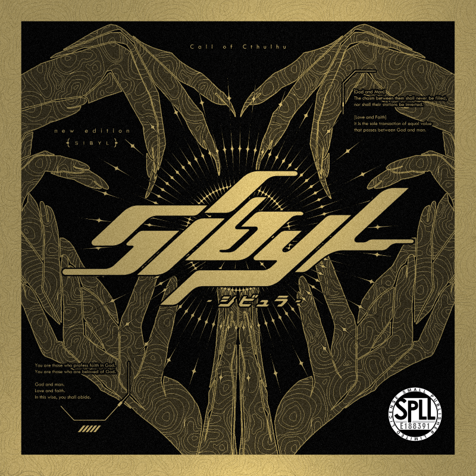
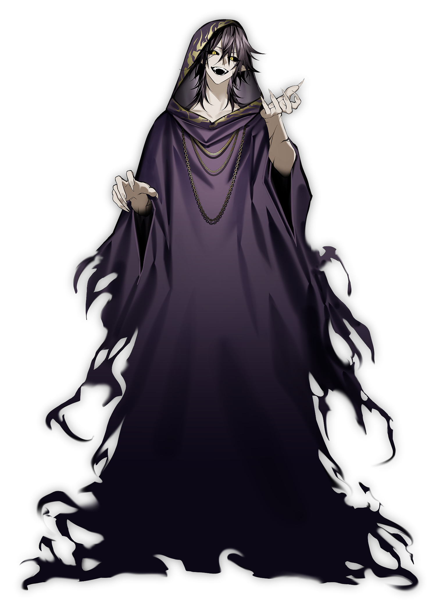
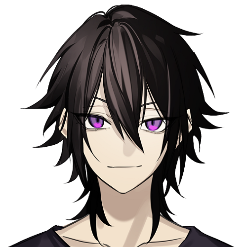
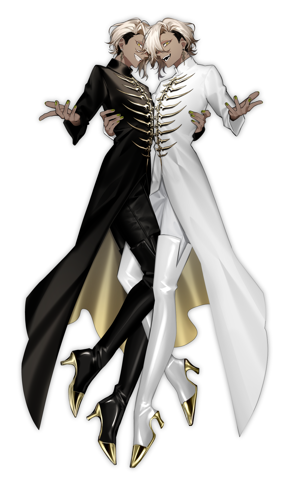
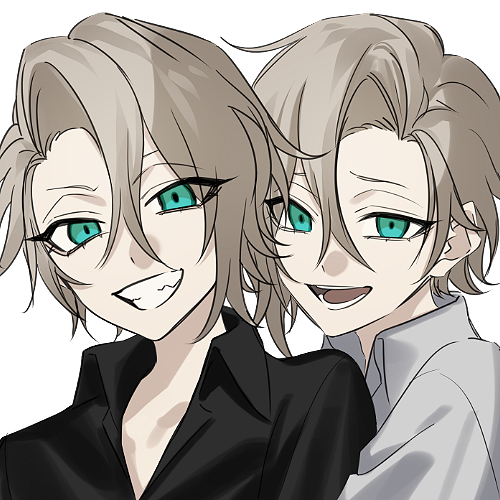
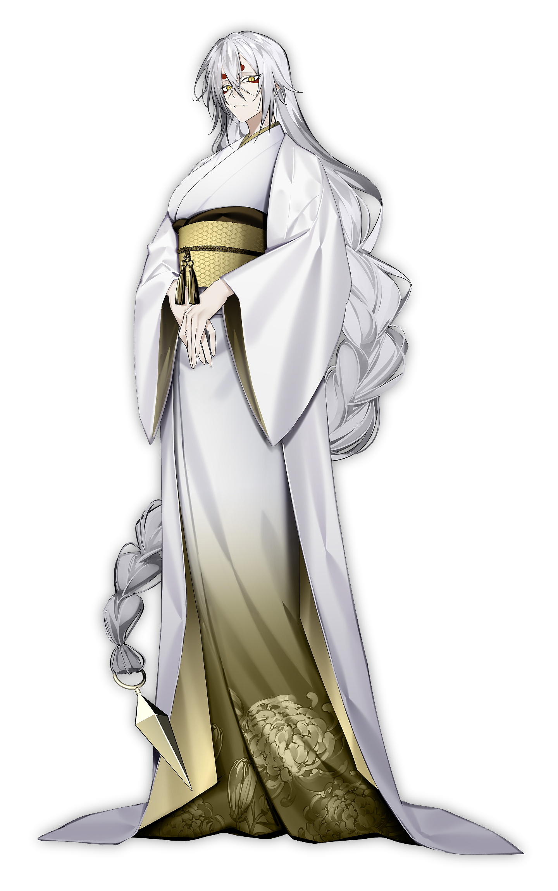
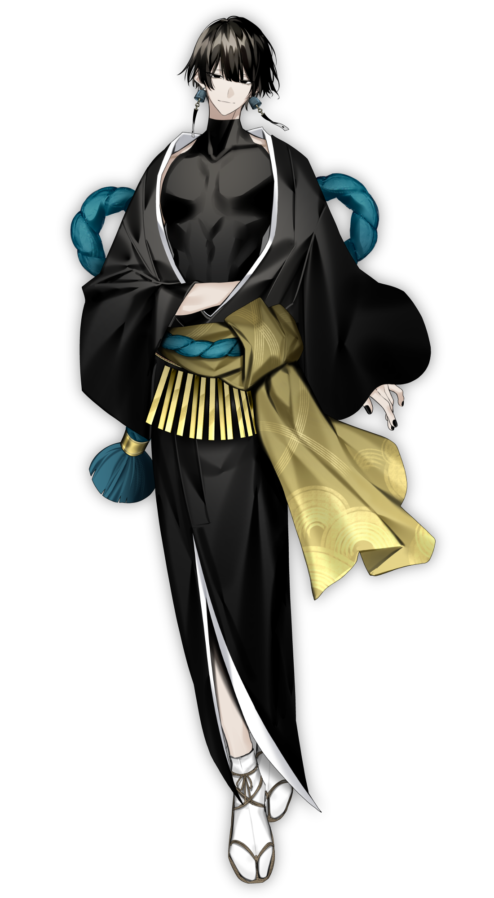
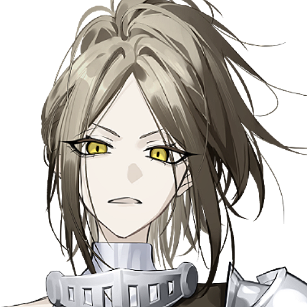
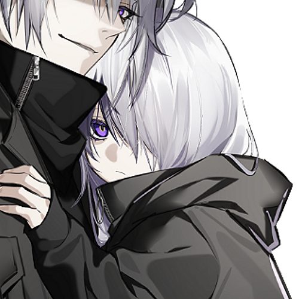

【神與人】
那道鴻溝永遠無法填平，立場也永遠不會逆轉。
【愛與信仰】
那是唯一一種，在神與人之間對等進行的交流。
你們是信仰著神的人類。
你們是被神所愛的人類。
神與人。愛與信仰。那便是你們的存在方式。
本作為「株式會社ARCLIGHT」及「株式會社KADOKAWA」所擁有權利之《克蘇魯神話TRPG》系列的二次創作物。
Call of Cthulhu is copyright ©1981, 2015, 2019 by Chaosium Inc. ;all rights reserved. Arranged by Arclight Inc.
Call of Cthulhu is a registered trademark of Chaosium Inc.
PUBLISHED BY KADOKAWA CORPORATION 「クトゥルフ神話TRPG」「新クトゥルフ神話TRPG」
本劇本為「Sibyl-西比拉-（新版）」。
本劇本雖是將 Sibyl-西比拉-（舊版）加以精修而成的劇本，但由於相較舊版的變更之處甚多，
故將舊版與新版視為各自獨立的不同作品來處理。
因此，請勿將舊版與新版的素材混合使用，亦請勿將新舊版中設定或外觀有所變更的 NPC 相互替換使用。
即便在新版公開之後，繼續遊玩舊版亦無任何問題，但仍請各位避免做出觸及上述 NG 內容的行為。
舊版歸舊版、新版歸新版，請以完全獨立的不同作品來盡情享受，懇請各位協助配合。
作為例外，新版新增的另售素材中，僅「背景插畫」與「原創原聲帶」這兩項，舊版・新版兩部劇本皆可使用。
此外，如上所述，由於舊版與新版被視為不同作品，新版的內容並不會對舊版 PC 的設定造成任何影響。各位無須將既有的 PC 設定配合新版內容調整，敬請安心。
承蒙厚愛，舊版早已有眾多玩家支持，出於不願因這次更新而覆寫既有 PC 設定，以及
不願覆寫各位回憶的心情，我們才將新舊版視為不同作品來處理。
我們在製作時，也希望讓早已遊玩過舊版的各位，能享受到稍有不同的體驗，
若各位有興趣，也非常歡迎您來體驗新版，那將是我們的榮幸。
克蘇魯神話 TRPG（第 6 版）
附秘匿手邊資料 ／ 合作型城市劇本
新建角色固定 4 人
個別導入 ： 含規則說明約 1 小時前後
劇本正篇 ： 15～25 小時（會大幅受到個別行動的多寡・RP 的多寡所左右）
個別導入 ： 現代・PC 居住的據點
劇本正篇 ： 謎樣的賽博龐克都市
共通 HO：你們信仰著×××。
秘匿 HO：Case.1～4
每個 HO 各自存在一名神 NPC。要信仰哪位神，可依 PL 的喜好選擇。
PC 們各自是信仰不同神祇的狂信者，並且是該教團的神官。
你們基於各自的理由，踏入了謎樣的賽博龐克都市＜髑髏龍街＞，在神的支援之下，將對這座都市展開探索。（※此「各自的理由」的部分，將於個別導入中說明）
對神話生物有較為強烈的獨自解讀。
含有不道德・R-18 要素。
部分 HO 含有性描寫、戀愛描寫。
雖為合作型劇本，但 PvP 的可能性並非為零。
距今約 30 年前，一個名為「世界救世機構（WSS）」的組織成立了。如其名所示，他們以藉由眾神之手拯救世界為目的，散布於世界各地，暗中不斷擴大組織的規模。乍看之下這是一個宗教團體，但實際上他們並非信仰著神，而是以利用神的力量來進行救世為最終目的。這樣的他們，立下了一個宏大的計畫。那便是被稱為「神諭之子（西比拉）計畫」的東西。將形形色色的神降臨於人身之上，在限制其力量之後，透過名為「西比拉」的神官來控制神的意志。被限制後的力量雖然不值一提，但即便如此，對於人心掌控與宣傳而言仍具有充分的影響力。因為這正是宗教這種東西的可怕之處。將這世上眾多的宗教、眾多的神，全部由 WSS 來統管，最終企圖達成全人類的思想統一，建立起一個宏大的世界機構——這便是西比拉計畫的構想。在這個時期，這項計畫在水面下甚至得到了國家級別的支援，被寄予了如此高的期望。
然而，理所當然地，事情並沒有那麼順利。時值 26 年前，WSS 開始在世界各地仿造宗教設施而建的實驗設施中，定期進行降神儀式的實驗。但是，即使將以人口販賣等手段購入的依代降下神祇，並配上組織準備好的神官，大半情況下不是依代自身自盡，就是連神官的話語都無法溝通而陷入暴走狀態，最終落得連同依代一併處理掉的下場。這樣的結果一再累積，西比拉計畫陷入了極度的困境。
然而又過了 4 年，那是 22 年前的事。在某座實驗設施中，正準備進行一場使用被視為群蛇之神的「伊格」的實驗。這場實驗，預定首次導入一種手法——將神降臨於嬰兒身上，並安排其母親作為神官，從頭開始將神養育長大。然而，本應成為神官的母親在實驗途中暴走，侵入了魔法陣，導致伊格被降下到的並非嬰兒、而是母親身上。由於這意料之外的事態，實驗看似失敗了，但伊格抱起嬰兒後，竟然開始表示要將這孩子作為神官養育長大。這是一件驚人的事。由於對象是嬰兒，現在還不足以稱其為西比拉，但 WSS 將此判定為成功案例，旋即為伊格準備了專屬的宗教團體「金剛蛇神教」，決定在神官長大之前暫且觀察一段時間。這便是夜刀與 Case.3 的探索者（以下稱為 Case.〇）。
接著是 15 年前。這次成為目標的是 Case.1 與其兄長。Case.1 的雙親是 WSS 的成員，原本如同伊格那次一樣，打算將雙親中的其中一人作為神、孩子作為神官，並在降神之後讓神官那一方被養育長大。然而這場實驗想要降下的神是「莫爾迪基安」，由於依代必須是死體，膽怯的雙親竟對自己的孩子下了毒手。他們將本應是自己孩子的 Case.1 的兄長偽裝成火災殺害，並將其屍體用於實驗。結果，降神成功了。或許也因為莫爾迪基安原本攻擊性就低的性質，既未發生自盡也未發生暴走。然而，莫爾迪基安拒絕以雙親作為神官，轉而指名 Case.1 為神官。組織接受了這個結果，為莫爾迪基安準備了專屬的宗教團體「納骨堂神教團」，將 Case.1 定為首位西比拉的誕生案例。從這時起，WSS 改變了方針——不再於組織內準備神官加以指派，而是先讓神來挑選神官，再將那名神官拉攏進組織。
又過了 4 年，那是 11 年前。這次的實驗預料將比先前兩例更為困難。降神的對象是「納格與耶布」。相較於成功案例的莫爾迪基安，以及正在觀察期中的伊格，這位神可說是更高一階的存在。其目的在於擴大對神格的控制範圍，因此刻意以比前例更高位的神為對象。被選定為依代的，是住在 WSS 經營的孤兒院中的一對雙胞胎少年。由於有了 Case.1 的前例，這個時間點尚未進行神官的選定。結果，是一場大慘劇。降神正常進行之後，這對雙子神以世間罕見的駭人行徑，將在場除 Case.2 之外的所有孤兒院之人蹂躪、虐殺殆盡。實驗看似徹底失敗，但唯一未被殺害的雙子青梅竹馬 1 名（Case.2）被指名為神官。其後，趕到現場的成員保護了那名神官，雖然造成了極為慘重的損害，WSS 仍將此定為第 2 例的西比拉。
另一方面，與此同時，觀察期中的伊格依舊持續養育著神官。曾為嬰兒的神官如今也已年滿 12 歲，由於兩者精神都極為穩定，WSS 正式將其定為第 3 例的西比拉。此外，從這些結果中，WSS 判斷神與西比拉之間的契合度，深受作為依代之人類所懷有的情感影響甚鉅。並作為一項假設，定義出「對神而言，愛亦為有效」。
同年，為了佐證上述假設，從成員之中選出了一對處於戀人關係的 2 人，進行了一場使用「祖沙坎」的實驗。結果，正如想像。原本，祖沙坎是一位在召喚的同時便會對周遭造成極為慘重損害的神格，然而成為神的那名男子既未自盡也未暴走，甚至還表現出顧慮、擔心會牽連到身旁戀人的言行。WSS 將此定為第 4 例的西比拉，並將「對神而言，愛亦為有效」這項假設轉化為確信。 以上，便是探索者們 Case.1～4 的故事。
從這裡開始，是連接劇本正篇的 Case.5～6 的故事。
距今 10 年前，在先前的 Case.4 中得到了「對神而言，愛亦為有效」這項確信的 WSS，接著開始思考是否連「愛」這種東西本身，也能藉由西比拉加以操縱。例如，若能利用司掌絕對之「愛」的神之力量，是否就連其他神格也能更輕易地加以控制呢——他們如此想著。於是他們盯上的，是印度教中的愛之神「伽摩」。伽摩作為神的格位與至今的諸神不可同日而語，若實驗成功，效果想必會極為巨大。在此被選出的，是自幼年期起便與 WSS 有所聯繫、在某軍事設施中養育長大的一對姊弟軍人。他們是戰爭孤兒，雖為姊弟卻同時是戀人關係，擁有著無法斬斷分割的羈絆，因此被判斷具有成為神與西比拉的適性。
……到這裡為止都還算順利。但是，WSS 在此犯下了一個重大的誤解。那便是關於伽摩這位神的特性。伽摩擁有另一個面向，即被稱為魔羅的魔王側面，而那與克蘇魯神話概念中所稱的「惡心影」——奈亞拉托提普的化身——意義相同。愛之神伽摩，其實是名為伽摩魔羅的二神一柱之邪神。 在不知情的狀況下，WSS 決意執行實驗。結果，被降下到作為依代之姊姊肉體中的，並非伽摩，而僅有魔羅這一側面。面對僅有半身這般不完全的降神，魔羅暴走，將設施內的所有人都消滅得不留痕跡，對組織造成了計畫史上最為慘重的損害。其後，這座設施雖經派遣而來的成員徹底地一一查驗，但包含目標姊弟在內，無一人被確認為生還者，因此實驗被斷定為失敗。
接著，時間稍微推進到 3 年前。在先前的實驗中蒙受慘重損害的 WSS，於此時思索起下一步的對策。為了不再造成相同的損害，這次他們打算另行準備一位用來制止陷入暴走狀態之神的神。於是被採用的，是名為「恩賽‧卡姆布爾」的神。這位厭惡外神與舊日支配者的女神，作為對抗暴走的對策，想必稱得上有效。此處從一間小修道院中，選出了 2 名具有適性者。實驗結果也十分良好，神與神官兩者雖各有些許難以駕馭之處，但都得以順利地置於 WSS 的管理之下。WSS 將此定為第 5 例的西比拉。
然後，終於來到現在。WSS 取得了一則驚人的情報。據說在日本的市中心，存在著一座通稱「髑髏龍街」的巨大地下街。那裡的樣貌正令人聯想到賽博龐克都市，犯罪・暴力無所不有，甚至還能隨處見到現代尚未能達到的技術，是一座不折不扣的混沌之街。發現此地的 WSS 魔術師旋即分析出，這座「髑髏龍街」並非現實中的市中心地下，而是由強大神格所創造出來的異空間。在事前調查中得知這個空間的發生時期，正是 10 年前那起事件之後不久，因而推測這或許是與伽摩及那對姊弟相關聯的現象。據此，WSS 本部決定動用 Case.1～5 的西比拉來著手調查這個異空間，並設法確保那對姊弟。
雖然篇幅相當長，但這便是連接到本次導入的背景。
探索者們將基於各自的理由，與各自所信仰的神一同推進對這座「髑髏龍街」的調查，最終得以知曉這項宏大計畫的全貌。當得知這一切之時，每個人各自會作何感想、各自與其神之間的關係會如何變化——品味這些，正是本劇本的精髓所在。
約 30 年前，《世界救世機構（WSS）》這個組織成立了！
他們心想：「只要利用宗教的力量統一思想，世界就會變得和平啦！」於是構想出《西比拉計畫》。
那是一項危險的計畫——“將神降到人類的身體裡使其弱化，再透過名為西比拉的神官加以管理”！
然而實驗卻接連失敗。
降到依代身上的神會暴走，隨便找來的神官根本難以控制神。傷腦筋……。
就在這時，WSS 察覺到了某個法則。
那便是，「對神而言，‘愛’亦為有效」這件事。
唯有當把家人、戀人、青梅竹馬等以強烈情感相繫的人們分別作為神與神官時，神才會相對地穩定下來。
得知此事的 WSS，便開始一邊利用愛與依存關係，一邊持續進行實驗。
↑
這場實驗的受害者們，正是本次的 PC、NPC 們。
然後是 10 年前。
WSS 終於企圖利用“司掌愛本身的神”。
但是，那場實驗以大失敗告終。設施被暴走的神所摧毀。
當時生還的實驗體們從 WSS 逃亡，為了藏身而在異空間中築起一座名為《髑髏龍街》的異常都市。
然後，時間再次跳躍到現在。WSS 發現了那座都市。
WSS 為了調查這座都市，七拐八繞地將 PC 們引導到了街上。
探索者們各自帶著不同的神四處奔走、調查髑髏龍街，
終將觸及到《西比拉計畫》的真相，以及自己與神之間的關係……。
本劇本中存在數個複雜的處理與設定。
這些僅為本劇本內部的特殊處理，請務必牢記它們並非官方規則。
另備有事前配布資料，請將其發給 PL。
首先，在本劇本中，可透過獻上信仰點數（以下簡稱「信仰」）來從各神獲得恩寵。所能獲得的恩寵因各神而異，這些將於各自的個別導入中揭曉。
獻上信仰主要有三種方法。
SAN 1 等同於信仰 1。
此理智值喪失不會引發發狂。
MP 1 等同於信仰 1。
MP 於劇本中日期變換時將全數回復。
POW 1 等同於信仰 10。
當然，失去的 POW 不會回復，幸運與 MP 的最大值等也會隨之減少。
信仰不僅可由信者本人支付，也可讓他人代為支付。不過，由於藉此獲得恩寵的僅限信者本人，因此要實行這點，只能仰賴對方的協力，或是強迫對方聽從吧。
你們是狂信者。因此，若做出能讓各自所信之神稱讚的事，便能因喜悅而回復理智值。要如何才能獲得稱讚，則因各自的特性而異。
本來這意味著探索者失落出局，但在本劇本中將進行特殊處理。
於劇本途中理智值歸零的探索者，將暫時把行動的決定權移交給神。
詳情請參照【SAN 歸零事件：夢的延續】。
推薦技能與設定的詳情記載於各自的秘匿 HO 中，請參照之。
共通的製作規則為
・克蘇魯神話技能須習得 10% 以上（上限 20%）
・瞳色不可設定為金色（或黃色）
此二點。
習得克蘇魯神話技能所造成的理智值減少請參照核心規則書。
現狀下，PC 們所信仰的神，是以作為活祭獻上的人類為依代而顯現於現世的。
大致接近所謂的半神（demigod）狀態吧。因此其行動受到一定程度的限制，能力也較原本弱化。神的姿態，曾在某種程度上接觸過神話事象的人尚能認知，但反過來說，沒有這類經驗的一般人便難以認知神的姿態。讓 PC 習得克蘇魯神話便是為此。
此外，本劇本登場的神 NPC 皆擁有「金色之眼」，但其中也存在以自身意志改變眼色的 NPC。
秘匿手邊資料同樣另備有配布用 PDF，請將其發給 PL。
你信仰著納骨堂之神「莫爾迪基安」。
與祂的相遇是在 15 年前。
你在 15 年前因一場火災失去了全部家人。
起火原因不明。雖有縱火的傳言，但兇手至今未被找到。
無論如何，唯獨你一人被從這場火災中救出，突然間成了天涯孤獨之人。
而且，被送往醫院的你，或許是因當時的精神衝擊，別說是那之前的過往了，就連家人的容貌都模糊難記。走投無路的你不知為何，竟逃出醫院，前往附近的墓地。
就在那裡，你與那位神相遇了。
紫色的長袍配上金色的飾品，臉與手臂上有著如龜裂般的紋路。
而最重要的，是那雙黑與金的眼，訴說著祂是超乎常理的存在。
「你，叫什麼名字？」
被這麼一問，你坦率地報上了名。
「這樣啊。那麼，」
祂將那尖銳的爪指向你，朝你一指。
「我便立你為神官。」
對這句話，你感到困惑。然而，與此相反，從你口中說出的卻是肯定的回答。
那是為何，則交由各 PL 自行決定。
或許是對你的回答感到滿意，祂…福爾特輕輕地拍了拍你的頭。
這，便是你與那位神相遇的故事。
其後，你被親戚收養，直到長大成人都在那裡過著一般的生活。
…只除了一點，你逐漸傾倒於宗教這件事。
・須習得克蘇魯神話技能 10% 以上（上限 20%）
・年齡須為 22～28 歲
・瞳色不可設定為金色（或黃色）
・基於某種理由能說日語（以利 PC 間對話順暢）
・你除了狂信者的身分外，還擁有一般的表面身分。
職業可選擇「狂信者」，也可選擇其他職業。
戰鬥技能（必須）、<偵查>、<圖書館使用>、<電腦使用> 等
你有一件事瞞著祂。那便是關於要獻給祂的活祭。
最近，收到通知說，拜託信者採購進來的大量活祭（屍體）被偷走了，導致現在正鬧著嚴重的活祭不足。
雖然瞞著祂，一點一點地減少獻上的量，但祂大概也差不多要察覺到異樣了吧。
已查明活祭是在某偏遠村落消失的，但派去尋找的信者也音訊全無。該怎麼辦才好。
調查被偷走的活祭的下落
另外，此目的為劇本開始時的目的，隨著故事的進展，PC 的心境也可能會有所改變。
屆時，捨棄此目的亦無妨。
・目前你隸屬於「納骨堂神教團」這一宗教團體，身居神官之位。
・納骨堂神教團是自古崇拜莫爾迪基安的教團，聽聞兩人傳聞的信者們懇求，
以將你們供奉起來的形式引入教團，便是其開端。
・教團規模約 30 人。教團所在地請配合 PC 的出身地自由決定。
・你將活祭的管理一任於其他信者，自身從未進行過採購。
・你雖不記得家人的容貌與家庭構成等，但從親戚那聽說，原本是與雙親三人組成的家庭。
・這 15 年來你是如何度過的，又是如何與祂相處的，可由 KP 與 PL 商量後自由決定。
但前提是，兩者的關係始終維持著神與神官間恰當的距離感。
並非不和，確實存在著一定的信賴關係。
你信仰著褻瀆雙子「納格與耶布」。
你沒有 11 年前以前的記憶。
11 年前的那一天。
強烈殘留於印象中的，是那撲鼻而來的鐵鏽味與濃烈的精液味。
你身在孤兒院，眼前便是祂們。
四周，散落著被祂們的觸手姦殺的孤兒院眾人，以及從其腹中爬出的異形生物，鋪滿了繪有魔法陣的整片地板。
唯有你，是這空間中唯一還在呼吸的人。
「就選這孩子？」「就選這孩子吧。」
無視茫然癱坐的你，祂們咯咯地笑著。
「吶你，叫什麼名字？」「啊不，其實怎樣都無所謂啦。」
說完，祂們將你的身體拉起，伸手環上你的腰。
「「那條命，能不能為我們而用呢？」」
對此，你心中作何感想交由 PL 自行決定，但你卻自然而然地對那句話點了頭。
畢竟打從一開始，你便沒有拒絕的權利。
那，便是 11 年前你與祂們的相遇。
其後，一個人什麼都做不了的你被村裡的大人們保護，在那些大人的協力下設立了「聖雙晶教團」這一宗教團體。你半被推舉似地被任命為神官。
・須習得克蘇魯神話技能 10% 以上（上限 20%）
・年齡固定為 24 歲
・瞳色不可設定為金色（或黃色）
・基於某種理由能說日語（以利 PC 間對話順暢）
・你將全部時間都用於教團生活，因此沒有狂信者以外的表面身分。職業固定為「狂信者」。
戰鬥技能（必須）、某種色色的技能※、<偵查>、<圖書館使用> 等
※這是個用以僅憑擲骰便完成帶 R18 要素角色扮演的大喜利（即興搞笑）技能欄位，因此若想全靠 RP 補完，最壞情況下不取也無妨。
你最近有件在意的事。那便是關於這個教團的信者。原本就是人數不多的團體，但最近總覺得人數又更少了。當然各人都有各自的生活，信者也並非每天都會露面，但就算如此，不再露面的人還是增加了。是否該把這件事告訴祂們呢。
在留意祂們的神色之餘，調查消失的信者
另外，此目的為劇本開始時的目的，隨著故事的進展，PC 的心境也可能會有所改變。
屆時，捨棄此目的亦無妨。
・目前，你隸屬於「聖雙晶教團」這一宗教團體，身居神官之位。
・教團的所在地可自由決定，但這座村落相對偏鄉、是個封閉的村莊。
・聖雙晶教團規模約 30 人。
・你雖沒有記憶，但你確實曾入住孤兒院。
此外，11 年前的事件，傳言是數名宗教人士利用孤兒院眾人作為活祭所引發的事件。
・這 11 年來你是如何度過的，又是如何與祂們相處的，可由 KP 與 PL 商量後決定，
但至今的一般教育全部在教團內完結，視為未受過義務教育等。
・基於此神格的特性，你與祂們理所當然地擁有肉體關係。
但這對雙子絕不會處於承受的一方。你才是承受的一方。
你信仰著群蛇之父「伊格」。
你自有記憶以前，便在信仰蛇神的宗教團體「金剛蛇神教」中長大。
原因是你是個棄嬰，據說嬰兒時期被棄置於教團門前。
發現你的蛇神，便將你撿回並決定在教團中養育。
故此你將蛇神…父上當作真正的親人般敬慕。
信者們皆稱蛇神為「父上」並敬慕之，而你在其中更是特別受父上垂青的存在，立場近乎側近。
對你而言，這想必是無比光榮之事。
當然，其他信者們也都把你當作真正的家人般疼愛。
這個教團對你而言，是如同真正家人般的存在。
如今你身在這個教團，毫無疑問是幸福的。
幼時，父上曾頻繁地對這樣的你說過一句話。
「世上，也有些事還是蓋著不掀開為好。」
「做個什麼都不知道的孩子吧。只要健康地長大，待在我的身旁便好。」
那意味著什麼，當時的你並不太明白。
直至今日，你仍未曾被告知那答案。
・須習得克蘇魯神話技能 10% 以上（上限 20%）
・年齡固定為 22 歲
・瞳色不可設定為金色（或黃色）
・基於某種理由能說日語（以利 PC 間對話順暢）
・你將全部時間都用於教團生活，因此沒有狂信者以外的表面身分。職業固定為「狂信者」。
戰鬥技能（必須）、<偵查>、<圖書館使用>、交涉類技能 等
你最近有件稍微在意的事。數日前，幾名出外到街上勸誘入教的信者至今仍未歸來。
他們對你而言形同家人，毫無音訊也令人擔心。父上想必也是這麼想的吧。
果然還是該向父上商量嗎。
在聽取父親意見之餘，調查信者的下落
另外，此目的為劇本開始時的目的，隨著故事的進展，PC 的心境也可能會有所改變。
屆時，捨棄此目的亦無妨。
・目前，你隸屬於「金剛蛇神教」這一宗教團體，身居神官之位。
・金剛蛇神教的所在地是日本某處深山。
・教團規模約 50 人。
・平時你以照料父親的起居、照顧蛇、鍛鍊武藝等度過每一天。
・這 22 年來你是如何度過的，又是如何與父親相處的，可由 KP 與 PL 商量後決定，
但至今的一般教育全部在教團內完結，視為未受過義務教育等。
・此外，兩者的關係始終以維持神與神官間恰當的距離感、以及保持如親子般的距離感為前提。
並非不和，確實存在著一定的信賴關係。
・另外，父親對禮儀十分講究，一有失禮便會立刻動怒。
你信仰著暗黑沉默者「祖沙坎」。
你是名為「世界救世機構（WSS）」的組織的研究員。
如其名所示，這個以藉由神之手救濟世界為目的的組織，正推進著一項名為「神諭之子（西比拉）計畫」的龐大計畫。這是將各種神降於人身、限制其力量之後，透過名為西比拉的神官來操控神之意志的計畫；藉由 WSS 統括這世上眾多的宗教、眾多的神，最終謀求全人類的思想統一，構築一個宏大的世界機構，便是此計畫的構想。
11 年前，你作為該計畫的一環，以同屬該組織的戀人「禍津國人」的身體為依代，進行了祖沙坎的招來。
結果，儀式成功。
你順利被選為祖沙坎…禍津的神官，就任西比拉之職。
你以何種心情面對這場降神儀式交由 PL 自行決定，但這是禍津國人自身所期望的結果。
成為神的你的戀人，外表雖殘留著面影，內裡卻已是另一個存在，至今的記憶也未曾留存。
對此，你多少抱有罪惡感。
「你若露出那般神情，他也難以瞑目。」
祂溫柔地對你說出這樣的話語。
那言行，與戀人的氣質極為相似。
而數日前，你接到了一則聯絡。
那是調查可從東京市中心侵入的異空間、以及確保據傳潛伏於其中的逃脫的實驗體的命令。
你必須作為西比拉操使禍津，前往執行這項任務。
・須習得克蘇魯神話技能 10% 以上（上限 20%）
・年齡須為 27～40 歲
・瞳色不可設定為金色（或黃色）
・基於某種理由能說日語（以利 PC 間對話順暢）
・你的職業固定為「WSS 研究員」
職業技能：<神祕學>、<心理學>、<精神分析>、<電腦使用>、<醫學>、<藥學>、<人類學>、<克蘇魯神話>
戰鬥技能（必須）、<電腦使用>、<偵查>、<圖書館使用> 等
目的是調查異空間，以及搜索 10 年前失蹤的實驗體。對外就說有信者下落不明，以此將禍津帶往現場。異空間的入口在東京市中心，據說只要去了禍津便會設法處理。
導致實驗體失蹤的 10 年前的儀式以失敗告終，幾乎沒有留下任何資料。
聽說這項任務還預定投入另外 4 名西比拉，但除了「帶著高個子女性的青年」之外，其餘全員似乎都未自覺自己是西比拉。據說會以誘導的形式讓他們前往現場，因此必須格外小心，切勿向他們透露計畫的實態。（此內容於個別導入中將會再次說明。）
巧妙誘導其他西比拉們，推進異空間的調查以及實驗體的搜索・確保
另外，此目的為劇本開始時的目的，隨著故事的進展，PC 的心境也可能會有所改變。
屆時，捨棄此目的亦無妨。
・目前，你隸屬於「咒鐘九怨教」這一由 WSS 經營的宗教團體，身居神官之位。
・教團的所在地是日本某處深山。規模約 200 人。於暗室中冥想是主要的信仰形式。
・這 11 年來你是如何度過的，又是如何與祂相處的，可由 KP 與 PL 商量後決定。
・另外，你在 WSS 內的立場約為中堅，無權知曉其他西比拉的詳情。
・現今，你身為 WSS 的工作，僅是作為神官隨侍於禍津身旁、報告其狀況而已。
・此外，禍津並不知曉 WSS（咒鐘九怨教的實態）以及西比拉計畫之事。
因為祂始終是被這項計畫所利用的一方。
納骨堂之神／莫爾迪基安
Case.1 所信仰的「納骨堂之神」。
主要受食屍鬼及與其相關者所崇拜。
性格與長相相反，相當溫厚，對信者也很友善。
只要以相應的態度對待，祂便會以威嚴回應。成為祂依代的是 Case.1 的兄長。正確來說，是用兄長的屍體進行了儀式。兄長無意間聽見雙親要殺害 Case.1 並作為依代的對話，本想呼救，卻被發現而遭到殺害。即使如今已成為神，祂對探索者的庇護慾仍格外強烈，常會流露出身為兄長的一面。
主題是「友愛」。
▮身高 —————— 202cm
▮體重 —————— 95kg
▮喜歡的東西 ——— 帶骨肉、葡萄酒
▮討厭的東西 ——— 生菜
▮第一人稱 ————— 俺、本大爺
▮第二人稱 ————— 你這傢伙

・不對他人加敬稱（所有神 NPC 皆通用）。對 Case.1 直呼其名。
・探索者陷入困境時，會不著痕跡地給予建議或伸出援手。
・收到人肉作為禮物會很高興。摸摸頭可回復 SAN 值。
・若他人不當對待 Case.1，會明確表現出不悅。
・進入戰鬥時，會先向探索者確認行動，基本上聽從其指示。
・若傷害使探索者 HP 低於一半，會擋在前面替其承受傷害。
・總覺得最近活祭好像變少了。肚子餓了。
Case.1 的兄長
▮年齡 —————— 15歲
▮身高 —————— 165cm
▮體重 —————— 54kg
▮生日 ————— 2/10

Case.1 的兄長。國籍・姓氏因取決於 Case.1 而未設定，但名字為「雷歐（或玲央）」。
他與 Case.1 及雙親是四口之家，雖然樸素，卻過著相對幸福的生活。然而某時起，雙親開始醉心於世界救世機構（WSS）的理念，經常不在家。他為了安撫年幼的 Case.1，雖然自己也還是孩子，仍盡心照料。然後在雷歐 15 歲那晚，他碰巧半夜醒來下樓到客廳，撞見雙親正在爭吵。他在走廊偷聽時，明白了那是殺害 Case.1 的計畫。他急忙想去求救，卻或許是運氣不好，弄出了聲響而被雙親發現。雙親察覺話被他聽見後，將他亂刀刺死，決定以雷歐的屍體代替 Case.1 作為依代。雙親為了湮滅證據而放火燒屋，也讓組織偽造了自己的屍體，僅讓 Case.1 受組織保護，並為求萬無一失而使用「使記憶模糊」的咒文。偽裝成 Case.1 因受到衝擊而失去了家庭成員等記憶的樣子。
褻瀆雙子／納格與耶布
Case.2 所信仰的「褻瀆雙子」。
白色那位是斯拉，黑色那位是拉斯。雖是極為強大的雙子神，卻相當情緒化、難以應付。畢竟身為舒伯‧尼古拉斯的孩子，被相當變態的邪教所崇拜。若要借助祂們的力量，當然必須抱著獻出己身的覺悟。成為祂們依代的是 Case.2 的青梅竹馬。祂們雖是青梅竹馬，卻對探索者懷有近似獨佔慾的情感。就像「喜歡的對象重疊了？那兩人一起疼愛祂不就好了」那樣的感覺。因此即使如今已成為神，祂們仍持續執著於探索者。對探索者強烈的獨佔慾與虐待心和神格的特性交融，以性行為進行的支配成為主軸。
主題是「偏執之愛」。
▮身高 —————— 195cm（不含高跟鞋）
▮體重 —————— 92kg
▮喜歡的東西 ——— 彼此、雜交、晴王麝香葡萄
▮討厭的東西 ——— 忍耐、紅蘿蔔
▮第一人稱 ————— 我們
▮第二人稱 ————— 你

・不對他人加敬稱（所有神 NPC 皆通用）。對 Case.2 直呼其名。
・即使探索者陷入困境也不會出手相助。笑著旁觀。屬於想逼對方說出「救救我」的類型。
・若覺得實在太過拖泥帶水，會擅自徵收信仰並賜予恩寵。
・SAN 值回復僅限性行為。
・只要消耗行動回合，一天可隨意進行幾次，但第二次起 HP 減少 1d3。
・除非被請求，否則基本上不會協助與雜兵的戰鬥。若要讓祂們參戰，每回合徵收信仰5。
・若探索者受到會致死的傷害，會擋在前面替其承受傷害。
・打從一開始就認為聖雙晶教團對自己和 Case.2 有所隱瞞。
・不過，目前教團對祂們言聽計從，故而暫且放任不管。
Case.2 的青梅竹馬
▮年齡 —————— 13歲
▮身高 —————— 155cm
▮體重 —————— 43kg
▮生日 ————— 4/2

Case.2 的青梅竹馬。德國人。孤兒院出身。白色那位是里希特（弟），黑色那位是納赫特（兄）。
兩人總是去找 Case.2 糾纏，這麼相處下來，對 Case.2 的獨佔慾愈發強烈，開始在暗地裡霸凌孤兒院的其他孩子，不讓他們接近 Case.2。如此孤立 Case.2 之後，再以只有自己對其溫柔的方式，誘使 Case.2 依賴自己。然而災難降臨在這兩個以觀看如此可憐的 Case.2 為樂的人身上。突然來了一群不認識的大人，將他們的身體強行拖走，丟到魔法陣上。這也讓雙子陷入困惑。他們拼命試圖抵抗，但年僅 13 歲的他們敵不過大人。儀式就這樣進行下去，他們在 Case.2 面前被當作活祭獻祭了。成為神的他們繼承了那股憤怒，將在場除 Case.2 以外的所有人全部殺死。
之後，被選為神官、受組織保護的 Case.2，因「使記憶模糊」咒文的效果，被偽裝成因目睹過於慘烈的景象而受衝擊失去記憶的樣子。
群蛇之父／伊格
Case.3 所信仰的「群蛇之父」。
信者稱祂為『父上』並加以崇拜。
性格嚴格，正是一副神的姿態，但說到底對信者還是很寵。反之，對於膽敢加害身為自己孩子的信者者絕不寬貸，會讓對方見識祂的力量。成為祂依代的是 Case.3 的母親。母親原本應成為神官，卻在面對本應作為依代的親生孩子時失控。儀式途中闖入魔法陣，自己成為了依代。或許是受此影響，祂選擇剛出生的親生孩子為神官，作為近侍開始培育。
主題是「家族之愛」。
▮身高 —————— 240cm
▮體重 —————— 110kg
▮喜歡的東西 ——— 溫暖的地方、昆布茶
▮討厭的東西 ——— 粗俗的言行
▮第一人稱 ————— 我（わたし）
▮第二人稱 ————— 您

・不對他人加敬稱（所有神 NPC 皆通用）。稱呼 Case.3 為「お前（你）」。
・探索者陷入困境時會給予建議。不過，多少有些用蠻力解決的傾向。
・關於 SAN 值回復判定較寬鬆，只要是讓祂覺得孝順的行為便會受到稱讚。
・相對地，只要有一絲粗俗的言行就會被責罵。每次 SANc 1/1d3。
・探索者被攻擊命中時必定擋在前面。之後會優先攻擊出手者。
・從被招來時的狀況，對金剛蛇神教感到不對勁，但考慮到培育 Case.3 必須仰賴教團的協助，
至今都刻意不說出口。
Case.3 的母親
▮年齡 —————— 18歲
▮身高 —————— 164cm
▮體重 —————— 53kg
▮生日 ————— 3/20
Case.3 的母親。原本是被人口販賣賣身的人。名字是「19號」。
她原是極為普通的少女，16 歲時遭人擄走，被拿去人口販賣。被 WSS 買下後，僅為了「對嬰兒降神，從零開始培育神」的驗證實驗，而與其中一名研究員性交、被迫懷孕。當然，這是未經同意的行為，因此她備受折磨，但即將出生的嬰兒並無罪過，她哼著歌，對腹中的 Case.3 傾注了滿滿的愛。然而與此同時，她也明白這嬰兒將成為儀式的活祭，故而時常以淚度日。然後在 18 歲時，她生下了 Case.3。其後不久儀式開始，她鼓起勇氣闖入魔法陣，代替 Case.3 成為了依代。被召喚而來的伊格，從這個狀況推測出身體的主人是嬰兒的母親。雖對周圍的人類稍感厭惡，但判斷為了嬰兒的成長，這些人類的協助不可或缺，便接受了這個狀況。
暗黑沉默者／祖沙坎
Case.4 所信仰的「暗黑沉默者」。
受名為咒鐘九怨教的密教所崇拜，信者稱祂為「禍津大人」。是位始終空洞、令人捉摸不定的神。對任何人都溫柔，不曾收起微笑。成為祂依代的是 Case.4 探索者的戀人。身為組織研究員的他，得知身為戀人的 Case.4 將被利用於計畫，便更改計畫，讓自己代替 Case.4 成為依代。即使如今已成為神，仍對 Case.4 懷抱不變的愛，為了吸引他／她的注意，會無意識地做出與依代相同的言行。
主題是「情愛」。
▮身高 —————— 188cm
▮體重 —————— 85kg
▮喜歡的東西 ——— 安靜的地方、貓
▮討厭的東西 ——— 狗（因為不親近自己）
▮第一人稱 ————— 我（わたし）
▮第二人稱 ————— 你（あなた）

・不對他人加敬稱（所有神 NPC 皆通用）。稱呼 Case.4 為「おまえ（你）」。
・探索者陷入困境時會給予精確的建議。並且完全不否定探索者。
・在有高低落差處牽手等，毫無節制地寵溺。全力擺出男友的姿態。
・SAN 值的回復方法是在安靜的地方一起用餐。周圍若有其他探索者在場則不會發生回復。
・探索者被攻擊命中時必定擋在前面。對此說服也無效。
・由於 Case.4 看的不是自己而是國人，為了吸引其注意，自稱禍津，並將眼睛的顏色、言行都向國人靠攏。
・對 WSS 並不知情，但對咒鐘九怨教與 Case.4 明確感到不對勁。然而，只要能和 Case.4
在一起就什麼都好，故而不會深究此事。
Case.4 的戀人／WSS 研究員
▮年齡 —————— 設定為 Case.4＋5 歲左右（可變更）
▮身高 —————— 188cm
▮體重 —————— 75kg
▮生日 ————— 6/13
Case.4 的戀人。與 Case.4 同為世界救世機構的研究員。名字是禍津國人。
是個極為聰慧的人，在組織內其能力也備受肯定。原本身為研究員的立場，是即使面對組織所進行的非人道儀式也不為所動的人，但自從與 Case.4 發生關係以來，那套想法開始動搖。而就在此時，他從組織高層的對話中得知，一項利用自己與 Case.4 進行的「愛對神也有效」新驗證實驗即將展開。得知該儀式將以 Case.4 作為依代後，他向高層直接交涉，將依代從 Case.4 改為自己。之後，他告訴 Case.4「這是自己希望這麼做的」，單方面地告別。儀式就這樣成功，成為神的禍津身上只剩下對 Case.4 的戀慕之情。察覺 Case.4 看的不是自己而是國人後，或許出於些許嫉妒，他做出與國人相同的言行，讓 Case.4 迷惑。
女神／恩賽‧卡姆布爾
▮身高 —————— 185cm
▮體重 —————— 70kg
▮喜歡的東西 ——— 甜點全般
▮討厭的東西 ——— 外神與舊日支配者
▮第一人稱 ————— 我
▮第二人稱 ————— 你

Case.5 的神。個性剛強，不太聽人說話。成為依代的是神官・雷維所在修道院的修女。原是正義感強烈、無論對人對己都總是嚴守規律生活的女性。為了守護因貧困而瀕臨關閉的修道院，接受了前來挑選依代的組織以資助金為交換的邀約，參與計畫，在招來實驗的最後成為女神。本劇本中，她趁此機會企圖排除西比拉計畫中誕生的神們，背叛組織並嘗試逃亡，卻遭到 Case.6 的桑茲等人襲擊而死亡。雷維每天向她告白，她每次都拒絕，但日後會認為其實也不壞。
女神的信徒／Case.5 的西比拉
▮年齡 —————— 17歲
▮身高 —————— 176cm
▮體重 —————— 63kg
▮喜歡的東西 ——— 女神大人
▮討厭的東西 ——— 其他一切
▮第一人稱 ————— 僕
▮第二人稱 ————— 您
在貧窮修道院被養育長大的孤兒青年，Case.5 的西比拉。非常喜歡同修道院的修女，傾慕她到每天告白的程度。3 年前，得知修女為了讓修道院存續而要參加西比拉計畫，他強行加入 WSS。即使修女成為女神・露琪亞之後，他對她的愛仍無止境，即便她企圖背叛組織，他也欣喜地伸出援手。能對她有所助益是至上的喜悅，為此就算死也無所謂。本劇本中與女神共同赴死。
情報販子／Case.6 的西比拉／逃脫的實驗體
▮年齡 —————— 30歲
▮身高 —————— 180cm
▮體重 —————— 70kg
▮喜歡的東西 ——— 姊姊、起司
▮討厭的東西 ——— WSS、宗教
▮第一人稱 ————— 俺
▮第二人稱 ————— 你、直呼其名
Case.6 的西比拉。髑髏龍街的情報販子，前軍人。表面上自稱桑茲。他正是將髑髏龍街製作成由第六天魔王支配之街的地圖數據的當事人，為了躲避 WSS 而與伽摩協力，完成了髑髏龍街這個異空間。其行動理念唯有姊姊（戀人）的生存這一項，為此不惜排除其他一切，是這樣的性格。本劇本中，他判斷潛入髑髏龍街的 PC 們是 WSS 的追兵，以排除他們為目的，但最終提議暫時協力一同打擊組織。他也和 PC 們一樣，一邊以從惡心影獲得的能力強化自身一邊戰鬥。
第六天魔王／伽摩魔羅／奈亞拉托提普的化身
被稱為惡心影的奈亞拉托提普的化身。「愛與混沌之神」。
本劇本將惡心影＝第六天魔王＝伽摩魔羅解釋為同一存在。
伽摩魔羅是二神一柱，伽摩司掌「愛」，魔羅司掌「混沌」。
魔羅／逃脫的實驗體
▮身高 —————— 120cm
▮體重 —————— 25kg
▮喜歡的東西 ——— 桑茲
▮討厭的東西 ——— 桑茲討厭的東西

Case.6 的神。成為依代的是桑茲的姊姊（同時也是戀人）。計畫原本設想顯現愛之神伽摩，卻意外地只有另一面向的魔羅顯現於其身。由於不完全的降神，未能保有自我，陷入失控狀態，將實驗設施內所有人類消滅得無影無蹤。與身為西比拉的桑茲、隨後追來顯現的尼羅耶（伽摩）一同從設施逃亡，直至今日。原本就是寡言的性格，自我變得淡薄的現在更是完全不說話了。即便如此，似乎唯獨能與桑茲意思相通。
伽摩／桑茲的協力者
▮身高 —————— 175cm
▮體重 —————— 62kg
▮喜歡的東西 ——— 戀愛話題
▮討厭的東西 ——— 無
▮第一人稱 ————— 俺
▮第二人稱 ————— 你（君）、直呼其名
通稱「愛之神」。表面上自稱尼羅耶。是為桑茲、艾瑪作掩護而創造髑髏龍街的神。本是作為伽摩魔羅二神一柱的存在，卻因西比拉計畫只召喚了魔羅，因而分離。為了取回自己的半身也親自顯現於地上，但因為演變成似乎挺有趣的局面，便沒有去回收半身。之後協助桑茲創造髑髏龍街，直至今日。半身被奪走雖感寂寞，另一面卻又像是在享受這個狀況，現在在九十九那裡當骨董店店員等，過著自由奔放的生活。不愧是愛之神，對性相當開放。
骨董店店主／髑髏龍街的住人
▮年齡 —————— 27歲
▮身高 —————— 189cm
▮體重 —————— 89kg
▮喜歡的東西 ——— 香菸、酒、賭博、性愛
▮討厭的東西 ——— 麻煩事、情緒不穩的人
▮第一人稱 ————— 俺
▮第二人稱 ————— 你（あんた）
骨董店「Viola」的店主。沉靜寡言，但個性並不陰沉。店裡賣著蒐集來的神器，也賣些非法藥物之類的東西。雖然透過尼羅耶掌握了這座髑髏龍街的性質，但他自己也是個沾手各種非法勾當的犯罪者，故而認為髑髏龍街的存在作為藏身處很合適，不會做出輕率洩漏情報的行為。本劇本中，他利用黃泉招來不幸的體質，讓 PC 們陷入危險境地等，意圖逼他們離開這座街。他擁有超越黃泉所招致之不幸的好運，是唯一不受黃泉影響的人物。教黃泉學壞玩樂的也是這個人。
一般大學生／髑髏龍街的住人
▮年齡 —————— 20歲
▮身高 —————— 164cm
▮體重 —————— 56kg
▮喜歡的東西 ——— 被人拜託
▮討厭的東西 ——— 吵架
▮第一人稱 ————— 僕
▮第二人稱 ————— 你（あんた）
勉強算是有常識的人。是九十九的熟人，常去店裡走動。基本上是不幸體質，家人也全都因神話性事象而喪生。因此會無意識地招來賽諾索格利斯，周圍不幸事件不斷。雖然性格有些卑屈又彆扭，卻對「拜託你」「只有你才辦得到」之類的話語極其沒輒，被他人倚賴時完全無法拒絕，故而常被九十九哄騙利用。本劇本中會屢屢引發將 PC 們捲入危險的事件。
他之所以出入髑髏龍街，是為了用酒和性愛等獲得暫時的滿足感。髑髏龍街處於惡心影的影響之下，其他神話性事象較難發生，對他而言是個容易生活的地方。
軍品店店主／伊斯人／髑髏龍街的住人
▮身高 —————— 155cm
▮體重 —————— 50kg
▮喜歡的東西 ——— 武器開發、八卦
▮討厭的東西 ——— 高低落差
▮第一人稱 ————— あっし（在下）
▮第二人稱 ————— 大哥、大姊
武器的黑市商人，同時也是軍品店「夏瑪爾槍械鋪」的店主。乍看只是個帶著開發者氣質的女性，內裡卻是伊斯人。不過她倒也不會做什麼壞事，是個無害的存在。因為不是人類，心理學對她無效。她對髑髏龍街的性質也多少做了些推測，但基本上採取不干涉態度。不過她也算是個愛聽八卦的人，去問的話會跟你聊上不少。問她推薦的武器，她會回答「RPG-7」。說話方式有點怪。順帶一提，店名是她隨便把某間空屋的招牌直接搬過來用的。
如其名所示，是以藉由神明之手拯救世界為目的的組織，但實際上他們並非信仰神明，而是利用神之力來救世才是最終目的。將這世上眾多的宗教、眾多的神明全數納入 WSS 統轄之下，最終謀求全人類的思想統一——為了打造這樣一個宏大的世界機構，他們策劃了「神諭之子計畫」。組織在世界各地設有支部，但目前作為本部的，是位於黑忌市這座都市內的一棟辦公大樓。由於計畫本身蘊含倫理上的問題，組織的真實樣貌被嚴密隱匿，各支部偽裝成教會、孤兒院、軍事設施、製藥公司等各式各樣的設施而存在。即使在組織內部，組織架構與計畫的全貌，除了上層幹部之外，也有許多部分對其他成員保密。在這個劇本中所揭露的事實，或許也只不過是整個計畫的冰山一角。
在「神諭之子計畫」中，肩負控制降臨於人身之神這一職責的神官。至今成功案例仍然稀少，據報告指出，獲選為神官的條件，與其和作為依代的人類之間的關係性有著極大的關聯。
本劇本的舞台。Case.6 的西比拉桑茲一行人脫逃後，為了躲避 WSS 的追查，在尼羅耶（伽摩）的協助之下打造出的異空間。整個街道分為九龍・修羅・不夜城・吉原・六天五個區劃，各區之間若不經由位於中央的中央廣場，便無法相互移動。這座街道透過數道「門」與世界各地相連接，構造上會讓擁有魔術知識者、或與神話性事象有深刻牽連的人類，偶爾經由傳送門誤闖進來。基於這樣的特性，街上所謂「探索者」一類的存在也為數眾多。
由惡心影所掌控的這個異空間裡，既無法律也無秩序，犯罪・暴力・違法交易等一切混沌在此交織翻騰。而誤闖進來的人們同樣利用了這樣的性質，使得髑髏龍街在這十年間轉眼變貌成一座龐大犯罪辛迪加的溫床。這一點也是它得以作為躲避 WSS 之掩護而大為發揮作用的重要因素之一。住在這裡的人大半都是涉足某種違法行為的法外之徒，是把髑髏龍街當作「逃身之所」加以利用的一群人。因此，在外界絕口不提髑髏龍街一事已是不成文的默契，同樣地，在街裡不報本名、一律以化名行走，也幾乎成了鐵則。
此外，桑茲也能透過艾瑪所持有的惡心影之力，即時監視髑髏龍街內部的情況。他之所以以情報販子的身分活動，正是為了第一時間察覺 WSS 的相關人員、或與之同類的危險人物是否潛入街中。實際上，每當有可疑的宗教團體或外部勢力入侵，桑茲都會親自直接確認對方的真面目，必要時加以排除。
過去回想 與神邂逅的場景
↓
現在時間 確認秘匿內容與日常 RP
↓
移動 移動至有門的地點・發現門（傳送門）
↓
侵入髑髏龍街 侵入後，移動至中央廣場（導入結束・進入會合）
第１天【日間】 探索者於中央廣場會合・最初的 RP 時間
向周圍人物打聽過後，說明探索階段的規則並開始探索
第１天【傍晚】【夜間】 各自探索髑髏龍街・引導其優先去找住處（探索空屋）
第１天 探索結束 個別場景【就寢時事件：第一天・夢】
第２天以後 各自探索髑髏龍街
第２天【日間】以後 對最先進行區域移動的 PC，發生【移動時事件：廣場的兩人組】
第２天 探索結束 個別場景【就寢時事件：第二天・夢】
第３天 探索結束 發生【事件：Case.5 襲擊】
第４天【早上】【日間】 探索六天區域時，發生【事件：她們的結局①】
第４天【傍晚】【夜間】 若上述事件尚未發生，於探索六天區域時，發生【事件：她們的結局②】
第４天【傍晚】【夜間】 第４天以後的傍晚與夜間若去骨董店，則發生【事件：粉紅髮的男人】。
【事件：粉紅髮的男人】發生之後，前往情報販子處，劇情便會朝劇本終盤推進。
探索情報販子 取得關於西比拉計畫的資料與門扉的密碼
↓
前往地下設施 輸入密碼，侵入情報販子的地下
↓
與桑茲的戰鬥 特殊戰鬥・戰鬥結束後與桑茲對話
↓
尼羅耶的調停 尼羅耶調停 PC 們與桑茲繼續戰鬥的局面
提議合作襲擊 WSS
➡ 不接受提議的情況下移行至【分歧：不接受提議】
➡ 接受提議的情況下移行至【分歧：接受提議】
【分歧：不接受提議】
繼續戰鬥 以「未接受提議的探索者」VS「接受提議的探索者＋桑茲」進行戰鬥（PvP）
➡ 若接受提議的探索者獲勝，則移行至【分歧：接受提議】
（敗北的探索者就此失落）
➡ 桑茲被擊倒的時點強制移行至【END-B】
【分歧：接受提議】
暫時休戰 中斷與桑茲的戰鬥，進入襲擊 WSS 的準備
↓
襲擊準備 設置約一天的準備期間與對話時間
襲擊後便無法返回街道，因此想在髑髏龍街做的事都要在此處理完畢
↓
襲擊 WSS 使用門，移動至 WSS 黑忌本部・從 Case.1 開始依序，各自隨心所欲地蹂躪 RP
↓
大樓爆破 桑茲炸毀大樓，襲擊結束，最後的 RP
↓
尾聲 【END-A】探索者生還
【分歧：不接受提議】的戰鬥中桑茲被擊倒
髑髏龍街崩壞 被拋入崩壞的異空間夾縫之中，擲 1d100
➡ 骰出 50 以下【END-B1】探索者生還
➡ 骰出 51～80 【END-B2】探索者生還・NPC 死亡
➡ 骰出 81 以上【END-B3】探索者失落・NPC 死亡
【移動時事件：無法離開街道】發生之前便離開了街道 【END-C】探索者生還
不確定能不能當作參考，但這裡列出作者自己的帶團方式。是語音場的環境。
準備了個別導入用的房間（各 PC 用・共 4 個）與本篇用的房間 1 個，合計 5 個房間。
個別導入用的房間裡，會重新放上本篇中出現過的情報（僅該 PC 取得的情報），或是擺放出現過的立繪（主要是專屬 NPC 的）。給想回顧立繪的人看的。
↑這類作業主要是趁休息時間進行。
並不是完全隱藏，而是用 Discord 只把通話頻道分開來進行處理。
待機中的 PL 雖然聽不到對話內容，但 CCFOLIA 的盤面仍處於可以閱覽的狀態。
待機中也能享受背景・BGM 的變化、NPC 的登場、立繪的出現，所以在幕後也能熱熱鬧鬧。
若是探索階段，每一處以最多 30 分鐘左右為目標。
不過，一起行動的 PC 越多，對話也就越多，因此比這更長的情況也是常有的事。
PvP 以外的場合，為了重視節奏，有時不計算 HP，或是把裁定放得很寬鬆（例如攻擊命中 3 次就結束之類）。PvP 的場合則會好好處理。
若是 PC 與 NPC 兩人獨處的場景，我認為可以積極地說話（只要時間別拖太長）。
當 PC 之間一起行動時，基本上把對話交給 PC，只在被丟話題時才參與。
當對話卡住時的輔助、PC 對行動感到迷惘時的建言角色、偏離主線時的方向修正角色，這些情境會利用 NPC 的發言。
另外，NPC→PC 搭話是會有的，但 NPC→NPC 之間搭話則幾乎不做。
↑若另立副 KP 來扮演 NPC 的話，或許就不在此限。
描寫文／可以照唸的部分
描寫以外／不照唸的部分
「 NPC 台詞」
理智檢定(以下記作 SANc)
重要的選項
HP 回復、理智回復等
▷成功 成功描寫
▶失敗 失敗描寫（若無記載則特別沒有發現任何東西）
Tips
注意事項
狀況的補充說明
作者評論 等
十五年前，四月。
夜晚的醫院一片寂靜。
消毒水的氣味。雪白的天花板。遠處響起的護理鈴。
那一切都顯得毫無真實感，你只是茫然地望著窗外不停落下的雨。
―――聽說家人都死了。
醫生和警察是這麼說的。說是火災。又說是事故。也說也許是縱火。
但你卻不可思議地毫無實感。
無論你如何努力回想，關於家人的記憶都模糊不清。
母親是用怎樣的聲音呼喚自己的。父親又是什麼樣的容貌。
不僅如此，就連自己曾住在怎樣的家中，都籠罩在一層霧靄之中。
只有胸口深處彷彿被掏空了一個洞般的感覺，殘留了下來。
回過神來，你已經溜出了醫院。
順著肌膚滑落的雨水冰涼刺骨。赤腳走過的柏油路冷得厲害，一點一點地奪走你的體溫。為何要往那裡走，連你自己也不明白。
你爬上杳無人煙的坡道，最終抵達的是一座小小的墓地。
墓碑林立的寂靜之處。明明應是死者長眠之地，你卻不可思議地毫無恐懼。
―――忽然間，你感覺到了某種氣息。
當你回過頭，"他"已無聲無息地站在那裡。
紫色的長袍。金色的飾品。臉龐與手臂上，奔走著彷彿陶器碎裂般的裂痕。
而最令人在意的，是那雙眼睛。黑與金交織的詭異瞳眸，自長袍的黑暗中靜靜俯視著你。
"那不是人類。"
即便年幼的你，憑著本能也足以理解這一點。
「你」
低沉的嗓音自上方落下。
「你叫什麼名字？」
在他的問詢下，你說出了自己的名字。
於是，他微微眯起了眼。
「是嗎。那麼——」
尖銳而修長的指甲，指向了你。
「就立你為神官。」
那意思你並不明白。
神官？他在說什麼呢。
無法理解。明明應該無法理解。你卻自然而然地點了頭。
為何點了頭呢。
或許是因為無法拒絕。
或許是因為已經無所謂了。
又或許，是覺得只要跟著這個存在，就不會再孤獨一人。
答案恐怕只有你自己知曉，但他似乎對這個回答感到滿意。
「…就該如此。」
啪、啪。一隻大手輕輕拍了拍你的頭。
他的手冰冷。可不知為何。
你彷彿有那麼一瞬間，憶起了某種已然失去之物的溫度。
―――――――――
――――――
―――
―――而後，回到現在。
燭光映照的石砌牆壁。 這裡是崇奉莫爾迪基安的宗教團體「納骨堂神教團」所擁有的設施，其中的一間房。
在那昏暗的房間裡，他像是坐靠在祭壇上般地坐著。
福爾特
「喂～，{Case.1}。 最近，是不是有點小氣啊？」
"小氣"，是吧。
這詞兒大概不像是身為神的他會用的字眼，不過這點暫且按下不表。
你明白那意味著什麼。
…這大概是在說，活祭太少了。
「不、沒什麼？本大爺對你們這些信者的信仰心可沒什麼不滿？」
「話說回來，最近你不是老想讓本大爺減肥嗎」
「本大爺，看起來有那麼胖嗎～」
他擺著有些鬧彆扭的表情，對你嘮嘮叨叨地說著。
看來，這事被他相當記恨在心了。
「消失了～？那是怎麼回事。我可是頭一次聽說」
他探出身子作出反應。
「不可饒恕…竟有膽敢對本大爺的活祭下手的不知好歹之徒」
「連信者帶活祭一起消失，這是擺明了要跟本大爺挑釁啊」
「那麼？你知道地點吧？」
若你告知了地點，他便揚起嘴角。
「很好。那麼，出發吧」
「不容反對。你既是神官…自然會樂意奉陪吧？」
「不 容 反 對」
啪地一聲，他的彈額頭炸裂在你頭上。好痛。
「就該如此」
他像是滿意般地吐出這句話。
「嘛，別擔心。雖然或許危險，但有本大爺在」
「只要你祈禱，我便賜你恩寵」
「不過，本大爺的力量也並非絕對。這點你要牢記」
「給我好好周旋，{Case.1}」
「話說回來，那地方是個邊境村落吧？」
「那是個什麼樣的地方啊？」
他一邊聽你說話，手上一邊不知在忙活著什麼。
「這個嗎？是你的包。畢竟不知道會碰上什麼狀況」
「衣服和內衣褲我都給你裝了不少喔」
喏，行李被遞了過來。
裡頭妥妥地備齊了旅行所需之物。
「這可不是去玩。給我好好繃緊神經」
你們做好準備，便動身前往現場了吧。那裡正如先前所收到的報告，是個偏僻的村落，遼闊的土地上零星散落著數間房屋，其餘則是田地與空地。
那大抵不會是個能來旅行的地方，這點是確鑿無疑的。
「就是這裡啊…」
他環視四周。放眼望去盡是鄉野。但是。
「就是那裡」
他指向一棟建築物。那乍看之下，是棟毫不起眼的空屋。
▷成功
空屋之中，那看似只是一片廢墟的空間裡，能感受到微弱卻確實的魔力反應。
這恐怕，是通往某處的門吧。
▶失敗
並未感受到什麼特別之物。但是，他從旁插了進來。
「就是這裡，這裡」
他所指的方向，是空屋之中、那看似只是一片廢墟的空間。
「這裡有道門」
若再仔細端詳，那裡有著一絲彷彿空間扭曲般的東西。
▷此後為共通描寫◀
「這裡似乎通往某處呢」
「居然在這種地方。看來不會是毫無關聯的」
他的嘴角揚起。給人一種興致勃勃、躍躍欲試的表情。
「好了，{Case.1}。咱們乾脆跳進去瞧瞧吧」
「有本大爺在，事到如今還在發怵嗎？」
「都來到這了。不容反對喔」
你接受了他的提議，便將踏入這道門吧。
你們踏入了那道扭曲。一瞬間的漂浮感。
接著，眨一次眼，視野便染成漆黑，再次眨眼時，眼前的景色已截然一變。
展現在眼前的那片空間，醞釀著一股彷彿近未來般的詭異景象。天空昏暗，陽光從不曾露出半點面容。
然而，彷彿要彌補這一點似的，街上霓虹璀璨，給這片空間帶來一種夜晚歡場般的印象。不僅如此。詭異而機械化的街景，與之格格不入的燈籠之光與鳥居、中華風格的建築，以及懸浮於空中的霓虹招牌。
那一切都顯得異質，你的視野將在轉瞬間化為混沌。
>> SANc 0/1 <<
望向身旁，連他也明顯一臉愕然。
「原來如此…？這還真是，連我都沒料到啊」
「不過也罷。變得有意思了…是吧？」
若更仔細地環視四周，這裡似乎是條後巷。
這條巷子的盡頭，那格外刺眼的霓虹光輝，從這裡也能望見。
那裡恐怕就是這座街的中心吧。
你們為了先理解眼下的狀況，便動身前往街的中心。
-Case.1 導入結束-
門（傳送門）
這道門是散布於世界各地、通往髑髏龍街的傳送門之一。這是先前進行髑髏龍街調查的WSS魔術師所發現的，並查明除東京市中心外，世界各地還設有數道門。WSS便將這兩人引導至其中一道門。
十一年前，六月。
深深烙印在記憶中的，是那股刺鼻的鐵鏽味。
令人作嘔的血腥味。濃稠而溫熱的精液氣味。
循著腳下黏膩的觸感低頭看去，赤黑的液體與某種白濁之物混雜在一起。
曾是孤兒院的那地方，已不復原形。
牆上飛濺著血肉，天花板上垂吊著臟器。
被剖開腹部的大人們。誕下了某種異形之物後便斷氣的人們。
滿地都是巨大的魔法陣。
而後―――在那中心，"他們"笑著。
「壞掉了好多呢」「壞掉了呢」
一白一黑。極為相似的兩人。超脫人類的美貌。
以及，自那身軀延伸出的無數觸手。
他們在屍山之中，宛如孩童般相視而笑。
蹂躪完周遭一切的他們，倏地同時轉頭望向你。
「就選這孩子？」「就選這孩子吧」
兩張臉湊近。視野中滿是他們那美麗的面容。
那橫長的瞳孔與閃爍金光的眼眸，足以訴說他們並非人類。
「吶，你叫什麼名字？」「啊不，這種事其實怎樣都無所謂」
兩人笑著，將你的身軀抱了起來。
你的肩膀猛地一顫。被觸碰的地方滾燙。
「有件事想拜託你」「願意聽嗎？」
耳邊響起聲音。
「「能不能把這條命，獻給我們呢？」」
甜膩。
溫柔。
那是宛如對戀人低語般的嗓音。
然而。
身後卻仍傳來血液自肉中滴落的聲響。
兩人的手臂環上你的身軀，彷彿不讓你逃走。
拒絕，是不可能的。
不，即便能夠拒絕。
在那一瞬間。
你也確實這麼想了。
自己是無法從這兩人身邊逃脫的。
―――――――――
――――――
―――
斯拉與拉斯
先開口的多半是斯拉（白的那位），接著說話的多半是拉斯（黑的那位）。不過，由於他們所想的事情相同，無論誰先開口都無妨。語氣也沒有差別。
―――而後，回到現在。
咯咯，咯咯。兩道愉悅的笑聲迴盪著。
自彩繪玻璃灑落的夕陽，將那座禮拜堂染成一片金黃。
他們坐在正中央的祭壇上，交疊著修長的雙腿，俯視著腳下的你。這裡是崇奉納格與耶布的宗教團體「聖雙晶教團」所擁有的禮拜堂。
斯拉＆拉斯
「吶～{Case.2}，聽說了嗎？」「那個傳聞，聽說了嗎？」
那個傳聞，是指。你並不明白他們在說什麼。
你急忙轉動思緒，卻仍想不出半點頭緒。
「剛才呢，有個信者說的」「吶，你猜他說了什麼？」
「他說呢，有幾個信者逃走了」「說是待在這裡偶爾會死掉，怕了就逃跑了」
「嘛，確實也有會死掉的孩子呢」「不過會死掉的人才是不對的吧」
在這個崇奉褻瀆雙子的教團裡，時常舉行著令人毛骨悚然的雜交儀式。由於他們是降臨於人身的神，雖不至於每次都鬧出人命，但偶爾也會有人在儀式途中喪命——這一點你是知道的。
「你明白我們想說什麼嗎？」「{Case.2}的話，會懂的吧？」
▷成功
他們想說的…那恐怕是"殺雞儆猴"吧。換言之，他們是在說，去把逃走的信者抓回來殺掉。若你說出了這點，他們便扭起嘴角，滿意地齊聲喊道「「不愧是你～♡」」。
▶失敗
糟了。不明白。
像是察覺到了這點，拉斯用腳尖抬起你的下巴，與你對上視線。
「咦，不明白嗎」「不明白啊」
那雙宛如山羊般的眼眸沒有在笑。
在那股壓迫感下，你的內心將被恐懼所覆蓋。
>> SANc 0/1 <<
「我們是說，殺雞儆猴」「就是把他們抓回來殺掉的意思啦」
聽到那句話，你才總算理解了狀況。
▷此後為共通描寫◀
「不過不只是這樣」「還有別的在意的事」
「總覺得可疑」「很可疑吧」
「就是來通報那傳聞的信者啊」「連地點都仔細告訴我們，演技爛得要命」
「所以就把他殺了」「那個信者已經被殺掉了」
咯咯，咯咯地，雙子笑著。
找出逃走的信者並殺掉。看來事情並不僅止於此。
「一直以來都這樣」「這個教團有點不對勁」
「一定藏著什麼」「好可疑～」
「果然能信任的只有{Case.2}」「只有{Case.2}是什麼都不知道的孩子呢」
他們所說的意思你並不太明白，但無論如何，他們正樂在這狀況之中，這是確鑿無疑的。
「信者逃走的地方」「那裡會有什麼呢？」
「那個信者想把我們引導到那裡去」「雖然有點不爽，但很在意呢」
「所以要不要去看看？」「就順著他的引誘走吧」
若向他們詢問地點，據說信者們逃走的去處，是一座稍遠的小鎮。
「「你會去吧？」」他們向你再三叮囑。
身為神官的你，自然沒有拒絕的權利吧。
「真乖呢」「不過這是當然的」
對於你的回答，他們似乎很滿意。
「這件事背後一定藏著什麼」「所以{Case.2}也可能有危險」
「不過沒關係」「只要你向我們祈求」
「「我們便賜你恩寵」」
「但我們的能力也不是絕對的」「所以要好好運用喔」
對教團的違和感
雙子直覺敏銳，已開始察覺到聖雙晶教團的實態其實是WSS。就像能敏銳察覺大人隱瞞之事的孩子一般。
束縛
若要掙脫這個束縛，須與雙子的STR90進行對抗。此時可由多人協力進行。
「吶快點」「快去準備啦」
「我們倆的換洗衣物也要帶上」「當然是由你來拿喔」
「還有要帶點心。甜的。蛋糕之類的」「我想要披薩」
你們做好準備，便動身前往現場了吧。
那是一座稍遠的小鎮。既稱不上窮鄉僻壤，也算不上大都會。
他們對那樣的市容毫不在意，東張西望地像在尋找著什麼。
「找到了～」「找到了呢」
過了一會兒，他們便如此喊道，指向了一棟小小的公寓。
▷成功
公寓二樓，從左數來第二扇門有股違和感。這恐怕是門吧。若你向他們說明這點，他們便齊聲說道「「答對♡」」。
▶失敗
糟了，完全不知道是怎麼回事。
「咦？」「到這地步了還不懂嗎？」
戰戰兢兢地窺探他們的臉，只見他們用一副掃興透頂的眼神凝視著你。
>> SANc 1/1d3 <<
「就是這裡喔」「這裡」
他們這麼說著，指向公寓二樓、從左數來第二扇門。
「這是門喔」「通往某個地方」
▷此後為共通描寫◀
「居然在這種地方」「想引導我們去的，肯定是這道門的另一頭」
「來」「打開吧」
在他們的牽引下，你將手搭上了那扇門。
推開門，你們便邁向了門後的空間。一瞬間的漂浮感。
接著，眨一次眼，視野便染成漆黑，再次眨眼時，眼前的景色已截然一變。
展現在眼前的那片空間，醞釀著一股彷彿近未來般的詭異景象。天空昏暗，陽光從不曾露出半點面容。
然而，彷彿要彌補這一點似的，街上霓虹璀璨，給這片空間帶來一種夜晚歡場般的印象。不僅如此。詭異而機械化的街景，與之格格不入的燈籠之光與鳥居、中華風格的建築，以及懸浮於空中的霓虹招牌。
那一切都顯得異質，你的視野將在轉瞬間化為混沌。
>> SANc 0/1 <<
望向兩側，雙子正像孩子般雙眼放光。
「好厲害」「這是什麼」
「好興奮呢」「好心跳呢」
若更仔細地環視四周，這裡似乎是條後巷。
這條巷子的盡頭，那格外刺眼的霓虹光輝，從這裡也能望見。
那裡恐怕就是這座街的中心吧。
你們為了先理解眼下的狀況，便動身前往街的中心。
-Case.2 導入結束-
雙子的性格
與福爾特不同，這對雙子除了被問到的事，其餘絕不主動回答。準備出門時也只會在一旁插科打諢，並不會特別幫忙。只是黏著你催促而已。儘管去逗弄他們吧。
那是幼時的記憶。
陽光柔和地灑入的緣廊。藥草的氣味。
你枕著父親的膝蓋，聽他為你讀著書。
那是個對女性而言略顯低沉、凜然而靜謐，卻又令人莫名安心的嗓音。
你喜歡聆聽父親嗓音的那段時光。
對了，是那個時候吧。
年幼的你曾純粹地，將心中在意的事問了出口。
自己真正的父親與母親，是否還在某個地方呢，這樣問著。
就在那一瞬間。翻動書頁的聲音停了下來。
短暫的沉默之後，父親終於闔上書本，修長的手指緩緩撫過你的髮絲。
父親垂下雙眼，長長的睫毛在眼上投下陰影。
那雙有著蛇般縱長瞳孔、深邃金色的眼眸，溫柔地俯視著你。
「世上有些事，蓋著蓋子不去揭開，反而比較好」
靜謐的嗓音。溫柔的嗓音。
但唯獨那一刻，聽起來似乎帶著幾分悲傷。
「做個什麼都不知道的孩子吧。只要健康成長，待在我身邊便好」
那意思你並不明白，但既然父上這麼說，你便覺得那樣就好。
因為父上向來都是對的。
―――――――――
――――――
―――
―――而後，回到現在。
嘎吱，每走一步，木造的走廊便發出聲響。
這裡是崇奉伊格的宗教團體「金剛蛇神教」的連廊。
你如往常一樣，做完照料蛇群的日課，正打算去進行晨間鍛鍊。一位正在打掃庭院的中年信者向你打了招呼。
金剛蛇神教的信者
「喔，{Case.3}！早安啊。今天也很勤快嘛」
「早飯好好吃了沒？沒熬夜吧」
你若這麼回答，他便連聲說著「這樣啊這樣啊」，粗手粗腳地揉了揉你的頭。
那怎麼看都不像是一名信者該對神官做出的舉動。簡直把你當成小孩子看待。
「對了，父上方才在找你呢」
「鍛鍊雖好，先去他那兒露個臉吧」
被這麼一說，你便乖乖地動身前往父親身邊吧。
在前往父親所在的正殿途中，遇見的信者們無不向你問候、出聲招呼。
沒有任何一人與你有血緣關係。
但他們確實是你的家人。
從年幼時起，一直如此。這個教團，是養育了你的地方。
當你來到正殿門前，門內傳出了喚你的聲音。
夜刀
「進來吧」
你確認了那聲音，便走進殿內吧。
莊嚴的內部裝潢，正殿深處的帷幕被拉開。那裡有著你所敬慕的、一如往常的父上身影。
「早安，我的孩子。睡得可好？」
「很好。今日也平安無事，再好不過」
「那麼，喚你前來的緣由」
「我的孩子們，正在消失」
「我的孩子們…此金剛蛇神教的幾名信者，自昨夜起便未曾歸來」
「附在那些孩子身上的蛇，亦已感受不到其氣息」
說到這裡，父親悲傷地垂下眼簾。
視信者如同己出的父親，你立刻便明白他是在擔憂。
父親重新抬起垂下的眼，轉向你。
「故而，{Case.3}啊。我希望你能與這個父親一同，去尋找我的孩子們」
「蛇的氣息消失之處，我已知曉。我們便往那裡去」
「你願與我同行嗎？」
父親正信賴著自己。
單憑這個事實，你的內心便將被填滿吧。
理智值回復1d3
「很好。那麼，即刻準備出發吧」
「不知會有什麼狀況。住宿的準備也要做足」
「你自身或許也會遭逢某種危險」
「屆時，務必倚靠這位父親。我會賜你恩寵」
「但要當心。這父親的力量，亦非萬全」
「莫要弄錯使用的時機，須三思而後行」
「…零用錢可還夠用？若是不夠，須得即刻告知。」
「貼身衣物須多帶些。還有，牙刷可放進去了？」
「手帕亦勿忘記。會融化的零食則不可帶去。」
「…嘮叨？竟對為父這般言語。此行可不是去遊玩的。」
你們備齊一切，終於踏上前往現場之途。在父親的引領下，來到的是一片幽深的森林之中。父親環顧四周，似乎正探尋著什麼氣息。
「{Case.3}啊，到這邊來。」
父親如此說著，將你引領至一處彷彿小型洞窟的所在之前。
▷成功
這座洞窟恐怕便是門。你會明白，這前方多半通往某處別的空間。
▶失敗
看起來只是一座尋常的洞窟。然而，當父親將手伸向洞窟入口，那探入洞中的指尖卻消失不見了。
「這是門。」
「由此處，想必通往某處別的空間吧。」
▷此處起為共通描寫◀
「群蛇的氣息在此處中斷了。」
「想必這前方，便有吾之子嗣…」
「要出發了，隨吾前來吧。」
於是，你們便踏入了那座洞窟之中。
在洞窟之中，你們向著那前方的空間邁出腳步。一瞬間湧起漂浮之感。
接著，眨一次眼，視野便染上黑暗；再度眨眼之時，景色已然全然改變。
展現在視野中的那片空間，散發著彷彿近未來般詭異的樣貌。天空昏暗，陽光絲毫不曾露面。
然而，彷彿是為了取而代之，街上霓虹燦燦輝映，為這片空間添上一股宛如夜間歡場的印象。不僅如此。詭異而充滿機械感的街景，與之格格不入的燈籠光與鳥居、中華風的建築物，以及懸浮空中的霓虹招牌。
這一切無不異質，你的視野頃刻之間便化為一片混沌。
>> SANc 0/1 <<
「咚」地一聲悶響，你慌忙望向身旁。
只見父親按著額頭，似乎是頭撞上了突出的室外機。
「…好窄…」
「…不，無妨。」
若是更仔細地環顧四周，這裡似乎是條後巷。
這條巷子的盡頭，一道格外刺目的霓虹光彩，從此處也能望見。
那裡多半便是這座街市的中心吧。
為了先行掌握狀況，你們將前往街市的中心。
-Case.3 導入終了-
蛇鱗
此裝甲在效果消失之前皆為永續。也不會因傷害而被削減。
號令群蛇
若是語音場環境，即使在沒有 Case.3 PC 的場所，也能加入其他 PC 探索場景的通話頻道（僅能聆聽對話）。文字場的處理方式則交由 KP 自行斟酌。
若是讓蛇前往沒有任何 PC 在場的探索地點，只需大致告知是什麼樣的地方・有哪些 NPC 在場即可。視地點而定，也可能出現 NPC 殺死蛇的情況。
11年前，12月。
只有那不曾間斷的鐘聲不協和音，迴盪在這沒有燈火的和室裡。
充滿薰香氣味的寬廣房間地板上，描繪著巨大的魔法陣。
然而，那景象並不會映入你的眼中。
為了確保安全，在場的所有人都被蒙上了眼睛。
就這樣進行的招來儀式，此刻正要平安無事地迎向尾聲。
這是動用了你與你的戀人———禍津國人，進行祖沙坎招來實驗的記憶。
由於蒙著眼，你看不見他的身影。
但是，他此刻想必正靜靜地坐在魔法陣的中心吧。
突然，一股冰涼的空氣拂過肌膚。
緊接著，地面微微震動。
充滿四周的空氣，緩緩變得黏稠起來。
那是一種彷彿全身被沉入實體泥沼般，沉重得令人窒息的壓迫感。
———“某種東西”來了。
或許是因為緊張，一滴汗水順著你的後頸滑落。
從那現身的某物身上，傳來了一聲彷彿振翅般的聲響。
接著，四周被完全的寂靜所籠罩。
……是成功了嗎。還是說，失敗了。
在黑暗之中，你只能靜靜等待結果。
就連過了多久時間都無從得知。
不久，你感覺到有一隻手輕輕貼上了你的臉頰。
那隻手靜靜地，解開了你的眼罩。
然後。
你與“他”，四目相交。
站在那裡的，毫無疑問是禍津國人的身影。
看慣了的臉龐。看慣了的黑髮。看慣了的表情。
但是。
即使在黑暗中也妖異地閃著光的，那雙金色的眸子。
僅僅這一點，便足以讓你領悟到，他已不再是你所認識的那個人了。
有著國人面貌的他———祖沙坎凝視著你，開口說道。
「你…不要緊吧？…你的名字是？」
是聽慣了的聲音。然而，那聲音卻在詢問著本該是戀人的你的名字。
你感覺到內心深處，有某樣東西嘎吱作響地碎裂了。
「{Case.4}…」
他像是在反覆咀嚼般低喃著你的名字，接著便握住了你的手。
「那麼，{Case.4}…就由你來當神官。其他人也都沒有異議吧」
那向你與周圍的成員們說出的話語，雖然平靜，卻容不得任何人反駁。
「很好。至於我嘛…。……」
說到這裡，他便停下了話語。
露出稍作思索的神情後，他指了指自己的身體，開口問道。
「這個人的名字是？」
「這樣啊。那麼，從今往後就喚我作『禍津』吧」
「用熟悉的名字總是比較好的。…往後就請多指教了，{Case.4}」
就這樣，如願成為神的他，將你以神官的身分留在了身邊。
祖沙坎招來的儀式被判定為平安成功，而你則奉組織之命，就任了西比拉之職。
―――而後，時光流轉至今。這是數日前發生的事。
你接獲了一項任務。電話另一端的男人…WSS 的成員，向你如此告知。
電話另一端的男人
「我要你和禍津一起出動執行調查任務。這是一樁可能與我們 WSS 有關的案件」
「目的是調查異空間，以及搜索十年前西比拉實驗中失蹤的實驗體」
「從異空間的發生時期與規模來看，那名實驗體有牽涉其中的可能」
「那個異空間的入口之一位於東京市中心，詳情之後會把地圖傳給你」
「把禍津帶去那裡。只要到了附近，接下來那傢伙應該就會察覺到什麼」
任務的細節以單方面的口吻被告知。
儘管你身負西比拉之職，但作為一名不過是組織成員的人，你並沒有拒絕的權利。
上層的人總是這樣自說自話、說明不足。在電話被掛斷之前，該趁此機會把想問的事都問清楚才是。
「我說的就是要你接下來去查清楚那個地方」
「不過，先前派去做事前調查的人回報說那是個相當凶險的地方」
「據說那裡有一座常識行不通的城市」
「十年前的西比拉實驗發生過大規模事故，知曉詳情的人已經一個都不剩」
「實驗體的資料也一樣。照片及其他數據全都遺失，什麼都沒留下」
「但是，若那實驗體還活著，那麼牠很可能也和你們一樣，是神與西比拉的二人組」
「目前牠還沒露出馬腳，但只要投入包含禍津在內的幾柱神，牠就很有可能會有所行動」
「這項任務除了你之外，還預定投入另外 4 名西比拉」
「不過，其中 3 名並未自覺到自己是西比拉。簡單說，就是正在祕密追蹤觀察的實驗體。給我記住，絕不能讓那些傢伙得知西比拉實驗的內容」
「對這些人，不會以任務的名義，而是以引導前往傳送門的形式讓他們前往現場」
「你要與這些人接觸，慫恿他們一同進行調查」
「另外，去找一名高個子的女人和一名青年。只有那兩人和你一樣，知曉任務的內容」
「我本就沒指望你一個人能完全引領其他成員。光是讓他們在異空間裡四處走動，應該就足以刺激到那實驗體了」
「這次調查也兼作他們、以及你與禍津的性能實驗。能將神控制到何種程度，趁這機會好好觀察吧」
「那要看情況。若他們本人有反叛的意圖，處分也是迫不得已，但那不是該由你來判斷的事」
「總之，把調查與確保實驗體列為最優先事項」
「就說有信者下落不明了，隨便編個理由把牠引出來不就行了」
「理由隨便編都行。那東西只要是你說的話就會聽」
「這是項危險的任務。我會准許你做一定程度的武裝」
「不曉得金錢在異空間裡派不派得上用場，不過這方面我也會撥給你一定的數額」
「有什麼怨言嗎？這可是讓我們更接近最終目標的重要任務」
「還是說怎麼著。當年他可是自願參加實驗的，難道你要踐踏他的意志嗎」
「那麼，帶上禍津，在數日之內出發執行任務吧」
「祝你任務成功，{Case.4}君」
電話另一端的男人說完這句話，通話便啪地一聲掛斷了。
對你而言，這或許是項令人頭痛的任務，但既然沒有拒絕的權利，也就只能執行下去了。明天就該去和禍津談談這件事吧。
WSS 的盤算
對 WSS 而言，本次任務的最優先事項，是確保實驗體＝愛之神及其西比拉。一旦將其納入掌中、能夠控制名為「愛」之物，那麼包含 Case.4 在內的其他西比拉，其存在便不再必要了。
他們的想法是：只要這項計畫順利完成，那些有反叛可能的現存西比拉，日後就算處分掉也無妨。
配給物資的申請
僅限 Case.4，可向 WSS 申請武器或必要經費。即使不申請也能順利進行，因此只在 PL 提出申請時予以批准即可。
接獲任務的隔天。
你依照上頭的指示，為了與禍津談話而前來造訪他的住處。
噹啷一聲，鐘聲響起。
飄散的線香薰香與鐘聲，是這沒有燈火的和室裡僅有的存在。
在房間中心，禍津正盤腿打坐，靜靜地進行冥想。一如往常的光景。
這裡是崇拜祖沙坎的宗教團體「咒鐘九怨教」的據點…不，正確來說，是 WSS 所管轄的一處分部。
或許是察覺到你走進了房間，他睜開了那雙渙散迷濛的眼睛。
禍津
「哎呀…{Case.4}，看來你似乎有什麼事要找我呢」
說著，他瞇起眼睛，回頭望向你。
那是一雙彷彿能看透一切的眼睛。
「來，說吧」
「原來如此。你是說有信者消失了」
「…那麼，你想拿那些人怎麼辦呢」
「其實，只要有你在我身邊，其他人怎麼樣我都無所謂」
淡然的回答。他總是如此。
對任何人都不曾收起那抹笑容的他，一旦開口，卻反覆說著除了自己之外其他人都無所謂。說你與其他人是不同的。
這正是你身為他的「神諭之子（西比拉）」的證明。
「嗯…既然你想這麼做，那也無可奈何」
「你會把這件事告訴我，想必是需要我的協助吧」
說到這裡，他便握住了你的手。
「既是你開的口，我便無法拒絕。這份力量，隨你自由使用吧」
那雙焦距渙散的黑色眼眸，卻確實地凝視著你。
「只要你祈願，我便會賜予你恩寵」
「但切莫忘記。我的力量也並非絕對」
「要好好駕馭它。莫要傷了自己的身子」
「話說回來…既然要尋找，想必你大致知道地點在哪兒吧」
「不去看看就不知道…是嗎。罷了，也好」
「像這樣兩人一同出門，已經許久不曾有過了。我很期待，非常地。」
「這種情形，不就是俗稱的約會嗎？…呵呵，我說笑的。」
你們做好準備，這便要動身前往現場了吧。
帶著他，你前往的是報告中提及的市中心某處。一座夜晚的城市。
本部說過，只要把他帶到這裡，剩下的他應該就會想辦法解決…。
這麼想著，你望向他那一邊。
「嗯…」
他沉默了片刻，倏地轉過身來。
就這麼搖搖晃晃地邁開步伐，最終抵達的是一棟廢棄大樓。
「過來吧，{Case.4}」
他牽起你的手，按下了電梯的呼叫鈕。
或許是這裡還通著電，傳來了電梯下降到一樓的聲響。
▷成功
你從這層樓的下方感受到一絲微弱的魔力反應。
然而，這棟廢棄大樓並沒有地下室。
▶失敗
沒有特別感覺到什麼。
▷此處起為共通描寫◀
「不要緊」
說著，他仍牽著你的手，走進了昏暗的電梯之中。
這裡是一樓。樓層按鈕只往上延伸，並沒有比這裡更低的樓層。
他按下了關門鈕，陷入沉默。
樓層按鈕並未被按下。照理說這樣電梯不可能會動，然而。
就算你指出這一點，他也只是像在說「噓，安靜」一般，將手指輕抵在你的唇上。
就在這時，轟隆一聲，明明什麼都沒按的電梯卻動了起來。
不是向上，而是朝著本不該存在的下層而去。
感受到一陣特有的失重感，不久後，伴隨著清脆悅耳的聲響，震動停了下來。
門開了。門後是一片漆黑。
「有我陪在身邊，便沒什麼好害怕的了」
「來，過來吧」
你們踏進了那門後的空間。一瞬間的失重感。
接著，眨了一次眼，視野便染成漆黑，再次睜眼時，眼前的景色已然全然不同。
在視野中展開的那片空間，散發著一股彷彿讓人聯想到近未來的異樣氛圍。天空昏暗，陽光絲毫不曾露面。
然而，彷彿要彌補這一點似的，街上霓虹燈燦燦輝映，為這片空間賦予了一股有如夜晚歡樂街的印象。不僅如此。異樣地機械化的街景，與之格格不入的燈籠之光、鳥居、中式風格的建築，以及懸浮於半空的霓虹招牌。
這一切全都那麼異質，你的視野想必會在一瞬間陷入混沌。
>> SANc 0/1 <<
不經意望向身旁，他正略帶刺眼似地瞇起了眼睛。
「哦…這還真是」
「想必和燈飾，是兩回事吧」
若再仔細環顧四周，這裡看來似乎是條後巷。
從這條巷子的盡頭，即便站在此處也能望見一片格外刺眼的霓虹光輝。
那裡恐怕就是這座城市的中心吧。
為了先行掌握狀況，你們將朝著城市的中心前進。
-Case.4 導入結束-
幽世剃刀
以法術・幽體剃刀為基礎的原創技能。
盲目
此無差別攻擊的對象亦包含 Case.4 自身在內。
你們朝著絢爛霓虹的中心走去，穿行於小巷之間。
穿出巷子後，眼前是一處稍微開闊的地方，宛如一座被格外耀眼的霓虹招牌環繞的廣場般的空間。四周人聲鼎沸，各種語言交錯飛揚。
這裡恐怕就是街道的中心吧。
接著，你們發現這座廣場上還有另外 3 個人，和你們一樣帶著異樣之物。那明顯異質的存在、其龐大的體積，以及你自己平日也時時感受到的那股壓迫感。
此刻，那些存在都聚集在了這座廣場上。
若要確認周遭，可知這裡是這座街道的中心，是一處宛如廣場般的空間。
飄浮的霓虹招牌、燈籠的光亮。來往的人們身上都帶著某種陰暗的氣息，操著各種異國語言。若上前搭話，似乎能打聽到些什麼。
「喂喂，想向別人問情報，總得拿出點東西吧。」
說著便伸出了手。
「嘛，簡單的問題大概 3000 圓左右吧～」
各 NPC 的反應
▼福爾特▼
一臉「是偷祭品的傢伙嗎～？」地懷疑著周遭。是否同行則聽從 Case.1 的判斷。若 Case.1 警戒心太薄弱，他會出言提醒。
▼雙子▼
從兩側包夾過來搭話。距離感極近，會輕鬆地邀約「看起來很有趣，一起行動嘛」，但大多會被冷淡拒絕。
▼夜刀▼
警戒心 MAX。無論對神還是探索者都保持警戒，對以雙子為首的輕浮對象更是露骨地表現出嫌惡。
▼禍津▼
對任何人的態度都一視同仁。內心其實想和 Case.4 兩人獨處，但關於是否同行則交由 Case.4 決定。若其他探索者與 Case.4 過於親近，他會露出些許不悅的神情。
「髑髏龍街。你不知道嗎？迷路了啊？」
「不知道。就只是髑髏龍街罷了。是個各種違法玩意兒一應俱全、對犯罪者來說宛如夢境般的地方。順帶一提現在是白天哦。這裡不會出太陽，也不會下雨。」
「有是有啦。」
說著，空中突然顯示出一個宛如全像投影般的畫面。
「再給我 5000 圓的話，賣給你也不是不行～」
說著揮了揮某種終端裝置給你們看。
「是嗎。沒錢的話，就去賭場翻本，不然就在哪兒偷一票吧。」
「啊？在這裡會去在意什麼犯罪不犯罪的傢伙根本不存在。連警察都沒有呢。」
「明白了的話，你們也得小心別被扒了哦。」
「就是賭場啊。在不夜城區那邊。」
「去吉原一帶的話，至少有賓館吧～？其他就是到處都有的空屋囉。」
「這裡也沒什麼戶籍登記之類的東西，想住的話就自己去找空著的地方吧。」
「這麼好奇的話，實際去走一趟不就好了嗎。」
「你們是搞什麼宗教的人嗎？什麼信徒不信徒的我也不懂，不過這條街上，搞宗教的傢伙倒是不太常見呢。」
「祭、祭品…？那種東西我哪知道啊…是什麼…？」
「幹、幹嘛啊你們…我都好心要用錢跟你們做交易了說…」
說完這句話便離開了現場。
貨幣
這裡為了便於理解，貨幣統一以日圓標示，但其他國籍者也可使用等值的他國貨幣。為避免混亂，本劇本中一律以日圓標示。
髑髏龍街地圖
地圖開示點在此。最初請開示只顯示各區域的地圖。此外，在前往情報販子之前，請使用隱藏了髑髏軟體實驗室（SKULLWARE LAB）的地圖。
某種終端裝置
能顯示全像投影的謎之終端裝置。連使用者自己也不清楚它是什麼原理就在用了。就算被問「那是什麼？」也只會回「不知道」。
扒竊的判定
若要扒竊，以 DEX*3 判定；或者只要＜潛行＞成功，便可改以 DEX*5 判定。每次可偷得 1d50×1000 圓，但失敗時反而會被偷走相同金額。幸運成功時也可改為偷得雙倍金額。
過了一會兒，那名男子便離開了。
你們大概也會離開此處，開始行動吧。從這裡起，便正式展開探索。
髑髏龍街的居民
住在髑髏龍街的人（誤闖進來的人），大多原本就具有魔術素養，或曾被捲入神話性事件。素養越高，便越能清晰地辨認出神的身影。
＜聆聽＞成功便能聽見周遭人物正在談論的內容。
可從下方的傳聞表中聽取到 1 句台詞（由上往下依序開示）
・「聽說不夜城那邊又浮上來一具屍體了。是那個專獵宗教家的傢伙幹的吧？」
・「這條街啊，有時候有出口、有時候又沒出口。該怎麼說呢，是個性陰晴不定吧。」
・「你知道『不幸熔爐』嗎？聽說是會替周遭招來不幸的傢伙呢。」
・「骨董店裡的那個藥，你試過嗎？超猛的喔那個。超有效。」
・「武器店那個店員妹妹，聽說不是人類是真的嗎？嘛，反正胸部很大就算啦！」
・「之前有個想對情報販子的女兒動手動腳的戀童癖，當場就被斃了喔。當爸的還真可怕。」
＜靈感＞1/2 成功，獲得以下情報
一名醉漢撞上 PC，藉故找碴。
可用＜交涉類技能＞迴避糾紛，也可用暴力解決。
＜偵查＞成功，獲得以下情報
關於電子機器
關於智慧型手機或電腦等電子機器，至少 PC 們帶進來的那些都已無法連線通訊。雖然無法進行電話或訊息往來，但裡頭的計算機、記事本等功能仍可使用。
事件骰
在劇本後半等情報已幾乎全數揭露的情況下，也可省略擲骰本身。這個事件骰擲出的都是重要度較低的情報，因此即使沒取得也不影響劇本進行。
在巷弄裡走了一陣子後，周遭的景色比方才荒涼了許多。
機械化的街景依舊不變，但那遮天蔽日的扭曲建築、外露的管線，以及撲鼻而來的惡臭，宛如香港的貧民窟一般。
那裡是一座並不算大的老舊工廠。
瀰漫著獨特溫熱血腥味的這座工廠，明明是肉品加工工廠，卻一眼就能看出衛生方面並未受到太多考量、相當髒亂。
能看見幾名男子盯著這邊看，恐怕是作業員吧，個個面目兇惡。
他們似乎正在作業中，但要打聽點事情或許還是辦得到的。
「肉品加工工廠啊。屠宰場。」
「看了還不懂嗎？」
那裡展開的是一幅令人不禁掩口的景象。作業員們用大型菜刀默默地剖開腹部的肉，從中取出黏糊糊的內臟，塞進黑色的袋子裡。
在之後的工序中剝下外皮，以熟練的手法將肉一塊塊地切離。
看著被一具具吊起的肉塊，你們覺得似曾相識。
這是人類。這裡，是人肉的加工工廠。
>> （Case.1 以外）SANc 1/1d6 <<
「啊？才不會做從街外抓人這種危險事呢。」
「這完全是只在這條街裡頭做完的生意。」
「不知道呢。這一帶連搞宗教的人都沒見過。」
肉品加工工廠
這是人肉的加工工廠。在這裡能做的，大概就是向作業員打聽事情，或是分得一些人肉吧。若福爾特在場，他會一臉饞相地看著作業。
因人肉造成的理智喪失
僅 Case.1 因已習慣而免除理智檢定。福爾特也是雙眼放光。
密集的集合住宅中的一室，是個近乎廢墟的狹小房間。
裡頭有一張像醫院病床般的床，勉強能供人留宿過夜。
除此之外，就只有一張辦公桌和一張椅子。
像醫院裡那種單人尺寸的床。只有一張。
若要在這個房間睡覺，就只能用這張床了。
地上掉著一根鐵管。要拿來當武器使用的話應該也行。
桌子附有抽屜。打開後，裡頭放著一本手帳。
空屋A
尤其是雙子格外討厭這個房間。「好髒」「絕對不要啦～」。父親大人其實也一臉嫌棄。畢竟很狹小。福爾特則是一副「也沒辦法吧…」的感覺。禍津倒是不怎麼在意。
另外，這裡沒有浴室，廁所則有一間髒兮兮的。（太可憐了，在被問到之前就先別說吧）
沿著巷弄前行，穿過一座巨大的鳥居後，周遭景色便被妖異的紅燈籠與粉紅色霓虹所包覆。盈滿肺腑的甜膩香氣，與隱約傳入耳中的嬌聲，讓人切身感受到這裡是一片風月街。
這裡是吉原。一如其名，是一片林立著絢爛風月店家的區域。
走進寫著「Viola」的店裡，那是一間擺滿了物品、狹小擁擠的店。店內深處有看似店員的一名戴墨鏡男子與一名黑髮青年，察覺到來客後，他們會將視線投向這邊。
九十九
「歡迎光臨。…■位（不含神的人數），都是不太常見的面孔呢。」
黃泉
「咦？啊…。是、是啊…」
▷成功
你注意到黑髮青年的視線曾一瞬間望向神的方向。
雖然他慌忙地移開了目光，但他是不是看得見神的身影呢。
九十九
「骨董店。把我個人蒐集來的稀奇玩意兒擺在這裡陳列。」
九十九
「我是這裡的店主，九十九。那邊那位是黃泉。」
黃泉
「我也不是什麼店員啦…。我是黃泉。」
黃泉
「咦，是假名啦…」
九十九
「這種地方嘛。用本名走跳的傢伙才是少數吧。」
黃泉
「也不是來做什麼的啦…。就只是這裡待著很舒服，所以才待著而已。」
「無所謂吧，我的事怎樣都好…」
九十九
「不知道呢。只是偶然發現後住下來罷了。知道這裡是什麼的人，恐怕才是少數吧？」
「無法之街…只能在這裡生活的見不得光的人也很多。沒人想因為輕率地想去探求真相而被滅口吧。住在這裡的傢伙大多都是這麼想的。」
黃泉
「我也一樣不知道啦。這裡是什麼的，我也不太感興趣。只要當下開心，那就夠了…」
九十九與黃泉
兩人都看得見神的身影，但九十九會刻意不讓人察覺地交談。黃泉則在途中察覺到後試圖配合演下去，但因為演技太差而藏不住。他會不自覺地往神的方向看，只要順著他的視線，馬上就能看出他是看得見神的。
另外，劇本中九十九基本上不會離開骨董店。黃泉只有在特殊事件中才會離開骨董店。是位置固定的 NPC 們。
黃泉
「咦，我不要…。在這條街上願意告訴你聯絡方式的人，大概一個都沒有吧。」
九十九
「我也拒絕。」
九十九
「是朋友哦。」
黃泉
「只是認識的人罷了。」
黃泉
「看…不見啦。」
然而那道視線明顯是望向神的。看到這一幕的九十九嘆了口氣。
九十九
「唉…這也太牽強了吧，黃泉。」
「如你們所見，我們也看得見那個巨大的傢伙。」
「這條街上，有過離奇…褻瀆性經歷的人也很多。」
「來了你們這種可疑的傢伙，誰都會想避開麻煩事吧。」
九十九
「不知道呢。這一帶連宗教團體都沒見過。」
黃泉
「我也不知道。」
黃泉
「咦…？那是什麼…我不知道啦。」
九十九
「祭品…意思是指人類嗎？」
「那種東西的話，九龍那邊有個肉品加工工廠。」
九十九
「還有另一個人…不過今天沒來呢。」
黃泉
「那個粉紅色的…嘛，感覺偶爾會在晚上之類的時候來。」
九十九
「隨意看吧。應該也有些你們這種人會喜歡的東西。」
髑髏龍街素養
住在這條街上的人對自身個資的防範意識特別高。就算問本名或聯絡方式，幾乎沒有人會回答。
若試圖離開店家，店主會出聲叫住你們。
九十九
「你們既然有這麼多想知道的事，何不去找情報販子看看？」
「情報販子在六天那邊…不過位置有點難找，建議『拜託』黃泉帶路吧。」
而關鍵的黃泉則在一旁抱怨「啊？為什麼要我去…」。
可疑的藥錠
不太好的藥。成功的話會很爽，失敗的話會很難受。
九十九的盤算
九十九知道黃泉「會讓周遭不幸的體質」。明知如此仍讓黃泉替 PC 們帶路，藉著讓他們吃點苦頭來把 PC 們趕出這條街。理由是不希望他們在這條街上惹麻煩。這條街上的人就是這樣行動，以免自己的藏身處被攪亂。
是一間無人櫃檯型的普通賓館。可以挑選喜歡的房間。
可以說比起睡在空屋裡，這裡舒適得多。
若要在此住一晚，一晚 10000 圓。
▷成功
房間角落有一片發黑的痕跡。看起來像是淺粉色的壁紙剝落了，但那壁紙底下卻是漆黑一片。
▷成功
這與其說是壁紙剝落，倒不如說更接近所謂 CG 的材質貼圖錯誤之類的東西。
賓館
僅限夜刀，會極度排斥住在這裡。（因為是親子…）
福爾特也會一臉「真的住這裡好嗎？」地確認一下。其他，雙子很興奮，禍津則沒特別說什麼。
另外，這片吉原區有許多同樣的賓館，因此房間數沒有限制。（並非只能住一組）
在巷弄裡走了一陣子後，周遭的喧囂變得更加響亮。
令人目眩的霓虹燈飾，讓人不禁忘了這裡其實是座夜之街。
這裡是存在著一座巨型賭場、被稱為不夜城的區域。
位於喧囂中心的一座巨型賭場。
裡頭的人們或許是太專注於遊戲，就算上前搭話也只會被冷淡對待。
在這裡能做的，大概還是享受賭博吧。
賭場裡的 NPC 們
福爾特和雙子最愛這類賭博。會一起加入享受賭博。
反之，夜刀和禍津則因為這種地方太吵鬧而不擅長應付。但為了 Case.3/4 他們會忍耐…。
僅限 Case.3，若過度沉迷於賭場會被父親罵。
賭博成癮，不好。
在巷弄裡走了一陣子後，便能發現一間如今想必已無人使用的空屋。
約莫一房一廳大小，也沒髒到哪裡去。要過夜留宿是綽綽有餘。
走進去後，裡頭各有一張桌子、書架、床和沙發。
一張單人用的工作桌。桌上放著某本書。
▷成功
這似乎是本魔導書。要全部解讀太過耗時，但能找到一部分似乎可用的咒文。
▶失敗
這似乎是本魔導書，但並沒能找到有用的記述。
書架上排列著老舊的書籍。看來盡是些關於神與宗教的文獻，其中似乎也有幾本像是魔導書的東西。
▷成功
發現一頁有經常翻閱痕跡的頁面。內容如下。
就在讀到這裡的瞬間，正在閱讀的書本突然爆裂，化作火花消失。
>> SANc 1/1d4 <<
▷成功
既然擺著的盡是這類書籍，原本使用這間空屋的人物，是否曾是宗教家之類的人呢。對於他連行李都留在原地這點，也讓人覺得有些不對勁。
其他神格的情報
只是調味程度的情報。劇本中並無特別用得上的地方，因此即使無法取得這裡的情報也無妨。
左側情報揭露的時間點，該神格在《邪神大全（マレモン）》上記載的情報也可視為已一併取得。
沿著巷弄前行之際，你們漸漸感受到比方才更為強烈的他人視線。
若望向那邊，便能看見一群打扮得活脫脫像黑道的傢伙正虎視眈眈地盯著。
這裡是被稱為修羅、聚集著一群活在暗黑世界者的危險區域。
走進店內，那是一處整面牆都裝飾著各式武器的空間。裡頭有一名看似店員的女性，確認你們進店後，便會精神飽滿地上前招呼。
飯綱
「啊！歡迎光臨！請隨意參觀！」
那裡陳列著大量並非模型槍的真正槍械與刀刃。
每一件都標著價格，看來是販售品。
「呃…這間店是夏瑪爾槍械鋪！是軍品店哦！」
「俺叫飯綱！算是這裡的店主哦！」
「？在這裡不帶武器才更危險吧。」
「而且，這裡又沒有法律。」
「為了防身，俺覺得還是帶著比較好哦！」
「嗯～無法之街吧。要說是什麼樣的空間的話…俺也完全搞不懂。」
「嘛！不管這裡是什麼，在這裡做生意都挺方便的！」
「住在這裡的人，大半應該都是這麼想的吧。」
「反過來說，去調查那個的話聽說會被滅口，所以想去知道也很危險就是了！」
「看得見哦。」
「對了！剛剛也有一組差不多的兩人組來過哦。」
「該怎麼說呢，是個穿著修女服的男孩子，跟…該怎麼講，渾身上下都很『大』的大姊姊…呵呵。」
「去哪了我是不知道啦，不過很顯眼，看到應該馬上就認得出來！」
「不是不驚訝啦！但也沒到那麼異常的程度。」
「畢竟是這麼怪的街嘛。」
「嗯～不知道耶！可疑的人到處都是嘛。」
「而且，聽說在這條街搞宗教活動的話會被滅口哦！」
「不過終究只是傳聞啦。」
「咦！？不知道耶。」
「九龍那邊的話，有那個…就是有個肉品工廠嘛，搞不好被運去那裡了哦。」
「歡迎再來哦！」她會這麼揮手道別。
飯綱
是奪取人類身體生活的伊斯人。因為這地方看起來很有趣、又能在某種程度上隨心所欲，便住在了髑髏龍街。喜歡製作武器。無害。
飯綱在劇本中也不會離開軍品店。
武器客製
給自行帶來武器的人用。KP 與 PL 商量後，再決定傷害或附加效果即可。這比較適合熟練的 KP，若判斷上有困難，請從一覽中刪除。
沿著巷弄前行，便能看見某一棟建築。
從微微敞開的窗戶往裡頭窺探，可以看出有 3 名兇神惡煞的男子正在使用這個地方。是某個事務所之類的嗎。
從室內裝潢看來，也像是這 3 人單純把這裡當作聚集地而已。
▷成功
會想到：只要把這些傢伙趕走，不就能把這個地方占為己有了嗎？
趕走 3 人後走進去，那裡是一處還算寬敞、像事務所般的地方。
有一張較大的辦公桌和沙發，或許是供小睡用，還有 2 張床。
單人尺寸的床。有 2 張。像是值班室裡那種簡易床。
睡起來感覺不太舒服。
桌上放著一台筆記型電腦。
不過，或許是剛才那些人沒在用吧，上頭積了灰塵。
啟動電腦後，映入眼簾的是一個一看就是工作用、整理得井井有條的桌面。
確認裡頭的檔案或郵件應該是可行的。
▷成功
在電腦裡翻找一番，發現大部分的檔案都已被刪除。
但僅有 1 封，雖然內容已成亂碼，卻留有曾試圖寄出郵件的痕跡。
與小混混的戰鬥
小混混的強度是隨意設定的，請配合 PC 的強度自行斟酌調整。別在這種地方送命。
能將郵件內容復原到某種程度。看來寄送失敗了，似乎只留下了草稿。內容如下。
郵件寄送紀錄
這是進行事前調查的 WSS 成員試圖寄給本部的郵件。在試圖寄出這封郵件後，這些調查員為了直接傳達狀況，曾一度從不夜城區的門離開街道。
之後，他們在誘導你們後返回街道時，被桑茲殺害了。
周遭依舊延續著機械化的街景，但感覺比方才更強烈地透出近未來的樣貌。那為這個場所帶來了一種彷彿置身某部科幻電影或遊戲世界般的非現實感。
走進店內，那是一間以霓虹裝飾、宛如咖啡廳般的店。
在這座常夜之街中，你大概會覺得這裡比起咖啡廳，氣氛更接近酒吧。
用餐順便休息一下，或許正合適。
「也沒發生什麼特別的事啦…」
「啊不過，幾天前倒是有個這一帶不太常見的傢伙在這喝得爛醉。」
「叫什麼來著，『要從一條連長相都不知道的人街上找出一個人根本不可能～』啦，『上頭太會操人～』啦，邊哭邊發牢騷呢。」
「在找人嗎？嘛，這條街上隱藏真實身分是常態，也難怪啦。」
「那傢伙在哪？誰知道呢。那之後就沒再見過了，不曉得。」
「喝醉了還把地圖端末忘在這走了呢。喏。」
說著，便把一個顯示地圖的端末遞給你們。
▷成功
看來是那個顯示街道地圖的東西。
仔細一看，不夜城區的巷弄裡插著一根圖釘。
爛醉的人
是進行事前調查的 WSS 底層成員。是在修羅空屋裡試圖寄信的調查員之一。在離開不夜城的前一天左右，在這裡邊哭邊吐露對組織的牢騷。
端末是他從不夜城再度潛入街道、被桑茲襲擊時掉落的。
穿過六天區狹窄昏暗的巷弄，來到某一扇門前。
沒有招牌也沒有任何標示，這裡就是傳聞中的那家情報販子嗎。
推開門，那是一間並不算寬敞的房間，房裡有一名被數台 PC 螢幕環繞、懷抱著一名少女的男子坐在椅子上。男子戴著兜帽，看不清臉孔，但察覺到你們後，他會揚起嘴角。
桑茲
「你好。有什麼事嗎？」
讓蛇去查探的情況
若只讓蛇前往情報販子處查探情況，蛇在潛入情報販子處的當下便會被桑茲發現並殺死。
「這裡是髑髏軟體實驗室。情報販子。」
「我是桑茲。當然是假名。」
「我女兒。」
「她很怕生哦。不講話，別介意。」
說著，他撫摸著少女的頭。
「…怕跟蹤狂之類的很可怕，再多的情報就不給了哦。」
「看得見，那又怎樣？」
「這條街上那種傢伙多得是吧？嘛，那個巨大的玩意兒是什麼我是不知道啦。」
「異空間。雖是現實，卻是座地球上任何地方都不存在的街。」
「偶爾會有經歷過離奇體驗的怪人，找到通往這座街的入口而誤闖進來。」
「這些傢伙聚集在一起生活的，就是這座叫髑髏龍街的空間。」
「正因如此，住在這裡的人才都不去探求真相，也不向外張揚。」
「免得貿然探聽而被滅口，或是被外人調查導致這座街失去機能，那就麻煩了。」
「…再多的情報費你們可付不起。死心吧。」
「因為我是情報販子。」
「不需要更多的理由了。」
他一邊看著少女，一邊稍微沉思了一會兒。
「…不，沒聽說過那種事。是不是搞錯了？」
「那種傢伙，這條街上沒有。」
「不，不對。我提供的是『不存在那種事實』這項情報。」
「你們在找的東西並沒有來這條街。這是千真萬確的事實。」
「我女兒」
他在說謊。另外，對 PC 們以外的人，他也一律以「女兒」來稱呼艾瑪。
「因為被滅口了。」
「這裡是神創造的異空間。神不接受自己以外的宗派。」
「嘛，再多的我也不知道了。」
「…終究也只是這麼傳的而已，而且我也不搞宗教，沒興趣。」
「人面廣對情報販子來說是理所當然的吧？」
「事關信用問題，客戶情報沒辦法告訴你。」
「而且，無論是誰，詳細的個人資料若不去調查，連我也不會知道。」
「想知道得這麼詳細的話，通常得花上數週到數個月。價格不一定。」
消失的宗教家們
隨口胡謅的。
滅口這些人的，正是桑茲本人。
他盯著 PC 螢幕與少女看了一陣子，做出思索的樣子後，開口說道。
「〇〇區有〇組，××有×組，…」
「啊，就是有個像監視攝影機之類的東西啦。商業機密，沒辦法給你們看。」
「因為很可愛。」
「在世界各地都有據點、可疑兮兮的宗教團體之類的東西。」
「據說啊，他們要利用神的力量來拯救世界？蠢斃了…」
「所謂西比拉，」
「是指接收神諭的巫女。」
「…Wi●ipedia 上是這麼寫的啦。」
監視攝影機？
（雖然可愛是真心話）
桑茲頻頻看著艾瑪，是因為他正透過她即時取得街道的情報。在移動時事件骰中之所以會感受到被注視的感覺，正是這個緣故。
▷成功
成功時，傳送以下秘匿
「好好，謝惠顧。請自便出去吧。」
他對試圖離開的你們連看也不看一眼，依舊與少女嬉鬧著。
用手指輕輕戳了戳少女的額頭，少女則彷彿回敬般地觸碰他的臉頰。
以這幕景象作結，店門便會關上。
金色的眼睛
本劇本登場的眾神都必定有著金色的眼睛。禍津是「為了模仿禍津國人」，艾瑪是「為了隱藏真實身分」而改變了眼睛的顏色。關於這點，若向自己的神詢問，可回答「只要想做，改變眼睛的顏色之類的事還是辦得到的」。
另外，關於「為了模仿國人」這個理由，恐怕得與禍津累積一定程度的對話後，他才會願意告知。
你們再次前往情報販子處。
穿過六天狹窄的巷弄，抵達一扇既無招牌、也無任何標示的門前。
走進屋內，裡頭卻不見情報販子與少女的身影。
大概是外出了吧。趁現在，或許能夠搜索這個房間。
並排的多台螢幕上不停播放著影像，似乎在各種地點之間切換顯示。大概是所謂的監視攝影機螢幕吧。
▷成功
在播放的影像之中，也包含了你們進入這座城市時的那條巷子…也就是門所在的地點。不，看起來反而是重點監視著門所在的地點。難道是在監視出入的人嗎？
▶失敗
沒有特別察覺到什麼。不過，待在一旁的{各自的神}卻開口說道「這個，是不是在拍門所在的地方？」。經他這麼一說，確實看起來像是重點監視著自己進來時的那條巷子…也就是門所在的地點。
這是桑茲用過的 PC。
似乎上了鎖，無法開啟其內容。
▷成功
成功的話，便能解除鎖定。可以確認的檔案如下。
・關於神諭之子計畫
・成果報告書①
・成果報告書②
・成果報告書③
得知這捲入了自身的計畫全貌後，你們>> SANc 0/1d3 <<
附有抽屜，裡頭放著一本記事本。
▷成功
在剛才放著記事本的抽屜深處，發現放著一個小型遙控器。遙控器上只有一個按鈕。
伴隨「喀鏘」一聲，房間角落的地板上出現一道機械式的門扉。
門扉似乎以密碼上鎖。
就在試圖輸入密碼之前，{各自的神}出聲叫住了你們。
「稍等一下。這個，正常想想不覺得可疑嗎？」
「那傢伙不是情報販子嗎？以情報販子來說，這也太不謹慎了吧？」
「至少不該只帶少數幾人前去。我認為應該把其他人也叫來。」
桑茲的盤算
這是個陷阱。桑茲此時誤以為探索者是 WSS 派來的追兵。因此他打算讓探索者調查這個房間、發現通往地下室的入口，待其陷入甕中之鱉的境地後再行襲擊。
各 NPC 的反應
福爾特與雙子，對於自己將被計畫利用一事表現出嫌惡。
夜刀・禍津亦然，但同時也在考量從組織逃亡時的風險。
請一併參考另行準備的台詞範例。
你們下定決心輸入密碼。
於是鎖輕易地解除了，通往地下的階梯現身。
沿著階梯往下走，前方又有一道厚重的門扉。
門上沒有上鎖，看來可以直接打開。
推開門扉，那裡是比想像中更寬敞的地下設施。
然而環顧四周，只有冰冷無機質的牆壁包圍著，並無特別之處。
▷成功
突然，你感覺到背後有股氣息，便壓低了頭。
幾乎同時，某種鋒利之物從你頭頂掠過。
▶失敗
突然，你被{各自的神}抓住頭，強行壓低。
幾乎同時，某種鋒利之物從你頭頂掠過。
桑茲
「喂，別躲啊。」
說著，那道黑影拉開了距離。慌忙望去，那裡站著一名戴著兜帽的男子。兜帽之中一片漆黑，完全看不見他的臉。
桑茲
「不過話說回來，我都刻意弄得那麼可疑了，你們居然還真的闖進來。」
「算了。這下你們就是甕中之鱉了。」
在你們身後，厚重的門扉緊緊閉合。即便試圖推開，門也紋絲不動。
桑茲
「你們是組織派來的追兵吧？喂…」
「所以才會帶著那些傢伙來這座城市吧？」
「我真的恨透了，宗教也好、神也好。」
「別再來擾亂我們的人生了。」
「不管你們是怎樣的神，我都會排除。我會一直逃下去給你們看。」
兜帽男子擺好手中那把黑刀的架勢。
無論你們對他說什麼，他都不會理會。
看來想讓他聽你們說話，只能先將他制伏一次了。
那一擊看似確實命中了男子。
但下一瞬間，桑茲的身影便從視野中消失，攻擊撲了個空。
這是常理無法想像的反應速度。
想捕捉這名男子，首先必須封住他的動作。
那一瞬間，桑茲的動作停了下來。
他像是要甩開攻擊般拉開距離，短促地咂了一聲嘴，重新擺好刀的架勢。
至今始終無法捕捉的身影，第一次停留在了原地。
看來是奏效了。
在你們的猛攻之下，兜帽男子單膝跪地。
兜帽脫落，黑霧散去後，現身的是情報販子與少女。
他咬緊牙關，瞪視著你們。
趁攻擊停歇的現在，或許還能進行對話。
「無法信任。」
「我早就知道，從前陣子起就有組織的傢伙潛入這座城市了。」
「那是為了有計畫地襲擊而進行的事前調查。」
「不然你們才不會全員同時潛入這座城市。」
「大家一起來觀光？少在那裝蒜了。」
「想出去叫援軍嗎？」
「都到這一步了。不讓你們消失，我可安不下心。」
「你試試看啊。」
「我們一死，這裡就會變回原本的異界，連同整個空間一起崩塌。」
「想全身而退是別想了。」
「有這種事？意思是你們至今都毫不知情地活著？」
「至少那邊那傢伙（Case.4）不可能不知道吧。」
「所以你們要我放你們出去？」
「先說好，要逃離那個組織可沒那麼簡單。」
「實際上，我們逃到這種地方都還是被找到了。」
交談了一陣子後，他再次握起刀。
桑茲
「談不出結果啊。果然還是用暴力解決吧。」
說著，正當他打算再次發動攻擊時。
尼羅耶
「好了，到此為止。」
在他正側方，一名粉紅髮的青年現身。
面對這意外的登場，連桑茲也不禁停下了動作。
桑茲投來像是在質問「你來這裡做什麼」的視線，尼羅耶輕巧地敷衍過去，轉身面向探索者。
尼羅耶
「你們想離開這裡，桑茲不想放你們走。」
「我想說再這樣下去也太沒意義了～於是就不自覺出手阻止了。算是調停吧。」
「反正都要談，不如談個對雙方都有好處的～我是這麼想的啦。」
「…如何？沒興趣嗎？」
他瞇起眼睛微笑。見狀，桑茲不甘願地放下了武器。
若展現出願意聆聽的態度，尼羅耶便會吐出一句「這就對了！」。
尼羅耶
「簡單來說呢，與其逃跑，不如直接把那組織給毀了不就好了。」
「至今因為有你們的存在，組織才會牽制住桑茲，讓他不敢輕舉妄動。」
「實際上，剛剛他也是被數量壓制、差點輸了，對吧？」
桑茲
「我還沒輸。」
尼羅耶
「真是個有夠不服輸的傢伙。」
「言歸正傳。不過，現在神與西比拉可全都聚在這裡了，對吧？」
「那麼，現在留在組織裡的，就只剩下渺小的人類了。」
「都殺得掉吧。全部。」說著，他的嘴角扭曲。
面對他流露出的那份邪惡，你們不禁嚥了一口口水。>> SANc0/1 <<
尼羅耶
「不過嘛，當然得有你們的協助才行。」
「如何？我覺得這可比在世界各地逃來逃去輕鬆多了。」
「不過呢，跟神兩個人來場愛的逃亡，我也是挺喜歡的啦～」
尼羅耶說到這裡，至今抱著手臂默不作聲的桑茲開口了。
桑茲
「提案的人是你這點我很不爽，但這提議倒不壞。」
「…只要你們有那個意願，我也不是不能合作。」
「要接受這個提議還是不接受，現在當場給我選。」
你們將如何回答呢。
你們可以在此選擇「接受提議」或「不接受」。
這個選擇不必全員一致。請各自思考、各自抉擇。
探索者全員選擇「接受提議」 ➡【分歧：接受提議】
探索者中只要有 1 人選擇「不接受提議」 ➡【分歧：不接受提議】
議題的論點
作為論點，這裡寫下接受提議的利弊。這些也可以透過 RP 傳達給 PL。
優點 ：
不再被組織利用，今後也不會再有同樣的犧牲者出現。總覺得心情會暢快不少。
缺點 ：
至今的生活全都是由這個組織所保障的，毀掉組織就等於失去這些。也就是說，會變成無家可歸的尼特宗教家。
關於 PvP 要素
這裡是最大的 PvP 重點，也是攸關生還／失落的重要抉擇。
本劇本的立場是：雖屬合作型，但也不否定 PvP。因 PvP 而失落，亦是一番別趣——這便是本作的想法。
聽完探索者們的回答後，桑茲開口回應。
桑茲
「決定了。」
「全員，擺好武器。」
「意見分裂了。理所當然，不接受提議的人，我會在這裡殺掉。」
「延長賽。」
為了各自的抉擇，你們將不得不拿起武器。
在這場戰鬥中，若「不接受提議的探索者」落敗，便就此失落。
獲勝的探索者移轉至【分歧：接受提議】。
桑茲被擊倒的時間點，強制移轉至【END-B】。
聽完探索者們的回答後，桑茲開口回應。
桑茲
「這下就定案了。」
「暫時停戰。就來合作吧。」
尼羅耶
「要不要握個手？」
桑茲
「絕對不要。」
就這樣進入合作體制的你們，接下來將商討今後的行動。
桑茲
「那麼，關鍵的接下來的行動嘛——」
「我也很想像尼羅耶說的那樣把人全殺光，但據點太多了。要動手的話，徹底打擊組織的核心才是上策。」
「本部的位置已經查清楚了。在日本一座叫黑忌市的都市裡的一棟大樓。」
「我們殺進去。然後，盡情破壞。」
「我們來搞場恐怖攻擊吧。」
說著，他露出一抹奸笑。
桑茲
「位置已經知道了。直接把門連到這棟大樓。」
「由這傢伙（尼羅耶）來連。」
尼羅耶
「欸～～～～可以是可以啦，不過要收費喔～？」
桑茲
「越早越好，不過總得做點準備。」
「給你們一天緩衝，去張羅武器之類的東西。最多兩天。」
「這段時間我這邊也會把門準備好。」
尼羅耶
「乾脆老實說現在馬上來體力上吃不消，不就好了？」
桑茲
「閉嘴。」
桑茲
「這是我姊。她沉默寡言是天生的。」
「…之前也說過，被跟蹤狂盯上很煩，所以更多的個人資訊我可不會說。」
桑茲
「可以這麼說。」
桑茲
「你們的神原本不也沒那麼大隻嗎。」
「跟那一樣。反過來也是。」
桑茲
「啊，確實是我殺的。」
「不過我倒不覺得有什麼可憐的。」
「至今只要是可疑的人物我們全都解決掉了。不這麼做我們就無法安心。」
桑茲
「我沒義務再多告訴你們什麼。死心吧。」
「我又不是當你們的朋友。」
桑茲
「那就先解散吧。」
「各自準備好之後，再回到這裡來。」
「人到齊了就開始行動。聽好了。」
你們答應了下來，便就此各自解散。
從這裡開始，將是襲擊組織前的準備期。
「終於要動手了。不過對手不過是區區人類，根本不是本大爺的對手。」
「怎麼了。該不會是膽怯了吧。」
「有本大爺在。不管發生什麼，我都會護你周全。」
「不過接下來該怎麼辦？往後可是無家可歸了喔。」
「算了，總會有辦法的。畢竟也不是孤身一人嘛。」
「果然教團就是可疑。」「跟我們預料的一樣呢。」
「到了據點之後，可以隨心所欲對吧？」「殺多少人都行對吧？」
「好期待呢。」「真讓人興奮呢。」
「{Case.2}也這麼覺得吧？」「你會懂我們的對吧。」
「接下來才是真正的殺雞儆猴。」「能達成原本的目的真是太好了。對吧？」
「這段探索期間，說長不長，說短不短呢。」
「起初覺得喧鬧又髒亂，很討厭…但如今已經習慣了。」
「不過那也快要結束了。」
「往後的事…等結束之後再考慮吧。」
「請別擔心。只要有為父在，無論發生何事，我都會守護你。」
「一路走來雖然費盡心力，但總算，可以歇口氣了呢。」
「雖然演變成與當初的目的相去甚遠了…不過，這樣也好。」
「這是你的選擇。我會遵從。」
「往後也是如此…無論你走上怎樣的道路。」
「我會跟隨你。…如果你願意的話。」
「……」
茫然地凝視著探索者，默不作聲。（會以搖頭等方式表達意思）
過一會兒，桑茲便會將她帶回。
「什麼嘛，你們還在啊。」
「我還以為你們早就離開了呢。」
「要找的東西找到了嗎？」
「想要商品的話，儘管自由參觀吧。」
「降價？那就看你怎麼談囉。」
「…我可不知道你在說什麼。」
（↑凡是不方便的事，全都用這句帶過即可）
「啊…你又來了。」
「在情報販子那邊想知道的事都弄清楚了嗎？」
「能解決就太好了。」
「如果還有什麼我幫得上忙的，也可以幫你…就一點點。」
「這麼快就要離開這座城市了嗎？」
「這樣啊。保重了。」
「啊！歡迎光臨！又來啦的說。」
「有什麼想找的東西嗎的說。」
「恐怖攻擊！？讚啦！那剛好有好東西的說。」
「要踢館的話，這玩意兒最對味的說。嗯哼哼…」
她說著，從架上取出大量炸彈。
那神情十分恍惚陶醉，看起來有點噁心。
關於準備期間
襲擊之後便無法再回到髑髏龍街，因此這裡請花一天時間，把想做卻還沒做的事做完。
無論是在夏瑪槍補充武器、在 Viola 購買 AF，還是在賭場賭一把都行。
還沒看過「夢的延續」的探索者，只要拜託尼羅耶，便可請他帶你體驗。此事件之後，尼羅耶將不在 Viola，而是在 Scarabo。
你們完成準備、聚集到 SKULLWARE LAB. 後，對方似乎也準備就緒，立刻便被帶往地下。
桑茲
「門已經備好了。隨時都能殺進去。」
尼羅耶
「嗯，門是我準備的喔。」
「雖然是我提的議，但我可不會跟去喔，接下來就靠你們加油啦。」
在尼羅耶的催促下，你們站到了門前。
至於桑茲，他一隻手臂依舊抱著少女，另一邊肩上則背著一只略大的黑色包包。
桑茲
「走吧。作戰開始。」
準備就緒後，以這聲呼喊為信號，你們踏入了門中。
與來時相同，一瞬間的飄浮感。
眨一次眼，視野染成全黑；再眨一次眼時，世界已徹底改變。
回過神來，那裡是一棟辦公大樓的大廳。
眼前是一群對突如其來的來訪者驚愕不已的人類。
你們對這群人類有印象。
納骨堂神教團、聖雙晶教團、金剛蛇神教、咒鐘九怨教。
盡是些出入過各個教團的人。
桑茲不容分說，瞬間斬飛了其中一人——離得最近那名的腦袋。
桑茲
「那麼…蹂躪的時間到了。」
那一瞬間，僵在原地的人類們回過神來，如同蜘蛛幼崽四散般，發出尖叫四處逃竄。這裡轉眼間便陷入一片恐慌。
那麼，從這裡開始，正是蹂躪的時間。
在此的所有人，皆是輕慢神明的背信者。
那麼，身為狂信者的你們，便該對這些人降下天譴。
在四處逃竄的人群之中，映入{Case.1}眼簾的，是雙親的身影。
15 年前，原以為早已在火災中喪生的雙親。
殺害兄長、將其用於計畫的人。如今，就在眼前。
「啊…{Case.1}…！你怎麼會在這裡…」
「不、不是的…這是有原因的，那個，」
「對、對了！爸爸媽媽…是在為了拯救世界而努力啊！」
「至今一直瞞著你，是我們不對！所以，你先冷靜下來。」
「這是為了世界…你、你懂的吧…？你從小就是個聰明的孩子…？」
你對雙親痛下殺手。無需任何憐憫。
福爾特
「幹得好。這才不愧是本大爺的神官。」
與此同時，從福爾特身上湧出的黑影，將周遭的人類一一吞噬。
不消數分鐘，這一帶的生命便將盡數消逝。
你們就這麼往上層走去。
往上走了一小段，突然，雙子歡欣的聲音響起。
斯拉＆拉斯
「啊～♡」「找到了♡」
{Case.2}往那邊望去，那裡站著據說已逃離的信徒們。
「咿…！斯、斯拉大人…拉斯大人…」
「{Case.2}大人！不、不是的，這是…奉命行事…！」
「絕、絕對！絕非背叛之舉…！！」
「請、請大發慈悲…饒命…！」
他們哭著如此哀求。
你殺了他們，斯拉與拉斯瞇起眼，嘴角扭曲。
斯拉＆拉斯
「乖，做得很好。」「待會兒得給你獎勵才行呢。」
說著，他們以從自己身上生出的觸手，將人類連根撕扯。
轉眼間，這裡便被飛濺的鮮血與散落的肉塊染成一片血紅。
此後的桑茲
順帶一提，在這場恐慌之中，桑茲不知何時已經消失了。是去設置炸彈了。
你們再次走上階梯。
行至某層樓的走廊時，映入{Case.3}眼簾的，是金剛蛇神教的信徒們。
那些至今與父親一同養育自己、被視為親如家人的人。
同時，也是將自己與母親用於計畫的人。
「父、父上大人…您、您為何要做這種事…」
「懇請您息怒…！」
「我們不是一家人嗎…！」
「父上怎會對子女下手…您不會的，對吧…？」
「{Case.3}，你也不會做這種事吧？」
「怎…？我們不是一家人嗎…？」
你殺了。殺了那些至今一直陪在你身邊的人。
慌亂之中，最後一人朝{Case.3}撲來。然而，介入其間的夜刀阻止了他。
夜刀以那隻手抓住信徒的頭，輕而易舉地將其高高舉起。
夜刀
「不，此處我的孩子僅有一人。我，與你們斷絕父子之緣。」
話音落下的同時，那顆頭顱便被壓倒性的力量捏碎。
他將其拋下，「來，走吧。」夜刀如此催促著。
沿著走廊前進，將遇到的人類接連屠戮，最終抵達的是最頂層的會議室。
那裡聚集著無處可逃的研究員們。
{Case.4}當然認得他們。身為同為研究員的你。
研究員們一發現{Case.4}的身影，便會怒吼起來。
「{Case.4}你在搞什麼！命令呢！」
「你想背叛組織嗎！？你至今的生活，可都是靠組織的支援才成立的！」
「把戀人用於計畫，你也是共犯！事到如今做這種事有何意義！？」
「明白了就快命令禍津！」
「殺了其他人！」
「你也是共犯」——從出聲的人開始，一個個殺去。
一人接一人，確實地。被逼到房間深處的最後一人面前，禍津站定了身。
禍津
「我其實很感激你們。正因為你們召喚了我，我才得以與她（他）相遇。」
禍津以雙手捧住研究員的臉，以空洞的眼神望著他微笑。
禍津 「不過，到此為止了。你們，已經沒有用處了。」
說著，他將雙手拇指插入眼窩，就這麼將那對眼珠挖了出來。
研究員連發出聲音的餘地都沒有，便痙攣著倒伏在地。
這下幾乎已將所有背信者排除了吧。
正當你們這麼想時，不知去了哪裡的桑茲，從會議室的門走了進來。
桑茲
「喔～幹得不錯嘛。這下差不多結束了。」
「好了，結束的話就趕快出去。把窗戶打開。」
這麼招呼著的他，包包不知丟到哪去了，一身輕便。
桑茲
「快點。已經按下去了。」
「來，三…二…」
某種倒數突然開始。這、難道是。
桑茲
「零。」
話音落下的同時，巨大的轟鳴傳入耳中。
不只一聲。連鎖性的爆炸正在這棟建築裡發生。
你們立刻明白了。
來自下層的爆炸不久就會波及這裡，這棟大樓將會崩塌。
不立刻逃走，就死定了！
然而，比你們反應更快，神將你們的身體抱起。
撞破窗戶，朝隔壁大樓躍去。
同時，身後將發生大爆炸與崩塌。
不知何時已經移動過去的桑茲，正站在隔壁大樓的屋頂。
接著他轉身面向你們，開口招呼。
桑茲
「那麼，就在這裡解散吧。」
「我們要回去了。剩下的就靠你們自己想辦法。」
「順帶一提，你們已經被禁止進入髑髏龍街了。我們不會再見面了。」
「我們這裡禁止宗教家。」
「那就，多保重啦～」
他單方面地丟下這句話，便從大樓上一躍而下。
即使往下窺探，也無法確認他的身影。
看來他是真的回去了。
在他躍下後，不知是什麼臨別贈禮，從崩塌的大樓裡升起了煙火。
面對這與方才暴行極不相稱的美麗煙火，你們恐怕會怔怔地佇立好一會兒。
關於 Case.3 描寫
描寫上雖是以殺死金剛蛇神教信徒的方向撰寫，但依 PC 不同，也可能會有所抗拒。
（其他 Case 或許也可能如此，不過與真正親如家人的 Case.3，我想特別容易出現這種情況。）
若有「不想殺」之類的提議，可由 KP 判斷，將描寫改為放信徒逃走等。
今後，每位探索者將如何活下去，無人知曉。
唯一不變的，大概就是身旁有神相伴吧。
【神與人】兩者之間的差距永不彌合，立場也絕不會逆轉。
【愛與信仰】那是神與人之間，唯一對等的交流。
你們是信仰神明的人類。
你們是被神所愛的人類。
神與人。愛與信仰。那便是你們的存在方式。
【生還報酬】
SAN 值回復 3d10+20
克蘇魯神話 +5%（曾一度 SAN 歸零的探索者再 +5%）
在骨董店購買 AF 者可直接帶回
關於髑髏龍街
髑髏龍街的設定今後可能會用於其他劇本，因此
・劇本結束後無法進入髑髏龍街
・包含 NPC 在內，髑髏龍街的居民連同整座城市一併消失
這部分還請不要改動，將不勝感激。
你的那一擊，使桑茲倒臥在地。
無論是他，還是他抱著的少女，看來都因方才的攻擊而瀕死。
頓時，地面震動起來。
伴隨地鳴，空間中竄過雜訊，視野如貼圖錯誤般閃爍不定。
周遭景色變化，從雜訊的縫隙間，開始顯露出染成宇宙色的漆黑。
這片異空間，此刻正試圖恢復原本的形貌。
就在此時，瀕死的他吐出了話語。
桑茲
「這裡是靠惡心影的存在才得以成立的空間…正因如此，」
「在你們擊倒我們的那一刻，你們就輸了。」
「這裡會變回原本的異界…然後就此崩塌。」
「死在這裡雖非我所願，但我可不會白白讓你們殺了…你們也一起去死吧。」
話說到這裡，他緊緊抱住了少女。
桑茲
「…姊…」
尼羅耶默默地注視著那一幕。
空間終於裂開，連你們腳下也被漆黑的黑暗試圖吞噬。
你們無力抗拒，被拋進崩塌的世界夾縫之中。
全員擲 1d100。
你醒了過來。回過神來，那裡似乎是某處的後巷。
身上感到一陣重量，往旁邊一看，{各自的神}以覆蓋在你身上的姿勢倒著。
若向其搭話，{各自的神}雖耗費了相當的力量，但看來平安無事，會緩緩地起身。
探索者信仰減少 100。（依 MP＞SAN＞POW 的順序消耗，各項皆保留 1 點）
細問之下，似乎是{各自的神}耗盡了自身的力量，連通了直達此處的門。
你平安地，回到了原本的世界。
就這樣，圍繞那片異空間的一連串騷動，落下了帷幕。
今後，倘若你要回到原本的教團，等著你的將是一如往常的生活。
若不回去，便會遭組織追緝，過著像他們那樣逃亡躲藏的生活吧。
那一切，全憑你們的選擇。
【生還報酬】
SAN 值回復 3d10
克蘇魯神話 +5%（曾一度 SAN 歸零的探索者再 +5%）
在骨董店購買 AF 者可直接帶回
{各自的神}觸碰你們的背。接著用力推了那身軀一把。
若回過頭，他們會凝視著你的眼，浮現微笑。
然而他們不會說任何話。
就在那之後，你的意識陷入黑暗。
你醒了過來。回過神來，那裡似乎是某處的後巷。
身上感到一陣重量，往旁邊一看，一名陌生的人物以覆蓋在你身上的姿勢倒著。
不，並非陌生的人物。
那是個帶有{各自的神}面容的某人。
即便搭話也沒有回應。那身軀冰冷。已經死了。
探索者信仰減少 100。（依 MP＞SAN＞POW 的順序消耗，各項皆保留 1 點）
你獨自一人，得以回到原本的世界。
你的身旁已不再有任何人。
只留下空殼，他們便離去了。
從今往後，你只能獨自一人活下去。
因為那，正是他們最後的願望。
【生還報酬】
SAN 值回復 1d10
克蘇魯神話 +5%（曾一度 SAN 歸零的探索者再 +5%）
在骨董店購買 AF 者可直接帶回
你被漆黑的黑暗吞噬了。
什麼都看不見，什麼都感覺不到。無論如何掙扎，那裡都一片漆黑。
遠處傳來{各自的神}的聲音。
然而那也旋即止息，你的意識也染成了漆黑。
【報酬】
無
你們選擇從進來時的那道門回去。
與來時相同，一瞬間的飄浮感。
眨一次眼，視野染成全黑；再眨一次眼時，世界已徹底改變。
再次睜開眼，那裡是你們進來的地方。
彷彿什麼都沒發生過似的，毫無變化的風景。
想必今後也將如此。
毫無變化的生活。毫無變化的日常。毫無變化的關係。
什麼都不知道也無妨。
因為，那是你所選擇的。
【生還報酬】
SAN 值回復 1d10
在骨董店購買 AF 者可直接帶回
第一天 探索結束
個別場景【就寢時事件：第一天・夢】
第二天以後的【早晨】～【傍晚】
若曾去過骨董店，則有可能發生【移動時事件：嚮導黃泉】
上述事件之後進行區域移動時，會發生【移動時事件：無法離開此街】
第二天【中午】以後
對最先進行區域移動的 PC，發生【移動時事件：廣場的兩人組】
第二天 探索結束
個別場景【就寢時事件：第二天・夢】
第三天 探索結束
【事件：Case.5 襲擊】發生
第四天【早晨】【中午】
探索六天區域時，發生【事件：她們的結局①】
第四天【傍晚】【夜晚】
上述事件未發生，且探索六天區域時，發生【事件：她們的結局②】
第四天【傍晚】【夜晚】
第四天以後的傍晚、夜晚前往骨董店，會發生【事件：粉紅髮的男子】。
在此將理智值全部交給尼羅耶，便會發生【SAN 歸零事件：夢的延續】
夢
第一天、第二天所見的這些夢，全都是尼羅耶讓他們看見的。他向探索者們展示過去與依代記憶的片段，藉著觀察他們的反應來取樂。
你聽見了一道聲音。是令人懷念的聲音。
那聲音含糊不清，聽不出在說些什麼，卻讓你感到無比安心。
視野中閃過一道光，傳來了雷聲。
對了，小時候，你曾經很害怕打雷。
但是沒關係。因為現在，眼前有人正幫你摀住耳朵。
他像是要讓你安心般地笑著。
―――
你醒了過來。
這裡並非平時的家，而是昨晚就寢的那棟空屋。
由於太陽不會升起，無法確知準確的時間，不過大概還是深夜吧。
從狹窄的窗戶透進來的霓虹燈，正一閃一閃地明滅著。
福爾特
「怎麼了？睡不著嗎？」
大概是察覺到你醒了吧，他向你開口搭話。
福爾特
「會想起往事，看來你多少有些累了吧。」
「話說回來，竟然會怕打雷，意外地挺可愛的嘛。」
「明明連活人獻祭都不當一回事。」
「不過呢，只要本大爺在你身邊，你就不會有任何危險。安心歇著吧。」
他這麼說著，笑了。
聊上一會兒後，睡意便再度襲來，你想必會再次沉入夢鄉。
Case.1 的哥哥
打雷時幫忙摀住耳朵的，是 Case.1 的哥哥。名叫雷歐。他是成為福爾特依代的少年。哥哥與福爾特的長相並非極為相似，頂多是經人一說，才覺得「或許有點像」的程度。
他是個會細心照顧弟弟（妹妹）、很有兄長樣子的哥哥。
你聽見了竊竊的笑聲。卻分不清那是從何處傳來的。
抬起頭來，你的周圍卻空無一人。
是啊，在孤兒院裡，你總是孤身一人。
就算幸運地交到朋友，不知為何，對方最後都會離你而去。
但你總覺得，曾經有那麼幾個少年，是唯一願意陪你玩的。
對你來說，他們是唯一的救贖……。
那些人，究竟是誰呢。
―――
你醒了過來。
這裡並非平時的家，而是昨晚就寢的那棟空屋。
由於太陽不會升起，無法確知準確的時間，不過大概還是深夜吧。
你想撐起身子，身體卻動彈不得，連動一下也不行。
那是因為在這張狹窄的床上，你正被左右兩側的人當成抱枕摟著。
斯拉＆拉斯
「真是的～等等啦～」「這麼擠，別亂動。」
大概是你的扭動讓他們睡得不舒服了吧，他們不情願地撐起身來。
斯拉＆拉斯
「幹嘛突然起來啦。」「害我也跟著醒了耶～」
他們一臉不悅地說道。
斯拉＆拉斯
「哦～」「原來你都沒朋友啊。」
「好可憐～」「笑死。」
「不過那也沒差吧？」「畢竟你現在又不寂寞了，對吧？」
「「對吧～」」
他們相視而笑。
聊上一會兒後，睡意便再度襲來，你想必會再次沉入夢鄉。
Case.2 的友人？們
名叫里希特與納赫特。是成為斯拉與拉斯依代的雙胞胎少年。他們對身為青梅竹馬的 Case.2 極度執著，並暗中動手腳，不讓 Case.2 結交他們以外的朋友。Case.2 之所以沒有朋友，正是因為這個緣故。
咕嘟，傳來了水聲。
你想睜開眼睛，卻怎麼也睜不開。
在一片漆黑之中，只有彷彿置身水中的聲響在耳膜裡迴盪。
但你絲毫不覺得不適，這是溫暖而舒適的水中。
隱約間，傳來了不是水聲的……某個人的聲音。
像是可愛的哼歌聲，那樣的。
那是令你無比舒心的聲響。
―――
你醒了過來。
這裡並非平時的家，而是昨晚就寢的那棟空屋。
由於太陽不會升起，無法確知準確的時間，不過大概還是深夜吧。
夜刀
「睡不著嗎，我的孩子。」
他似乎立刻察覺到了，以略帶擔憂的聲音探頭看向你的臉。
看來是讓他擔心了。
夜刀
「水聲，是嗎。」
「若不是可怕的夢，那便好了。」
「哼歌？……你是想說，是這位父親在你耳邊哼唱的嗎。」
「我可不懂什麼最近的流行歌曲。」
他這麼說著，略顯慍色。
夜刀
「好了，明天一早還要行動，快睡吧。」
聊上一會兒後，睡意便再度襲來，你想必會再次沉入夢鄉。
在朦朧的意識中，他在你眼前笑著。
你很快便會意識到，這是一場夢。
因為，這是你經常做的夢。
這是你與你的戀人「禍津國人」之間的回憶。
他握著你的手，靜靜地微笑著。
每當做起這個夢，悔恨總會湧上你的心頭。
―――
你醒了過來。
這裡並非平時的家，而是昨晚就寢的那棟空屋。
由於太陽不會升起，無法確知準確的時間，不過大概還是深夜吧。
禍津
「睡不著嗎。」
不知何時起，禍津已站在你的身旁。
他握著你的手，靜靜地微笑著。
禍津
「若是可怕的夢，不妨說出來。或許，能讓你稍微平靜些。」
禍津
「啊啊，是這具身體的。」
「抱歉。我並不擁有他的記憶。」
「比起我，你更想念禍津國人，是嗎。」
「……不，沒什麼。別放在心上。」
他這麼說完，便沉默地閉上了眼。
聊上一會兒後，睡意便再度襲來，你想必會再次沉入夢鄉。
你再次聽見了聲音。
這次的聲音比較清晰。
「那麼，依代要怎麼辦？」
「怎麼辦……不就只能你或我來做了嗎……」
「我才不要！依代必須是屍體啊！」
「那種事我也不願意啊！」
那是近乎怒吼的聲音。這是，父母的聲音嗎。
你正從客廳房門那道細微的縫隙，聽著這一切。
……真的嗎？
這，真的是你自己的記憶嗎？
―――
你醒了過來。周遭的景象並無異樣。
只是，心情無比糟糕。
福爾特
「又睡不著了嗎？沒想到你還挺神經質的嘛。」
見你這副模樣，他也露出了幾分擔憂的神色。
福爾特
「父母？他們感情不好嗎？」
「依代啊……我並不曉得被人類召喚出來之前的來龍去脈。」
「我之所以選你當神官，也是……」
「……咦，到底是為什麼來著。」
他罕見地歪著頭苦思。看來他也是會忘事的。
福爾特
「算了，無所謂。時候不早了，快睡吧。明天也得早起。」
在他的催促下，你再次入睡。
有人在竊竊發笑。不，這是，從你自己口中發出的嗎？
那笑聲彷彿與你的意志無關，自顧自地從你的喉嚨裡溢出。
你的視線筆直地，凝視著一名少年（少女）。
那個總是孤伶伶、寂寞地獨自玩耍的孩子。
那身影你似曾相識。那正是幼年時的自己。
那麼，這究竟是誰的視角呢。
「真可憐。都交不到朋友呢。」「那就得由我們來陪你玩才行。」
你又一次違背自己的意志，吐出了話語。
過了一會兒，你看見一名年紀相仿的少年走近，正在邀那個孩子一起玩。
一見到這一幕，這顆胸口便確實湧起了一陣煩躁。
―――
你醒了過來。全身冒著噁心的冷汗，心跳劇烈。
兩側依舊被他們佔據著，你連動彈一下也辦不到。
大概是察覺到你的異樣，他們也將那雙宛如山羊般的眼睛轉向了你。
斯拉＆拉斯
「幹嘛？」「又醒啦？」
那是黏膩不悅的視線。看來他們有些鬧脾氣了。
斯拉＆拉斯
「有什麼想說的嗎？」「我們聽你說，講出來看看嘛。」
斯拉＆拉斯
「別人的視角啊。」「是孤兒院的記憶？之類的～？」
「不過那種事我們才不知道。」「我們可沒聽過你的過去呢。」
「不過你果然還是個邊緣人嘛。」「又寂寞又可憐呢～」
「不過可憐兮兮的{Case.2}呀～」「看著看著，搞不好還會興奮起來？」
他們一邊說著「「超懂的～！」」，一邊咯咯地笑著。
斯拉＆拉斯
「話說回來，快睡吧。」「明天也有一堆想做的事呢～」
說著，你又被拉回了床上。大概是要你趕快睡的意思吧。
過不了多久，眼皮便沉了下來，你再次墜入了夢鄉。
有股微溫的液體，正順著臉頰流下。
從眼中滑落的這個，恐怕是淚水吧。為什麼，你會哭呢。
手中傳來溫暖的觸感。
比你自己的體溫稍熱一些，也更為嬌小。
你臂彎裡抱著的，是個嬰孩。似乎才剛出生不久。
那雙小小的手，有力地握著你的手指。
無比溫暖，惹人憐愛。
本該是讓人會心一笑的光景，然而。
你的心卻悲傷得難以承受。
這絕不是什麼喜極而泣。是因為悲傷，悲傷得不能自已，才哭泣的。
―――
你醒了過來。一如昨晚，周遭並無異樣。
只是心中無比悲傷，情緒低落到了極點。
夜刀
「你還好嗎？」
探頭看來的父親，一臉無比擔憂。
夜刀
「臉色很差……是不是又做了什麼怪夢？」
夜刀
「嬰孩，是嗎。」
「在哭的，是母親嗎。」
「不，很遺憾，我對此毫無頭緒。」
「我等對於被人類召喚出來之前的來龍去脈，根本無從得知。」
「不過，想必是個很難受的夢吧。」
父親悲傷地低語著，將手輕輕貼上你的臉頰。
夜刀
「快睡吧。那樣的夢，就忘掉它吧。」
夜刀
「……這世上，有些事還是蓋著蓋子別去掀開，反倒比較好。」
在墜入睡眠的那一刻，你彷彿隱約聽見了這句話。
Case.3 的母親
被稱為「19 號」的女性。她之所以直到最後一刻都沒有（無法）抵抗，是因為她本身就是個透過人口買賣被買來、無依無靠的人。
另外，她只是在人口買賣中被交易、被奴役而已，對西比拉的計畫並不知情。大概只是知道「接下來自己的孩子將被當成活祭品」這個事實罷了。
回過神來，你站在某扇門前。
白色的牆、白色的地板。這裡似乎是條走廊。
門的另一側傳來說話聲。
「那麼，那件依代要選哪一邊？」
「果然還是選{Case.4}那邊吧。禍津很有能力，應該留下來當西比拉。」
「嗯。那麼，就照這方向去徵詢。畢竟是為了世界，他們應該也會接受吧。」
「不過，這真的能順利成功嗎？」
「愛對神也同樣有效……是嗎？誰知道呢。這次不就是為此進行的實驗嘛。」
「說的也是。」
你只是默默地，聽著這段對話。
這，究竟是誰的視角呢。
―――
你醒了過來。一如昨晚，周遭並無變化。
只是，心情有些沉重。方才那場夢究竟是什麼。
禍津
「又醒了嗎。」
他在地板上盤腿打坐、冥想著，連視線都沒投來便向你開口。
禍津
「是不是又做了什麼難受的夢？……你，是不是累了。」
禍津
「若那並非你的視角，那麼，或許是依代的記憶。」
「無論如何，這想必也與我被召喚進這具身體的來龍去脈有關。」
「雖然對我而言，這種瑣事根本無所謂。」
「倘若你所見的那是禍津國人的記憶，那麼，或許還存在著你尚未知曉的真相吧。」
留下這句話後，他便又開始冥想了。
雖然心中仍有疑惑，你還是回到床上，再次入睡。
禍津國人
他在聽到這段對話之後，便會提出申請，要求將依代的對象從 Case.4 改為自己。
為了移動，你們必須再次經由最初的那座中央廣場。
或許是因為這裡無關晝夜，一踏入中央廣場，便是與初來此地時別無二致的景象。
▷成功
在中央廣場的邊緣、通往巷弄入口的一帶，可以看見幾個人聚集成的人群。
▶失敗
你發現{各自的神}正將視線投向中央廣場的邊緣、通往巷弄入口的一帶。
▷此處起為共通描寫◀
朝那邊望去，只見一名身著修女服的人物，被幾名男子團團圍住。
就外觀看來，多半是勒索敲詐，或是低俗的搭訕之類的吧。
那名人物被男子們拉著手，就這麼被帶進了巷弄裡。
你們追在男子們身後，走進了巷弄之中。一路往深處前行，周遭漸漸瀰漫起一股鐵鏽般的氣味。懷著不安繼續前進，方才那名人物便映入眼簾。
而在其腳邊，橫七豎八地倒著幾具──想必直到方才都還活著的──男子們的屍體。
面對這異常的光景 >> SANc 1/1d3 <<
他一注意到你們，便會以狐疑的口吻出聲。
雷維
「哎呀…你們在看什麼啊？」
「嘛，這也沒什麼吧？這裡看樣子根本就沒有什麼法律。」
「再說了，是這些傢伙不對啊。誰叫他們用那種骯髒的眼神看女神大人。」
「你們既然也是信徒，這種事不也是會做的嗎？很正常吧。」
他完全不理會你們的話，逕自單方面地繼續說著。然而，說到這裡，他像是察覺到什麼似的，將視線轉向探索者們的背後、巷弄入口的方向，雙眼為之一亮。
雷維
「女神大人」
若回頭望向背後，會發現不知何時，那裡已站著一名身材高挑的女性。
事出突然，任誰都會不由得倒退一步。
露琪亞
「我說過別走太遠了吧，雷維。」
雷維
「呵呵，真是抱歉。」
那名被喚作雷維的青年滿心歡喜地侍立在女性身旁。
直到此時，女性才將視線投向你們。
然而，那道視線並非望向探索者，而是望向神祇們。
露琪亞
「果然，一看到你們這種東西在眼前，就教人渾身不舒服。」
「真想當場就把你們抹消掉，不過我給你們一段寬限。」
「不想死的話，就立刻離開這座城市。期限到明天為止。」
「在那之後，還留下來的人，我會殺。就這樣。也去轉告其他人吧。」
她與那名青年一樣，說話的口吻相當地一意孤行。她只顧著把自己想說的話說完，便彷彿再無瓜葛似的轉身，準備往中央廣場的方向走去。
▷成功
你突然湧起一股不祥的預感，停下了腳步。
下一個瞬間，一支巨大的槍尖已逼至眼前。
▶失敗
突然間，{各自的神}一把抓住你的手臂，用力將你往後拉。
下一個瞬間，一支巨大的槍已逼至眼前。
露琪亞
「不會有第二次了。」
那名手持巨大長槍的女性，撂下了這麼一句話。
她手中的槍宛如未曾存在過般地消散無蹤，兩人便再次朝中央廣場走去。
看來，不再繼續追下去才是明智之舉。
各 NPC 的反應
禍津以外的神祇會略帶慍色地說「這傢伙突然是怎樣」。禍津則不會特別生氣。若有雙子在場，則會喊著「蛤～？？什麼鬼啊」「給我等一下啦」並試圖追上去。
你們將在黃泉的帶領下，前往情報販子那裡。
黃泉
「嘛，既然你們開口拜託，那也沒辦法…六天那一帶路有點複雜，又暗，人也少，其實我也不太想到處亂走就是了。」
嘴上雖這麼說，他還是會領著大家走進六天的巷弄之中。
「那個…你們那邊那幾位（指神祇們），個子超大…的對吧。」
「問這種事或許很奇怪…不過你們是人類嗎？」
「神？！…雖然不太能信就是了…」
「不過嘛，也不是說完全不可能啦。」
「你們啊，算是宗教人士？是這麼說的嗎？」
「該不會是大老遠跑來這種地方傳教的吧…？我對那種東西是不太有興趣啦。」
「不，我不加入啦…可疑的宗教什麼的很可怕…」
「能進得來這裡，就表示…你們也曾經有過什麼奇怪的經歷嗎？」
「不，你看，這裡就是會聚集那種人的城市嘛…」
「我嗎？我也算是…嗯。或許多少有點容易被捲進事情的體質吧。」
「不過只有待在這座城市的時候，感覺被捲進那種事的情況比較少，所以我才老往這裡跑就是了。」
「為什麼呢。大概是因為這座城市本身就是那種不可思議的地方吧。」
「雖然是座危險的城市，但對我來說待起來很自在…這裡。」
「現在要去的那個情報販子，其實我自己也沒真正用過就是了。」
「以前曾經被九十九先生和尼羅耶帶去過一次…」
「尼羅耶的事？啊，是 Viola 的店員啦。還有另一個人在。」
「一頭顯眼粉紅頭髮的…有點搞不懂在想什麼的那傢伙。」
「我也只是偶爾才來，沒辦法說得很準，不過大概是九十九先生外出的傍晚或晚上，常被交代來顧店的時候吧。」
「你們平常都在做些什麼？」
「我？平常都在東京市區的大學上課。是個普通的大學生啦。」
「因為沒有家人，才能像這樣自由自在地到處玩就是了。」
「欸，你們的家人是什麼樣的人？」
「該怎麼說呢…抱歉這想法有點偏見，但宗教人士會不會全家都在搞宗教啊，我就在想這個。」
「我的家人因為意外啦、事件啦什麼的，全都死光了。」
「待在家裡也只是一片安靜，沒什麼樂趣，所以我常往這裡跑。」
「偶爾也會遇到處境相同的人嘛。」
「雖然不太想說，但我身邊常常會發生不幸的事。原因不明。從以前就一直是這樣。所以我既沒有家人，朋友也很少。」
「雖然只是短暫的時間，但只要待在這座城市，就能把那些事都拋到腦後，所以我才會忍不住一直跑來。」
「尤其待在九十九先生身邊時，那種事完全不會發生。」
「所以那個…如果你們打算調查這座城市，希望你們至少別做出會威脅到這座城市存續的事，可能吧。」
「雖然不曉得你們有沒有那種影響力就是了。」
「也是有人想待在這裡的…像我這樣。」
▷成功
你能察覺到，有一盆盆栽正從自己頭頂上方落下。
▷成功
在千鈞一髮之際，你成功避開了掉落的盆栽。
盆栽砸在你的腳邊，發出巨響碎裂開來。
一想到要是被砸中會怎樣，就教人毛骨悚然。>> SANc 0/1 <<
▶失敗
突然間，{各自的神}揮起了拳頭（※若為雙子則是腳）。
那拳頭看似掠過你的頭頂，旋即揮開了某樣東西。
朝發出「鏗啷」聲響的方向望去，那似乎是個盆栽。
看樣子，是把從頭頂落下的盆栽給打飛了。
一想到那東西要是砸中自己的頭會怎樣，便教人毛骨悚然。>> SANc 0/1 <<
黃泉
「怎麼了？欸…盆栽？是從哪戶人家的陽台掉下來的嗎…」
「總之沒被砸中真是太好了。要是被砸中，搞不好就沒命了。」
他一邊這麼說，一邊露出狐疑的神情。
▷成功
伴隨著「咻！」的一聲，某樣東西擦過鼻尖。
戰戰兢兢地望向一旁的牆壁，那裡有一道仍冒著硝煙的彈痕。
朝對側的巷弄望去，可以看見不遠處有一群正在起衝突的黑道份子。看樣子，是流彈飛了過來。>> SANc 1/1d3 <<
▶失敗
{各自的神}再次揮起了拳頭。那緊握的拳頭在你的臉旁戛然而止，戰戰兢兢地確認其神色，便會發現對方一臉宛如惡鬼般的兇相。當{各自的神}張開拳頭，掌心裡握著的，是一枚仍冒著硝煙的子彈。望向那後方的巷弄，可以看見不遠處有一群正在起衝突的黑道份子。
看樣子，是替你擋下了飛來的流彈。徒手……？>> SANc 1/1d3 <<
「咔啦咔啦」地，不知從何處傳來金屬扭曲變形般的聲響。
啊，這個，又是從頭頂上……。等你這麼想時，已經太遲了。
當你抬頭仰望時，一塊巨大的霓虹招牌已朝著這邊砸落而來。
伴隨著巨響，那塊巨大的招牌將你壓扁……你本以為會是如此。
然而疼痛卻遲遲沒有降臨，戰戰兢兢地睜開眼，{各自的神}正以彷彿護住你般的姿態立在那裡。
{各自的神}將以背部撐住的霓虹招牌橫向放下後，會拍了拍身上的灰塵。
對象的神 >> HP-3d6 <<
對象 PC >> SANc 1/1d4 <<
或許是被這突如其來的事件給嚇到了，黃泉也一屁股跌坐在地上。
黃泉
「招、招牌…！？是老化得太嚴重了嗎…？」
「話說回來，你沒受傷吧？」
「該怎麼說呢…你們的運氣是不是相當差啊…？」
「啊，不過你看。雖然花了點時間，但目的地到囉。」
他這麼說著，指向一扇門。那是一扇沒有招牌、毫不起眼的普通門扉。
黃泉
「SKULLWARE LAB。這裡是這座城市唯一的情報販子喔。」
「來這裡的路上雖然挺折騰的…那個，能跟你們聊天，挺開心的，可能吧。」
「該怎麼說呢…希望你們能打聽到想知道的事。」
他略帶羞赧地別開視線，撂下一句「那麼，我就先告辭了」，便會轉身離去。
為了進行區域移動，你們必須再次行經中央廣場附近。
不經意間，你們會路過當初進入此地時所經的那條後巷。
記得，這一帶應該有一道通往外界的門才對。
正當你這麼想時，{各自的神}似乎也察覺到了，正環顧著四周。
然而在確認周遭好一陣子之後，他們會納悶地歪起頭來。
福爾特
「沒了。門，消失了。」
「這下子，是不是出不去了？被困住了啊。」
斯拉＆拉斯
「咦～」「門不見了吧？」
「這個啊～」「該不會是出不去了吧？」
夜刀
「門，是不是不見了？」
「這該不會…是被困住了吧…？」
禍津
「…門消失了。」
「啊啊，這下子，出不去了呢。」
若再次確認，那裡果然就只剩一面牆壁。
你或許會心想，這下子說不定真的出不去了。
>> SANc 0/1 <<
第三日的探索也告一段落，正當你打算就寢之際。
禍津忽然抬頭望向天花板，雙眼睜大。
禍津
「快趴下！！」
他以不符其平日形象的大嗓門喊出這句話，下一刻你便被拉進了他的懷中。
緊接著，伴隨劇烈的轟然巨響，天花板被轟破，瓦礫如雨傾瀉而下。
事發突然，你一時無法理解眼前的狀況。>> SANc 1/1d4 <<
瓦礫之中，自砂塵裡現身的是兩道人影。
一名手持巨大長槍的女性，與一名青年。他們帶著明確的敵意現身於此，這點不言而喻。
露琪亞
「時間到了。你們沒有離開這座街道。」
「你們是唯一一群憑自身意志為組織效力的人吧。」
「要是被你們向外通風報信就麻煩了。就先從你們開始抹除吧。」
露琪亞
「露琪亞。我乃女神。你無須記住。」
露琪亞
「昨日我已警告過。難不成你沒聽進去？罷了，事到如今也無所謂了。」
「我厭惡你們這種存在。所以要將你們排除。」
露琪亞
「沒錯。誰會願意與你們合作。」
「竟想將我等貶為人身，當真是不敬至極。」
雷維
「根本沒有阻止的必要喔。」
「我不知道你是怎麼想的，但對我而言，女神大人就是一切。」
「倘若女神大人要背叛組織，我也只會追隨她。」
「……即便因此會被組織追殺，也在所不惜。」
第三日的探索結束，正當你打算就寢之際。
不知想到了什麼，{各自的神}忽然抬起頭來。
接著緩緩走出空屋，開始環視四周。
「你瞧，{Case.1}。」
雖然有些遠，但可以看見他所指的方向有煙在升起。
「我感受到一股強大的氣息。那邊有什麼東西。」
「怎麼辦？要過去看看嗎？」
「開始了。」「開始了呢。」
雖然有些遠，但可以看見他們視線所及之處有煙在升起。
「那可不是單純的爆炸。」「有人在打鬥喔。」
「欸，怎麼辦？」「要去看看嗎？」
「是在那邊呢。似乎有些騷動。」
雖然有些遠，但可以看見父親視線所及之處有煙在升起。
「即便從這裡，也能感受到一股強大的力量。」
「該怎麼辦呢？這種狀況……是否該前去查看一番。」
當你們趕赴現場時，只見手持長槍的女性與青年，正與{Case.4}等人對峙著。女性將視線投向趕來的眾人，眉頭緊鎖。
露琪亞
「察覺到我們的氣息了嗎。也罷，把你們一併除掉便是。」
「無須再多言。無論是你們這些邪神，還是那些西比拉。」
「你們全都該在此消失。」
她將那柄巨大的長槍高高舉起。
那一瞬間，她的一臂出現了盾，頭上現出了頭盔。
露琪亞
「我乃粉碎世界之存在！就讓你們這些邪神在此消失吧！」
面對她的這股氣勢，各自之神也會一齊擺出戰鬥態勢。戰鬥開始。
露琪亞
「我厭惡你們這些邪神。還有，利用你們的組織之人也一樣！」
「所以我要在此將你們抹除，而後我們便要逃離組織。」
「拯救世界這等大業，絕不該由你們之手來成就！」
雷維
「除了那邊那位{Case.4}先生／小姐以外，其他人什麼都不知道吧？」
「真可憐……竟連自己正被利用都不知道。」
「你們既然也是信徒，就該更了解自己的神。了解它究竟是何方神聖。」
你試圖向女神發動攻擊。就在那一擊即將命中她的心臟之前。
青年……雷維會橫身擋了進來。
露琪亞
「什……」
面對這突如其來的變故，女神也瞠目結舌、僵在原地。
雷維
「擅自妄為，還請恕罪……可是……即便是女神大人，也已經到極限了。」
「還請女神大人您一人也好，快逃吧……再這樣下去……會被殺死的……」
「這裡就交給我……我會、想辦法的……」
渾身是血的青年以顫抖的手握緊匕首，朝著你們指來。
然而女神似乎仍處於困惑之中，依舊一臉狼狽。
此處你們可以選擇是否要殺掉這兩人（是否要趁勝追擊）。
為了進一步追擊，你們架起了武器。
就在此時，女神似乎終於回過神來，抱起青年再度拉開了距離。
看著這兩人的模樣，你們放下了武器。然而。
斯拉＆拉斯
「我說啊～」「這也太說不過去了吧？」
話音剛落，雙子毫不留情的一記飛踢便朝那兩人襲去。
就在此時，女神似乎終於回過神來，抱起青年卸開了那一踢，再度拉開了距離。
看著這兩人的模樣，你們放下了武器。然而。
禍津
「……若在此放走他們，將會危及{Case.4}。」
說著，禍津朝他們伸出了手。
就在此時，女神似乎終於回過神來，抱起青年再度拉開了距離。
露琪亞
「啊啊，是啊……你向來就是個總為了我胡來的孩子呢。」
「但我不會獨自逃走。要逃，便與你一同逃。」
女神溫柔地微笑著，站到了青年的身前。
露琪亞
「所以，我的神官啊，將你的一切都獻給我吧。」
雷維
「……是，女神大人。」
青年浮現出幸福的笑容，在胸前合起雙手，開始獻上祈禱。
被注入信仰的女神再度舉起長槍，直指蒼天。
彷彿與之呼應一般，天空中匯聚起巨大的光芒。那是一股龐大的能量洪流，足以讓人輕易推想出它將會吞噬周遭的一切。
此刻，一道巨大的光柱正欲自天而降。
再這樣下去，周遭的一切都將被這道光芒焚盡。
禍津
「{Case.4}，獻上祈禱吧。我要將那道光，抵消掉。」
「我無法手下留情。其餘眾人，也請自行防護，以免被波及。」
若你向禍津祈禱、獻上信仰，周遭便會逐漸暗下來。
與此同時，女神也揮下了那柄長槍。
露琪亞
「吾名為恩賽‧卡姆布爾！此乃粉碎世界的吾之威光！」
禍津
「自鐘鳴而來者，乃為沉默。
一切生命、一切聲響、一切動靜，皆於吾之黑暗前終結。
否定光明，將自身託付於吾之暗黑吧。」
自禍津腳下湧現的黑暗急遽擴散，逐漸吞沒了周遭。
那已不是「黑暗」二字所能形容的程度。
什麼都看不見。什麼都聽不見。什麼都感覺不到。
在這吞噬一切的沉默之中，你們的意識正一點一點地被侵蝕。
▷成功
你感到雙眼一陣劇痛，但總算還能勉強撐住。>> SANc 1/1d3 <<
▶失敗
你感到雙眼一陣劇痛。那是絕非常人所能忍受的痛楚，痛得讓你甚至萌生出——只要能從這劇痛中解脫，乾脆把這雙眼挖出來也在所不惜的念頭。
再也忍受不住，你向自己的眼球伸出了手。>> SANc 1d6/1d20 <<
―――然而，你的手並未挖向眼球。
你的手，正拼命地抓著覆在自己眼睛上的某種東西。
過了一會兒，痛楚平息下來，你終於能夠睜開眼。然而即便睜開眼也是一片漆黑，你疑惑地動了動手，這才發現你們的眼睛是被諸神的手給遮住了。
大概是因為剛才抓得太用力，似乎多少留下了些抓傷。
>> 對各自之神造成 1d6 傷害 <<
露琪亞
「吾名為恩賽‧卡姆布爾！此乃粉碎世界的吾之威光！」
隨著她如此高喊、揮下長槍，光芒自天而降、傾瀉而下。
「鑽進我衣服裡！盡可能別離開我！」
說完便硬接下這一擊。傷害 12d6。
「快祈禱！！」「快點獻上來！！」
說完便嘗試以觸手攻擊來抵消傷害。
光的傷害為 12d6。觸手的傷害為 6d6。其差額由雙子承受。
所需信仰為 20。這會依 MP＞SAN＞POW 的優先順序自動徵收。
「助我一臂之力！我會撐下去的！」
說完便張開裝甲。徵收的信仰為 30。
夜刀以合計 36 點的裝甲承受 12d6 的傷害。
環視這片方才仍被黑暗（後者的情況則是光芒）籠罩的周遭，便會發現四周已然化作一片瓦礫之山。然而周邊的人們似乎都因這場騷動而逃離了，除了你們之外，完全感受不到任何人的氣息。……包括方才還站在眼前的女神等人在內，皆已不見蹤影。
結果，終究沒能找到女神與那名青年。
恐怕是逃走了吧。即便想追上去，今日也已經太晚了。
在交談到一定程度之後，你們便會各自返回自己的據點。
進入六天區域的時間點，進行以下檢定。（若有福爾特同行則不需要）
▷成功
不知從何處飄來血腥味。恐怕是來自附近的巷弄那一側。
當你們進入六天區域、繼續前行時，福爾特彷彿突然察覺到什麼似地停下了腳步。
福爾特
「那邊有屍體啊。」
如此低語的他，視線似乎望向了附近的巷弄。
若你們嘗試走向那邊，那裡正展開著一幅淒慘的景象。
巷弄盡頭，一男一女混雜在被棄置的垃圾袋之間倒臥於地。
在大量血泊蔓延開來的正中央，女神與青年就在那裡。>> SANc 0/1 <<
當你們靠近她們時，女神的肩膀微微一顫。
接著，從垂落於臉龐的瀏海縫隙間，可以看出唯有她的視線轉向了這邊。
看來她似乎還活著。
女神——露琪亞倚靠在牆上，青年雷維則枕著她的膝蓋躺臥著。女神的手撫摸著青年的頭，宛如在哄孩子入睡一般。
▷成功
他們的身上除了昨晚的傷之外，還有許多割傷與刺傷，看起來似乎是刀傷。青年那一方已經癱軟無力、毫無動彈的跡象，顯然已經死了。而女神那一方損傷之嚴重，到了還活著都令人不可思議的地步，無論誰來看都明白她不久就會死去。
▶失敗
雖然看不出詳情，但能看出傷勢比昨晚增加了。青年那一方已經癱軟無力、毫無動彈的跡象，顯然已經死了。而女神那一方損傷之嚴重，到了還活著都令人不可思議的地步，無論誰來看都明白她不久就會死去。
露琪亞
「啊…是你們啊。昨晚以來又見面了呢。」
她說話的語氣與昨晚判若兩人，變得十分平和。
這位女神已經沒有戰鬥的意志，也沒有戰鬥的力量了。
在所剩無幾的時間裡，或許還能進行一些簡單的對話。
「…我叫露琪亞。這孩子是雷維。」
「我是和{Case.4}同一個組織的人。」
「趁這次行動排除你們，然後從組織逃走。」
「…不過正如你所見，失敗了就是了。」
「世界救世機構。」
「是一群利用我們這些神、企盼人類和平的人。」
「你們的教團也全都是組織的一部分。」
「調查這個地方，以及搜索從計畫逃走的實驗體。」
「投入你們，也包含在這次行動之中。」
「…剩下的去問{Case.4}吧。」
「為了操控神而存在的神官。」
「…就是雷維，還有你們這些人。」
說完，她僅以視線示意PC那一方。
「說得對。那才是正確的做法。」
「我打從一開始就討厭那些邪神。要和你們合作調查，我實在無法忍受。」
「即使同樣是被利用的一方，我也無法容許由你們這些邪神之手來成就救世。」
「可是，結果卻害這孩子送了命。…我做了錯事。」
「都快死了，當然會這樣吧。」
「…不，不對。是因為這孩子死了，我現在非常悲傷。」
「我一直把這孩子當作神官對待，自己也一直表現得像個神…可是出乎意料，或許身為神的我，反倒比這孩子更為投入。」
如此一問，露琪亞便微微垂下雙眼、止住話語，搖了搖頭。
「我不會說。他們也一樣，只是拼了命地想從組織逃走罷了。」
「我們不過是被塞進人類軀殼裡的存在罷了。和一般的死亡不太一樣吧。」
「像這樣軀殼被毀壞，就無法繼續待在這裡了。…說是被驅退，這種講法或許比較正確吧。」
「隨你們高興。先亮出獠牙的是我。」
當你們的對話告一段落，女神吸了一口氣，輕聲吐露道。
「我若也能拋下那份固執…只一心想著和這孩子一起活下去，結局或許就會不同了。」
「…一定，只要兩人能在一起就足夠了。哪怕排除他人，哪怕捨棄一切。」
「察覺得太遲了啊…」
說到這裡，她便靜靜地閉上了雙眼。
女神死了。不，應該說是被驅退了吧。要如何處置她們的遺體，全憑你們決定。
福爾特
「怎麼辦？想弔唁的話就隨你們高興吧。」
「不然，要不要由本大爺把他們吃下去、納入體內？」
「總比被加工成肉品端上餐桌好上幾分吧。」
他將遺體搬到無人的地方，抬起那具身軀，往長袍上一按。
於是，遺體便黏糊糊地被吸進了他的體內。
不久，當那具身軀整個被吸納進去時，響起喀啦、咯吱、噗滋等令人作嘔的聲響。
等到聲音終於停下時，那裡已經什麼都不剩了。
福爾特
「多謝款待。」
這當然算不上對兩人的弔唁，不過似乎多少填了他的肚子。
露琪亞與雷維
這兩人在劇本中的角色定位，主要是向Case.4暗中提示「也存在背叛 WSS 這個選項喔」這種可能性。雖然也兼任各種事件的觸發者，但主軸主要在於此。
當你們進入六天區域時，發現了一群圍觀的人。
聚集起來的人們似乎都將視線投向巷弄那一側。
靠近一看，那裡正展開著一幅淒慘的景象。
巷弄盡頭，一男一女混雜在被棄置的垃圾袋之間倒臥於地。
那癱軟的身軀渾身是血，毫無動彈。顯然已經死了。
那一男一女…女神與青年就死在那裡。>> SANc 0/1 <<
▷成功
毫無疑問就是女神與她的信者青年。屍體上除了昨晚的傷之外，還有許多割傷與刺傷，看起來似乎是刀傷。這些似乎就是致命傷。
▶失敗
毫無疑問就是女神與她的信者青年。屍體上似乎有許多傷口，但無法判明確切的死因。
「這也太慘了吧…看起來是沒見過的臉孔，大概是新來的吧。」
「該不會是那個獵殺宗教家的事吧？聽說在這條街搞宗教就會被做掉啊。」
「屍體？啊～…就這樣放著不管，大概會被運去九龍那邊吧？」
「看起來還沒腐爛…怎麼，難道是你們的熟人嗎？」
「要是想弔唁，就趁被回收之前帶回去吧。不然就只會被拿去當食肉處理。」
福爾特
「怎麼辦？想弔唁的話就隨你們高興吧。」
「不然，要不要由本大爺把他們吃下去、納入體內？」
「總比被加工成肉品端上餐桌好上幾分吧。」
他將遺體搬到無人的地方，抬起那具身軀，往長袍上一按。
於是，遺體便黏糊糊地被吸進了他的體內。
不久，當那具身軀整個被吸納進去時，響起喀啦、咯吱、噗滋等令人作嘔的聲響。
等到聲音終於停下時，那裡已經什麼都不剩了。
福爾特
「多謝款待。」
這當然算不上對兩人的弔唁，不過似乎多少填了他的肚子。
若你們造訪骨董店 Viola，那裡有一名陌生的男子坐在櫃檯前。
是顧店的吧。這名擁有一頭搶眼粉紅髮與褐色肌膚的青年，在察覺到你們進門後，便會笑容可掬地招呼你們。
尼羅耶
「歡迎光臨～隨便看看吧。」
「我叫尼羅耶喔。請多指教～」
「店主出門了嘛～所以我來代為顧店啦。」
「九十九？誰知道～大概在附近哪家風俗店吧？黃泉也已經回去了。」
「當然啊。畢竟我也是神嘛。」
乾脆地如此回答的他，正瞇起眼睛笑著。面對突如其來的寒意>> SANc 0/1 <<
「別那麼警戒嘛。你們也差不多是一樣的東西吧～？」
「愛之神。」
「怎樣？不信的話要不要試一發看看～？」
他將手搭上探索者的下巴，迎上視線。
然而，那隻手會被{各自的神}揮開拍落。
「哎呀呀。看來不行呢～真可惜。」
他如此說著，聳了聳肩。
「除了異界，再沒別的可說了吧。是在那裡投影出一座用 3DCG 打造的城市的地方。」
「是地球以外的某個地方喔。然後，打造這座城市的也是我。」
「為了躲藏在這裡。不是我喔？是和你們境遇相同的孩子。」
「有沒有嚇一跳？沒有那種東西就沒意思了吧？我是說探索這回事啦。」
「我才沒做那種事呢～」
「而且，信者也沒來過這裡。」
「（Case.4在場時）關於這件事，你不是很清楚嗎？」
「神諭之子…是為了操控神而存在的神官喔。」
「也就是說，指的就是你們。」
「就算你們沒那個打算，事實也是如此喔。」
「你的神，唯獨會聽你的話對吧？和其他信者不一樣。」
「把你們變成那副模樣的組織。」
「啊不過，再多的就還是別從我嘴裡說出來好了。」
「總覺得由半路冒出來的我在這種地方道出真相，有點不太對勁。」
「想知道詳情的話…果然還是去找桑茲吧。那傢伙應該最清楚了。」
「現在出不去喔。因為你們已經被盯上了。」
「想出去的話，就得去跟把你們關起來的本人交涉才行。」
「啊不過，要是肯從『那位』那邊改投、成為我的信者，我倒是可以考慮一下喔。」
「我啊，其實挺喜歡 NTR 的呢。」
「我可不會說喔。去找你們心裡有底的那個人吧。」
「你們做了挺引人注目的事吧～？」
「所以照這樣下去，你們也會被一個一個做掉喔。就像那些女神她們一樣。」
「死了喔。」
「她們鬧得太招搖、太引人注目了嘛。被盯上也是理所當然的吧。」
「真可憐。明明不戰鬥、逃走就好了呢。」
「黃泉？不是壞孩子喔。只是很可憐罷了。」
「偶爾就是會有這種人呢。不是讓自己、而是讓周遭的人不幸的那種。」
「所以就算你們被捲進什麼事裡，也不是她故意的喔。原諒她吧？」
「嗯～算是朋友吧。」
「那傢伙好歹也是個躲在這座城市裡的罪犯，所以大概很希望正在調查這座城市的你們趕快離開吧。」
「所以才派了黃泉來給你們帶路喔。」
「啊～夏瑪槍鋪那孩子啊。」
「那孩子的本質雖然也不是人類，不過無害啦。」
「大概是靠觀察人類之類的方式打發時間吧。」
「那些孩子的情報，說出來會被罵的，所以不行。」
「要找人的話，去問問桑茲如何～？」
「嗯～什麼都知道、什麼都能做？」
「不過，這個嘛…硬要說的話，我能讓你們看見你們做過的那場夢的延續。」
「不過嘛，這要收費的喔。剩下的理智值，全部給我吧？」
說完，他便會笑容可掬地伸出手來。
➡若接受這個提議，請前往【SAN 歸零事件：夢的延續】。
「那麼，再見囉～」他揮了揮手。
尼羅耶
尼羅耶是直到第4天才終於現身的 NPC。
自此之後，早晨與白天是九十九和黃泉、傍晚與夜晚則是尼羅耶在場。
他幾乎能道出所有真相，但對於那些「現在說出來好像就沒意思了～」的事，他便不會說。若難以回答，回一句「去問桑茲吧～」即可。請引導玩家前往情報販子處。
另外，由於他對任何人都很寬容，因此即使沒有交涉類技能也能殺價。
你陷入了恐懼。理智值削減得太多了。
過於接近深淵、宇宙、混沌。
心悸不止。思緒無法整理。
周遭的聲音變得遙遠，視野忽明忽暗。
意識，斷了。
當你告訴他你要支付代價時，他瞇起眼睛，嘴角扭曲一笑。
尼羅耶
「那麼，看著這裡喔」
不知是不是在開玩笑，他用手指在臉前比出愛心的形狀。
剎那間，你被猛地拉了進去。朝向那盡頭的宇宙。朝向混沌的彼端。
周遭的聲音變得遙遠，視野忽明忽暗。
意識，斷了。 將探索者的 SAN 值歸零
SAN 歸零事件
事前資料中刻意以「不知道會發生什麼事」這種讓人略感警戒的寫法呈現，但實際上，所有神都只會做出「擔心探索者而將其帶回據點、在一旁守候」這樣的行動。
面對 PC 的危機，這些神反而做出了不像神的舉動，這才是真實情況。
為了讓玩家覺得「對方既然是神，原以為會發生更恐怖的事」，事前資料才特意採用那樣的寫法。
從周遭看來的樣子
從周遭看來，理智歸零的探索者像是突然僵直、陷入茫然自失的狀態。
各自的神都會擔心處於這種狀態的探索者，先把他帶回據點。這個行動是所有神共通的。
尤其是夜刀，會怒氣沖沖地把尼羅耶揍飛之後才把人帶回來。
這是那個夢的延續。
怒吼聲仍未停歇。你極度不安，心臟劇烈跳動。
「拜託，我們向上頭進言更改計畫吧…！」
「更改？妳到底打算怎麼做？」
「你看，那兩個孩子，感情那麼好嘛…所以…那個」
「難道妳…！」
你的呼吸變得急促。他們，究竟在說什麼呢。
「…要對哪一個下手？」
「還沒辦法離開父母的那個弟弟（妹妹）…」
住手。住手。接下來的話，你不想再聽下去。
「就殺了{Case.1}吧」
聽到那句話的瞬間，你的身體已經動了起來。
必須阻止這對父母。必須向誰求救才行。
你明明是這麼想的。
下一刻，客廳的門被打開了。
瞪大雙眼的父母伸出手，抓住了正要逃跑的他的手臂。
他…你的哥哥，被發現了。
被拖進客廳的他，被父母用菜刀刺了下去。
一次又一次。一次又一次。直到他變成屍體為止。
為了把他變成依代（附身之軀）。
―――
你醒了過來。
自己究竟是何時睡著的呢。那裡是一張床鋪。
環顧四周，他…福爾特正背靠著床，坐在地板上。
他把兜帽戴得比平時更低，看不清他的臉。
即便如此，他似乎還是察覺到你醒了，就這樣向你開口。
福爾特
「{Case.1}，醒了嗎」
「你突然沒了反應，害我擔心了一下」
那聲音明顯比平時更為低沉而陰鬱。
福爾特
「我也剛剛看到了同樣的夢」
「但這終究只是依代的記憶。並不是我的」
「因此，我並不是你的哥哥。這點絕無錯誤」
「不過…該怎麼說才好呢」
「雖說是被殺害了，但結果上能守護你，我內心也有一部分為此感到安心」
「…或許是被依代影響了吧」
他終於回過頭來，露出一臉困擾的笑容。
福爾特
「不過我可是納骨堂之神，莫爾迪基安啊」
「就算過去的記憶恢復了，立場也不會改變」
「就和至今一樣，以信者的身分為我盡心吧，{Case.1}」
說著，他便會粗魯地揉了揉你的頭。將 SAN 值恢復至 50
突如其來的 SAN 回復
Q.為何理智值會回復呢？
A.可能是因為親密度上升而感到高興，又或者是尼羅耶的慈悲。
那裡與你之前看到的夢樣貌不同。
似乎是在孤兒院之中，但周遭一片昏暗，視線很低，彷彿你正倒在地板上。
某種黏稠濃濁的東西正在身體裡翻騰打轉。
若要形容，那大概接近一種焦躁不耐的情緒吧。
令人作嘔。令人想吐。為什麼偏偏是我們。
你幾乎要被那無以名狀的情緒浪潮壓垮。
雖然不知道這是誰的情緒，卻令人極度窒息而不快。
身體被某人壓制著。無論再怎麼掙扎，那束縛都無法掙脫。
就在自己正下方，一個詭異發光的魔法陣映入視野。
可惡，為什麼，偏偏是我們！
你從地板抬起視線望向前方。映入眼簾的，是茫然癱坐在地的{Case.2}的身影。
他們…那對雙胞胎少年從魔法陣中向你伸出手。
彷彿在哀求著快來救救他們。
被魔法陣吸引而來，某種褻瀆之物正在逼近。
某種恐怖之物侵入了身體之中。
身體被重新改造的劇痛，令人幾乎要發狂。
兩人的意識，就此陷入一片漆黑。
―――
你醒了過來。
自己究竟是何時睡著的呢。那裡是一張床鋪。
環顧兩側都不見他們的身影。但稍微移開視線，便看見他們正坐在床邊。
斯拉＆拉斯
「啊～…」「終於醒啦」
他們臉上沒有笑容。那是不像他們會有的、複雜的表情。
斯拉＆拉斯
「啊～那個啊」「我們也是剛剛才想起來的呢」
「所以現在超火大的」「煩死了」
「不過那之後，除了你我們把其他人都殺光了」「現在沒有可以發火的對象，正困擾著呢」
「反正，我們又不是那對雙胞胎」「我們是神，是另一個人，這點絕對沒錯」
「所以我們才不會同情依代」「…雖然是不會啦」
「但總覺得心情很複雜。這樣簡直就像…」「身為神的我們，繼承了人類的執念一樣嘛…」
「「真搞不懂～～～～」」
說著，他們垂下眉梢，像在求助似地望向你。
斯拉＆拉斯
「嘛，事到如今也沒辦法了」「反正這副身體已經是我們的了嘛」
「結果上還能獨佔{Case.2}呢」「依代那孩子應該也死而無憾吧！大概」
「就這麼想吧」「就這麼辦吧」
「「對吧～」」
他們像是想開了一般露出笑容，緊緊抱住了你。
被勒得喘不過氣，非常難受。 將 SAN 值恢復至 50
夢的舞台，切換到了金剛蛇神教的正殿。
與你平時所見的正殿不同，這裡瀰漫著一股肅殺凝重的氣氛。
正殿中央描繪著一個魔法陣，周圍排列著一群身著白衣、正在獻上禱告的人。
魔法陣的中心，只放著一小團布。
不，是被布包裹著的某物。
它正微微地動著。
儀式大概正式進入了高潮。魔法陣開始詭異地發出光芒。
周遭也開始瀰漫起更加陰森恐怖的氣息。
就在此時。
一名女性從白衣眾人之中衝了出來。
她不顧周圍的制止，毫不猶豫地踏入了魔法陣。
然後，她奔向了位於中心、被布包裹著的嬰兒。
她憐愛地將嬰兒抱在胸前。
她大概早已知道，這將是最後一次的擁抱。
用力地、用力地，緊抱著你。
與此同時，你感覺到某物悄然滑入了她的體內。
本應進入你體內的那東西，進入了母親的體內。
就這樣，魔法陣歸於沉默，儀式迎來了終結。
―――
你醒了過來。
自己究竟是何時睡著的呢。那裡是一張床鋪。
身旁，夜刀正一臉擔憂地凝視著你。
他像照顧發燒的孩子那樣，把手貼在你的額頭上，安心似地輕聲低語。
夜刀
「你醒了呢。…我放心了」
他的神情卻有些黯然，看起來十分悲傷。
夜刀
「啊啊，你也看見了呢…我也是不久前，才將一切全部想起來的」
「其實，我本來就已經察覺到了。因為當我被召喚出來時，你早已被抱在我的臂彎之中」
「我直覺地明白，這具依代正是你的母親」
「所以我，才決定要養育你」
「我是蛇神，並非你的母親…即便如此，從第一眼見到你的那一刻起，我就把你當成了自己真正的孩子」
「…我是不是被依代影響得太深了呢」
這位早已分不清自己究竟是父親還是母親的神，露出一臉困擾的笑容。
夜刀
「即便知道了真相，立場也不會有太大的改變」
「就和至今一樣，我的孩子就是我的孩子」
「願你務必健康平安」
微微俯身的父親，憐愛地將你抱入懷中。 將 SAN 值恢復至 50
場景切換到某處的會議室。
那裡看起來，似乎是組織所使用的大樓裡的一個房間。
你的戀人…禍津國人正在那裡與某人交談。
？？？
「你真的這樣就好嗎？」
國人
「是的。無妨。」
？？？
「真是個好事之徒。竟然自願去當實驗體」
國人
「實驗失敗，也就意味著依代的死亡。…交給她（他）我實在不放心」
他靜靜地垂下眼簾。看不透其中的真意。
？？？
「嘛，既然你這麼愛對方，那實驗肯定也會成功的吧」
國人
「那真是，多謝了」
他隨意地敷衍了對方拋來的話語，便離開了會議室。
場景再次切換。
這是你與他在走廊上對話的場面。這個場景你曾經歷過。
他不顧錯愕的你，面帶笑容地說著。
國人
「所以說，下一次西比拉的實驗，就由我來當依代」
「不，我本來就對神很感興趣呢」
「我覺得能參與實驗是種光榮，所以才自願報名的」
「若是成功了，計畫便會大幅推進。這不是很棒嗎」
那時的你，以為他是真心如此期望的。
他就這樣繼續說了下去。
國人
「不過，無論實驗成功還是失敗，我這個人都會消失，不是嗎？」
「所以呢，我想說，姑且來道個別」
「…願你今後也，幸福快樂」
他直到最後，都不曾收起笑容。
―――
你醒了過來。
自己究竟是何時睡著的呢。那裡是一張床鋪。
身旁，是靜靜握著你的手的禍津的身影。
禍津
「嗚呼，你醒了呢。看來無大礙，真是太好了」
他依舊不曾收起笑容。
然而，那聲音卻比平時更為低沉而陰鬱。
禍津
「是的…我也是不久前，看見了同樣的記憶」
「他成為依代的理由…竟全然只是為了愛嗎。這種事，我並不太想知道」
「我對你抱持的這份情感，是否真的是屬於我的，我已經分不清了」
「或許，我只是繼承了他的執念罷了」
「…明明支配著他身體的應該是我，這樣豈不是，彷彿是我被他所支配了一樣嗎」
他第一次收起了笑容，困擾似地垂下眉梢。
禍津
「我與他不同。這是不容置疑的事實」
「但我此刻，與他一樣深愛著你，這同樣是事實」
「我終究無法成為他，但即便如此，仍請你」
「留在我身邊。{Case.4}」
他的那雙眼眸並非空洞，而是直直地凝視著你。 將 SAN 值恢復至 50
「話說回來肚子餓了啊……哪裡有沒有掉著屍體什麼的～？」
「……不過呢，也不必特地去殺人來準備就是了」
「就像你們人類說的『想吃個洋芋片』那種程度罷了」
他接過人肉，將其收進自己的長袍之中。
不一會兒，便會傳來喀啦喀啦、彷彿在大快朵頤的聲響。
「我吃飽了」他雙手合十，滿足地點了點頭。
接著粗魯地揉了揉你的頭，嘴角揚起。
「很美味喔。下次再帶來吧」
他似乎很滿足。看著這位神祇的笑容，你的心也得到了滿足。SAN 值回復 1d10
「要不要找間情趣旅館坐坐？」「放鬆一下～不行嗎？」
「叫其他孩子一起來也沒關係喔」「想叫幾個人都行喔」
「還是說……」「{Case.2}要一個人來陪我們倆？」
「那麼{Case.2}想要被怎麼對待呢？」「想要被怎麼做，說來聽聽看吧」
他們從兩側纏住你的身體，將臉湊近。
接著就這樣舔舐你的雙耳，伸入舌頭。
直接在腦中迴響的水聲讓你不由得腰部一軟。其間夾雜的細微笑聲，令你全身一陣戰慄。
就這樣，你的全身將被他們蹂躪好一陣子。
他們渴求著自己。光是這個事實，便足以填滿你的心。SAN 值回復 1d10
關於性描寫
Case.2 應該會頻繁出現色色的描寫，若有所抗拒，可擲推薦項目中的「某種色色的技能」來略過描寫。
……不過話說回來，會抗拒情色內容的人本來就不會選這個 HO，這份顧慮或許是多餘的。
「話說回來，這裡還真是……格調低下的街道呢」
「酒、菸、賭博、毒品……這裡實在是對教養有害得很」
「{Case.3}也是，可不許受周遭影響而做出失禮之舉喔」
「……你真是個好孩子呢。不愧是為父的孩子」
夜刀如此說著，用那雙大手撫摸你的臉頰。
「今後也要繼續精進」
父親難得地揚起嘴角。那溫柔的目光投向了你。
被父親誇獎了。對父親有所助益了。光是這個事實，便足以填滿你的心。SAN 值回復 1d10
「這裡……還真是吵鬧呢。到處都喧囂得厲害」
「這樣連和你安穩地用個餐都辦不到」
「對偏好沉默的我而言，這地方稍嫌令人窒息……」
「在這裡的話，似乎能稍微安靜地度過呢」
「果然，像這樣和你在一起就讓人安心」
如此呢喃的他，神情十分平和。那副表情也和那個人……禍津國人一模一樣。
彷彿是在與過去的那個人一同享用餐點般的感覺。
胸口微微一陣刺痛，但同時你也希望這段平和的時光能夠延續下去。
與他共度的寧靜餐敘，填滿了你的心。SAN 值回復 1d10
「勿忘死亡。我恆常相伴於側，給我牢牢記住，這是你無從逃脫的命運！」
搖曳的黑暗如火焰般竄動，逐漸包覆四周。
那團翻騰、旋轉、時刻變幻的黑色能量，轉瞬間便朝犧牲者撲襲而去。
「真麻煩」「快點去死啦」
「我們倆合而為一，乃是褻瀆的雙子」「就讓你搞清楚究竟誰在上（Top）」
他們的半身化作數條附肢，朝著犧牲者伸去。
那些縱橫無盡蠕動的肢體，必將確實捕捉目標，將其橫掃殆盡。
「眾人，肅靜。此處乃吾之御前」
「吾乃群蛇之父，著實可畏的蛇神是也」
駭人的氣勢籠罩四周。那感覺彷彿被一條巨蛇瞪視著一般。
連動一根手指、改變一絲表情都做不到——如此緊繃的張力支配了整個場面。
「自鐘聲而來者，乃是沉默。一切生命、一切聲響、一切動作，皆將在我的黑暗之前歸於終結。否定光明，將己身託付於我的暗黑吧」
自禍津腳邊湧現的黑暗急速擴散，逐漸包覆四周。
已非單純「黑暗」所能形容。看不見任何東西。聽不見任何聲音。感受不到任何事物。
在這吞噬一切的沉默中，你們的意識正一點一滴遭到侵蝕。
「沒想到你還真會問些麻煩的問題啊」
「本大爺都這麼費心照顧你了」
「若不是把你看得特別，才不會這樣對待你呢」
「竟敢擺出一副小看本大爺的態度，真是群沒禮貌的傢伙」
「不過論單純的強，那兩個應該是最強的吧。多加提防總沒錯」
「小心別被那兩個做出近似性騷擾的事」
「比本大爺還高大的女人，倒是頭一次見」
「不過內裡似乎是個男的就是了」
「雖然有點難相處，卻是最講得通常理的對象。只要不惹火它，應該不會有什麼危險」
「老實說摸不透啊。那傢伙在想什麼，連本大爺也搞不懂」
「不過看起來是沒有敵意」
「身為神的本大爺不需要睡眠。頂多算是消遣罷了」
「既然被裝進了人類的容器裡，想睡的話也是睡得著的。不過不睡也無妨」
「什麼嘛。都這把年紀還說些像小鬼一樣的話？」
「若你實在不安，陪你睡一晚倒也不是不行……不過就算擠了點也別給我抱怨」
「當然有食慾啊」
「不過跟普通人類不同，就算不進食也不會立刻就死掉就是了」
「肉。還有葡萄酒吧」
「討厭生菜。本大爺可是神。用不著操心什麼營養均衡」
「你是在對誰問這種事。真是不敬」
你被狠狠彈了個腦門。>> HP-1 <<
「要進來看看嗎？來吧」
在他的催促下試著鑽進去，裡頭竟是一片空蕩蕩的虛無，漆黑一片，冷颼颼地透著寒意。在你從長袍裡出來之後，他緩緩地脫下長袍，那裡頭存在著一具膚色不佳、卻再普通不過的肉體。……這究竟是什麼樣的構造呢。
「召喚出本大爺的，是現在納骨堂神教團的成員吧」
「他們要本大爺從一對中年男女裡挑一個當神官，但怎麼看都不順眼。我拒絕了」
「之後我隨意晃進的那座墓地裡，正好有你在」
「對了，等我下次回到教團時，那對男女已經不見蹤影了」
「這具肉體原本是誰的，本大爺一概不知」
「當然也沒有記憶，本大爺除了是本大爺，什麼也不是」
「雖然胸口有不少類似傷痕的東西……不過這個我也同樣一無所知」
他這麼說著，抓住領口的長袍往下拉，露出了胸膛給你看。
那裡刻著無數類似刺傷的痕跡。
「或許只是偶然，但結果上救了{Case.1}，這份功勞可不小」
「他若還活著，本大爺真想誇他一句『幹得好』」
「不過呢，要是這傢伙沒死，本大爺和你大概也不會有所牽連吧。還真是複雜啊」
「我說過好幾次了，本大爺和你哥哥是兩回事。我可沒打算代替你哥哥」
「本大爺是神，你是神官。這一點不會改變」
「話說回來，世上竟也有這麼不像樣的父母啊」
「唔，回想起來，召喚我那時被指定要當神官的，好像就是那兩個人……」
「因為事件的衝擊而失憶，這倒還說得通，但你的親戚至今也一直告訴你『家裡是雙親加上你共三口人』，對吧？」
「那親戚會不會也不值得信任？他提到什麼『計畫』之類的，也教人在意」
「真不順眼。神竟淪落到被人類利用的地步，簡直豈有此理」
「但若沒有這計畫，本大爺也不會與{Case.1}相遇。這同樣是事實」
「無法狠下心全盤否定，正是教人糾結之處」
「交給{Case.1}決定」
「回到教團、照舊過日子也行。畢竟你的食衣住應該都不愁」
「當然，從這計畫逃出去也無妨。或許伴隨著危險，但本大爺會保護你」
「這是該由你來決定的事」
胸口殘留的刺傷
福爾特胸口的刺傷，是雷歐被殺害之際所留下的傷。由於福爾特的肉體本是屍體，這道傷痕永遠不會癒合。
「我們的寵物」「共有財產」
「什麼嘛？那你倒是希望我們怎麼想你呢？」「你想被我們怎麼看待？嗯？」
「感覺很好戲弄」「感覺很好擺布」
「那件長袍底下到底長怎樣啊」「下次掀開來看看？」
「好大一隻喔」「明明叫『父』，那傢伙其實是女的吧？」
「不過也只是因為容器是母的，那種事也是有可能啦」「感覺好不自由～」
「不過太逗弄牠的話感覺馬上就會抓狂」「小心點吧」
「那傢伙到底在想什麼啊」「搞不懂耶」
「不過牠對待在身邊的那孩子很執著呢」「就只有那件事藏不住」
「{Case.2}沒注意到嗎？」「我們可是一下就看出來了喔」
「不睡也不會死啦」「不過很喜歡睡覺」
「{Case.2}討厭嗎？」「和我們一起睡」
「就算不說我們也會這麼做啦」「平常不也是這樣嗎」
「跟睡眠差不多吧～」「不吃也不會死，不過很喜歡吃東西」
「所以營養均衡什麼的跟我們一點關係都沒有」「偏食最讚啦」
「喜歡的食物是～」「陽光麝香葡萄！」
「紅蘿蔔」「不要」
「那種事有必要問嗎？」「要讓你親身體會一下也是無所謂啦」
「說狀況也沒什麼好說的耶」「就跟{Case.2}看到的一樣啊？」
「被召喚之前的來龍去脈我們不知道喔」「是誰舉行儀式的也不知道呢」
「因為我們把所有人都殺光了嘛」「對啊～」
「不過該怎麼說呢」「總覺得被召喚出來的當下超級煩躁的」
「因為很生氣所以把所有人都殺了」「就只有這點是確定的吧～」
「不知道～」「也沒興趣」
「這具身體本來是誰、哪裡來的」「跟我們一點關係都沒有」
「還是說，怎麼了嗎」「{Case.2}對我們以外的東西有興趣？」
「沒什麼看法」「嘛，就是運氣不好啊這種感覺」
「不過嘛，多虧了這些孩子我們才能相遇」「算是該感謝的地方？」
「就當作這是命中註定的吧」「就這麼辦」
「沒關係吧？無所謂啦」「而且那有什麼問題嗎？」
「弱小的人類才有錯」「事到如今結果也改變不了喔」
「如果那時候救得了呢？」「想那種事只是浪費時間」
「不是有我們代替他們在這裡嗎？」「{Case.2}是說對這點不滿嗎？」
「嗯～硬要說的話」「可能不太喜歡？」
「人類管理神明這種事很奇怪吧」「就是說底層的別想違抗頂端的啦」
「該怎麼辦呢」「{Case.2}想怎麼做？」
「對我們隱瞞事情這點是不太能接受啦」「不過待在教團生活也不愁吃穿呢」
「當然，把騙過我們的人全殺了也可以喔」「到那時候我們會幫你的」
「「由{Case.2}決定」」
敏銳的雙子
禍津常被人說「搞不懂在想什麼」，但雙子卻一眼就看穿了禍津對 Case.4 的執著。因為雙子自己也對 Case.2 懷有強烈的執著。
「自然，無論是誰、無論何物，皆比不上你之珍貴。」
「……難道一直未曾傳達到嗎。育子之事，當真不易……」
「尚算是能溝通之對象。看來並無敵意。」
「那一位莫非體內並無血液流動嗎。全然感受不到其體溫。」
「一看便知行徑放肆。在我看來，是會帶壞我兒的兩個小子。」
「……然而，似乎也並非只是會帶壞孩子的尋常小子。」
「那兩位，理當視為頗具實力的存在才是。」
「至少，感受不到類似敵意的東西。」
「然而那張臉，似乎在何處曾經見過……」
「……想不起來。莫非是我多心了。」
「睡意是有的。天寒之時尤甚。」
「與人不同，縱使不眠也不至於立即喪命，不過動作或許會變得遲鈍。」
「又說這等孩子氣的話……你都已經 22 歲了。」
「不過，身處陌生之地，想必也有不安。……僅此今日罷了。」
「與睡眠相同，食慾亦是存在的。」
「雖說並不會對活動造成多大影響便是。」
「這個嘛……和菓子之類，我是喜歡的。」
「辛辣之物則不擅應付。因為舌頭會無法正常運作。」
說罷，父親便倏地伸出那分岔的舌尖讓你看了一眼。
「……{Case.3}」
所謂蛇之凝視，大抵便是如此吧。在父親散發的威壓之下，你再也說不出半句話來。
因過度恐懼>> SANc1/1d3 <<
對禍津的既視感
夜刀對禍津產生既視感，並非因為禍津本人，而是曾經見過禍津國人之故。國人過去曾以監視・視察 Case.3 與夜刀的名義，出入金剛蛇神教。
「……」
當你問起此事，父親便緘默不語。或許此刻還不該過問。
「……」
當你問起此事，父親便緘默不語。或許此刻還不該過問。
「與你共處的時光雖然短暫，但她無疑是深愛著你的。」
「雖是尋常之言，但我認為，她身為人母的模樣是正確的。」
「……縱然多想也無益，但即便你當初平安無事地在那位母親膝下長大，想必也會是個好孩子吧。」
「不可。」
「我與你的母親乃是不同之人。不可將二者混為一談。」
「他並未出現在夢中，故而我也不得而知。」
「究竟是撇下你與你母親離世了呢，抑或是——」
「……雖然不願去想，但他或許正身處利用此次招來之人的那一方。」
「將我召喚而出、納入此軀者，無疑正是如今金剛蛇神教之人。」
「利用產後未久的母子，行那招我降世之儀……」
「若說當時的情形毫無可疑之處，那便是謊言了。」
「然而我判斷，若無他們相助，僅憑我一己之力撫養你成人實屬不易。」
「故而在你長大成人之前，我決定讓你在教團的庇護之下度日。」
「……至今一直隱瞞真相，還望你能寬恕。」
「原來這是比我所想像的更為龐大的局面啊。」
「不僅僅是金剛蛇神教，竟連其他教團都在暗中相互勾連。」
「『為了人世的安寧』……這些人，恐怕是真心如此深信著吧。」
「你想要怎麼做呢，{Case.3}。」
「我一直以來為了撫養你，皆借助教團之力。」
「實際上，若無金剛蛇神教，要由我來撫養你想必是難以做到的。」
「然而，你已是成人了。從今往後，當由你自己抉擇。」
「無論是重歸教團，抑或是離去，為父都會尊重你的決定。」
緘口不言的夜刀
設定上，夜刀對金剛蛇神教所懷的不信任感，大致要到劇本後半（「夢的延續」・西比拉計畫公開的前後）才會說出口。因為對於至今一直在金剛蛇神教中健康成長的 Case.3，夜刀對於告知此事是有所顧慮的。
Case.3 的生父
雖然在本劇本中不會被描寫出來，但 Case.3 的生父其實混跡於金剛蛇神教的信徒之中。他曾一度將 Case.3 與其母（19 號）利用於計畫之上，然而無法抹去當時罪惡感的他，決定在距離最近的金剛蛇神教中守望著 Case.3 等人。
他日復一日地過著這樣的日子，心想倘若兩人得知了計畫的內容，即便自己因此被殺也是無可奈何的。
「……我對你是另眼相待的。你呢？」
「對於我，你又是怎麼想的呢。」
「應該沒有危險吧。……當然，前提是不去招惹他。」
「說不定他才是其中最冷靜的一個喔。」
「或許有點棘手呢。那兩位，我是贏不了的。」
「不過，他們的內裡簡直就像孩子一樣呢。這麼一想，倒也意外地顯得可愛。」
「……不過，別輕率地受那兩人引誘。記住了。」
「他戒心似乎很重，但只要不對孩子做什麼，應該就沒事吧。」
「反過來說，對於想對孩子下手的傢伙，他大概是毫不留情的。」
「若是問維持生命活動是否必要，那是不需要的。」
「倒也不是睡不著就是了……」
「……無妨喔。既然是你開口的話。」
他會稍稍頓了一會兒，才如此回答。
「即使不進食也不會死。但因為有味覺，所以算是一種消遣吧。」
「並沒有什麼特別的。」
「啊，不過酒類或許算是不太喜歡的。」
這麼說來，總覺得國人好像也不擅長喝酒。連這種地方都會相似嗎。
「……就交給你去想像吧。」
「關於那件事，我想就如同你所知道的那樣。」
「你與咒鐘九怨教的人們呼喚了我，而我回應了那份呼喚。」
「你們是懷著什麼樣的願望呼喚我的，我至今仍不知曉。」
「……事到如今也沒了興趣。」
「是叫禍津國人吧。聽說他與你交情很好。」
「聽說他是自願成為我的容器的。」
「然而，每當提起他的事，你總是露出黯然的神色。」
「被你露出那樣的神情，他也難以瞑目吧。」
「我以為這邊（黑色）對你而言會更熟悉親切，難道你不喜歡嗎？」
「若你要我變回去，我也可以照做。」
「……他深愛著你，這一點是確定無疑的吧。」
「若是我的情感被他的情感牽引著，那心情就有些複雜了。」
「依代的記憶與思念，會對身為神的我們造成影響……這並非不可能之事。」
「事實上，自被呼喚而來的那一刻起，我便為你所吸引了。」
「我向周遭的人打聽了他的特徵，並讓自己向那些特徵靠攏。」
「……因為那樣一來，與你四目相接的次數就多了。」
「但是，這已經沒有必要了吧。我並不是他。」
「說得也是……若要與他做出區別，改個名字或許也不錯。」
「可以由你來為我取嗎？我的名字。」
「……那麼，就叫御影（Mikage）吧。今後就這麼稱呼我。」
「你和教團的人對我有所隱瞞，這一點我隱約有所察覺。」
「只是沒想到，規模竟會大到這種地步。」
「『愛對神同樣有效』……我們竟把這一點給證明了呢。」
「我並不否定這計畫的一切。畢竟，我們是因此才得以這般相遇的。」
「交給你決定。」
「無論是他還是你，都各自懷著理想，才隸屬於那個組織的吧。」
「若你願一如既往地留在組織裡，我便順從你的選擇。」
「但若你想從這裡逃離，那就捨棄一切，兩人一同遠走高飛吧。」
「無論你選擇怎樣的道路，我都想與你相伴左右。」
禍津的眼睛顏色
禍津之所以將眼睛的顏色變成黑色，是為了模仿國人。禍津察覺到 Case.4 的心仍繫於國人身上，為了博取他/她的注意，便從外表到言行，一點一滴地朝國人的模樣靠攏。
……不過，對大多數的 Case.4PC 來說，這恐怕反而適得其反。